NIST IR 8286A Rev. 1 日本語訳
英語タイトル : Identifying and Estimating Cybersecurity Risk for Enterprise Risk Management日本語タイトル : エンタープライズリスク管理のためのサイバーセキュリティリスクの特定と見積り
公開日 : 2025-12-18
原文URL : https://csrc.nist.gov/pubs/ir/8286/a/r1/final
翻訳編集 : 自動生成（有志による非公式の日本語訳）, 原文取得日 : 2026-10-31, 訳文 : 650 / 652 ブロック
[要約] NIST IR 8286A Rev. 1 は、NIST IR 8286 を補足し、リスクに関する指針、特定、分析について詳細を追加する報告書です。リスク許容度、リスク選好度、およびその文脈でリスクを判定する方法を説明するための事例と情報を提供します。エンタープライズリスク登録簿の整備を支援するため、脅威と脆弱性がエンタープライズ資産に及ぼしうる影響に基づくさまざまなシナリオの文書化について説明し、さまざまな脅威事象の発生可能性と影響を文書化することが、後にリスク対応と監視の優先順位付けと伝達を行うのに役立つとしています。本改訂版は、NIST の他の文書（IR 8286 シリーズ、SP 800-221/221A、サイバーセキュリティフレームワーク 2.0）の変更を反映するように更新されました。
NIST Interagency Report
NIST機関間報告書
NIST IR 8286Ar1
NIST IR 8286Ar1
Identifying and Estimating Cybersecurity Risk for Enterprise Risk Management
エンタープライズリスク管理のためのサイバーセキュリティリスクの特定と見積り
Stephen Quinn Nahla Ivy Matthew Barrett Larry Feldman Greg Witte R. K. Gardner
Stephen Quinn Nahla Ivy Matthew Barrett Larry Feldman Greg Witte R. K. Gardner
This publication is available free of charge from: https://doi.org/10.6028/NIST.IR.8286Ar1
本刊行物は次のURLから無料で入手できます: https://doi.org/10.6028/NIST.IR.8286Ar1
NIST Interagency Report
NIST機関間報告書
NIST IR 8286Ar1
NIST IR 8286Ar1
Identifying and Estimating Cybersecurity Risk for Enterprise Risk Management
エンタープライズリスク管理のためのサイバーセキュリティリスクの特定と見積り
Stephen Quinn
Stephen Quinn
Computer Security Division
Computer Security Division
Information Technology Laboratory
Information Technology Laboratory
Nahla Ivy
Nahla Ivy
Enterprise Risk Management Office Office of Financial Resource Management
Enterprise Risk Management Office Office of Financial Resource Management
Matthew Barrett CyberESI Consulting Group, Inc.
Matthew Barrett CyberESI Consulting Group, Inc.
Larry Feldman
Larry Feldman
Huntington Ingalls Industries
Huntington Ingalls Industries
R. K. Gardner
R. K. Gardner
New World Technology Partners
New World Technology Partners
Greg Witte Palydin LLC
Greg Witte Palydin LLC
This publication is available free of charge from: https://doi.org/10.6028/NIST.IR.8286Ar1
本刊行物は次のURLから無料で入手できます: https://doi.org/10.6028/NIST.IR.8286Ar1
December 2025
2025年12月
［米国商務省の紋章。公的な標章のため、この非公式サイトには掲載していません。原本 PDF を参照してください。］
U.S. Department of Commerce Howard Lutnick, Secretary
U.S. Department of Commerce Howard Lutnick, Secretary
National Institute of Standards and Technology
National Institute of Standards and Technology
Craig Burkhardt, Acting Under Secretary of Commerce for Standards and Technology and Acting NIST Director
Craig Burkhardt, Acting Under Secretary of Commerce for Standards and Technology and Acting NIST Director
Certain equipment, instruments, software, or materials, commercial or non-commercial, are identified in this paper in order to specify the experimental procedure adequately. Such identification does not imply recommendation or endorsement of any product or service by NIST, nor does it imply that the materials or equipment identified are necessarily the best available for the purpose.
本論文では、実験手順を十分に特定するため、商用・非商用を問わず、特定の機器、計器、ソフトウェア、または資材を挙げています。こうした記載は、NISTがそれらの製品やサービスを推奨または支持することを意味するものではなく、挙げた資材や機器がその目的にとって必ずしも最良であることを意味するものでもありません。
There may be references in this publication to other publications currently under development by NIST in accordance with its assigned statutory responsibilities. The information in this publication, including concepts and methodologies, may be used by federal agencies even before the completion of such companion publications. Thus, until each publication is completed, current requirements, guidelines, and procedures, where they exist, remain operative. For planning and transition purposes, federal agencies may wish to closely follow the development of these new publications by NIST.
本刊行物では、NISTが法令上の責務に従って策定中の他の刊行物に言及している場合があります。概念や方法論を含む本刊行物の情報は、そのような関連刊行物の完成前であっても、連邦機関が利用することができます。したがって、各刊行物が完成するまでは、現行の要件、ガイドライン、手順が存在する場合、それらが引き続き有効です。計画および移行のため、連邦機関は、NISTによるこれらの新しい刊行物の策定状況を注意深く追跡することを検討してもよいです。
Organizations are encouraged to review all draft publications during public comment periods and provide feedback to NIST. Many NIST cybersecurity publications, other than the ones noted above, are available at https://csrc.nist.gov/publications.
組織には、パブリックコメント期間中にすべてのドラフト刊行物を確認し、NISTにフィードバックを提供することが推奨されます。上記以外のNISTのサイバーセキュリティ関連刊行物の多くは、https://csrc.nist.gov/publicationsで入手できます。
NIST Technical Series Policies
NIST Technical Series Policies
Copyright, Use, and Licensing Statements NIST Technical Series Publication Identifier Syntax
Copyright, Use, and Licensing Statements NIST Technical Series Publication Identifier Syntax
Publication History
刊行の経緯
Approved by the NIST Editorial Review Board on 2025-09-11 Supersedes NIST IR 8286A (November 2021) https://doi.org/10.6028/NIST.IR.8286A
2025-09-11にNIST Editorial Review Boardが承認。NIST IR 8286A（2021年11月）に代わる刊行物です。https://doi.org/10.6028/NIST.IR.8286A
How to Cite this NIST Technical Series Publication
本NIST Technical Series刊行物の引用方法
Quinn SD, Ivy N, Barrett M, Feldman L, Witte GA, Gardner RK (2025) Identifying and Estimating Cybersecurity Risk for Enterprise Risk Management. (National Institute of Standards and Technology, Gaithersburg, MD), NIST Interagency Report (IR) NIST IR 8286Ar1. https://doi.org/10.6028/NIST.IR.8286Ar1
Quinn SD, Ivy N, Barrett M, Feldman L, Witte GA, Gardner RK (2025) Identifying and Estimating Cybersecurity Risk for Enterprise Risk Management. (National Institute of Standards and Technology, Gaithersburg, MD), NIST Interagency Report (IR) NIST IR 8286Ar1. https://doi.org/10.6028/NIST.IR.8286Ar1
Author ORCID iDs
著者のORCID iD
Matthew Barrett: 0000-0002-7689-427X Larry Feldman: 0000-0003-3888-027X Nahla Ivy: 0000-0003-4741-422X Stephen D. Quinn: 0000-0003-1436-684X Gregory A. Witte: 0000-0002-5425-1097
Matthew Barrett: 0000-0002-7689-427X Larry Feldman: 0000-0003-3888-027X Nahla Ivy: 0000-0003-4741-422X Stephen D. Quinn: 0000-0003-1436-684X Gregory A. Witte: 0000-0002-5425-1097
Contact Information
連絡先
nistir8286@nist.gov
nistir8286@nist.gov
National Institute of Standards and Technology Attn: Applied Cybersecurity Division, Information Technology Laboratory 100 Bureau Drive (Mail Stop 2000) Gaithersburg, MD 20899-2000
National Institute of Standards and Technology Attn: Applied Cybersecurity Division, Information Technology Laboratory 100 Bureau Drive (Mail Stop 2000) Gaithersburg, MD 20899-2000
Additional Information
追加情報
Additional information about this publication is available at https://csrc.nist.gov/pubs/ir/8286/a/r1/final, including related content, potential updates, and document history.
本刊行物に関する追加情報（関連コンテンツ、更新の可能性、文書の履歴を含む）は、https://csrc.nist.gov/pubs/ir/8286/a/r1/finalで入手できます。
All comments are subject to release under the Freedom of Information Act (FOIA).
すべてのコメントは、情報自由法（FOIA）に基づいて公開される場合があります。
Abstract
要旨
This document supplements NIST Interagency Report (IR) 8286, Integrating Cybersecurity and Enterprise Risk Management (ERM), by providing additional detail regarding risk guidance, identification, and analysis. This report offers examples and information to illustrate risk tolerance, risk appetite, and methods for determining risks in that context. To support the development of an Enterprise Risk Register, this report describes documentation of various scenarios based on the potential impact of threats and vulnerabilities on enterprise assets. Documenting the likelihood and impact of various threat events through cybersecurity risk registers integrated into an enterprise risk profile helps to later prioritize and communicate enterprise cybersecurity risk response and monitoring. This document has been updated to reflect changes in other NIST documentation (IR 8286 series, Special Publication [SP] 800-221/221A, and Cybersecurity Framework 2.0 [CSF]).
本書は、NIST機関間報告書（IR）8286『Integrating Cybersecurity and Enterprise Risk Management (ERM)』を補足し、リスクに関する指針、特定、分析について詳細を追加するものです。本報告書は、その文脈におけるリスク許容度、リスク選好度、およびリスク判定の方法を示す事例と情報を提供します。エンタープライズリスク登録簿の整備を支援するため、本報告書は、脅威と脆弱性がエンタープライズ資産に及ぼす潜在的な影響に基づく、さまざまなシナリオの文書化について説明します。エンタープライズリスクプロファイルに統合されたサイバーセキュリティリスク登録簿を通じて、さまざまな脅威事象の発生可能性と影響を文書化することは、後にエンタープライズのサイバーセキュリティリスクへの対応と監視の優先順位付けと伝達を行うのに役立ちます。本書は、NISTの他の文書（IR 8286シリーズ、特別刊行物［SP］800-221/221A、サイバーセキュリティフレームワーク2.0［CSF］）の変更を反映するように更新されました。
Keywords
キーワード
cyber risk management; cybersecurity risk management; cybersecurity risk measurement; cybersecurity risk register; enterprise risk management (ERM); enterprise risk profile.
cyber risk management; cybersecurity risk management; cybersecurity risk measurement; cybersecurity risk register; enterprise risk management (ERM); enterprise risk profile.
Reports on Computer Systems Technology
コンピュータシステム技術に関する報告書
The Information Technology Laboratory (ITL) at the National Institute of Standards and Technology (NIST) promotes the U.S. economy and public welfare by providing technical leadership for the Nation’s measurement and standards infrastructure. ITL develops tests, test methods, reference data, proof of concept implementations, and technical analyses to advance the development and productive use of information technology. ITL’s responsibilities include the development of management, administrative, technical, and physical standards and guidelines for the cost-effective security and privacy of other than national security-related information in federal information systems.
米国国立標準技術研究所（NIST）の情報技術研究所（ITL）は、国の計測・標準インフラに対する技術的リーダーシップを提供することで、米国の経済と公共の福祉を促進しています。ITLは、情報技術の開発と生産的な利用を推進するため、試験、試験方法、参照データ、概念実証の実装、技術分析を開発しています。ITLの責務には、連邦情報システムにおける、国家安全保障に関連する情報以外の情報について、費用対効果の高いセキュリティとプライバシーのための管理上、運用上、技術上、物理上の標準とガイドラインの策定が含まれます。
Audience
対象読者
The primary audience for this publication includes both federal government and non-federal government cybersecurity, privacy, and cyber supply chain professionals at all levels who understand cybersecurity but may be unfamiliar with the details of enterprise risk management (ERM).
本刊行物の主な対象読者は、サイバーセキュリティを理解しているものの、エンタープライズリスク管理（ERM）の詳細には詳しくない可能性がある、連邦政府および非連邦政府の、あらゆるレベルのサイバーセキュリティ、プライバシー、サイバーサプライチェーンの専門家です。
The secondary audience includes both federal and non-federal government corporate officers, high-level executives, ERM officers and staff members, and others who understand ERM but may be unfamiliar with the details of cybersecurity.
副次的な対象読者には、連邦政府および非連邦政府の企業役員や上級幹部、ERMの責任者と担当者など、ERMを理解しているもののサイバーセキュリティの詳細には詳しくない可能性がある人々が含まれます。
This document begins with information generated at the Enterprise Level of the organization and frames the discussion and the response from the risk management practitioners. All readers are expected to gain an improved understanding of how cybersecurity risk management (CSRM) and ERM complement and relate to each other, as well as the benefits of integrating their use.
本書は、組織のエンタープライズレベルで作成された情報から始まり、議論とリスク管理の実務者からの対応を方向づけます。すべての読者が、サイバーセキュリティリスク管理（CSRM）とERMが互いにどのように補完し関連しているか、またそれらの利用を統合する利点について、理解を深められることが期待されます。
Document Conventions
文書の表記規則
For the purposes of this document, the terms “cybersecurity” and “information security” are used interchangeably, as are the terms Cybersecurity Risk Management (CSRM) and Information Security Risk Management (ISRM).
本書では、「サイバーセキュリティ」と「情報セキュリティ」という用語は同じ意味で使われ、サイバーセキュリティリスク管理（CSRM）と情報セキュリティリスク管理（ISRM）という用語も同様です。
Trademark Information
商標情報
All registered trademarks and trademarks belong to their respective organizations.
登録商標および商標は、すべてそれぞれの組織に帰属します。
Patent Disclosure Notice
特許開示に関する通知
NOTICE: ITL has requested that holders of patent claims whose use may be required for compliance with the guidance or requirements of this publication disclose such patent claims to ITL. However, holders of patents are not obligated to respond to ITL calls for patents and ITL has not undertaken a patent search in order to identify which, if any, patents may apply to this publication.
通知: ITLは、本刊行物のガイダンスまたは要件への準拠に使用が必要となる可能性のある特許請求項の保有者に対し、その特許請求項をITLに開示するよう求めています。ただし、特許の保有者にはITLの特許に関する要請に応じる義務はなく、ITLも、本刊行物に適用される可能性のある特許があるかどうかを特定するための特許調査は行っていません。
As of the date of publication and following call(s) for the identification of patent claims whose use may be required for compliance with the guidance or requirements of this publication, no such patent claims have been identified to ITL.
刊行日の時点で、本刊行物のガイダンスまたは要件への準拠に使用が必要となる可能性のある特許請求項の特定を求めた後、そのような特許請求項はITLに対して特定されていません。
No representation is made or implied by ITL that licenses are not required to avoid patent infringement in the use of this publication.
ITLは、本刊行物の使用にあたって特許侵害を避けるためにライセンスが不要であることを表明するものではなく、また示唆するものでもありません。
Table of Contents
目次
List of Tables
表の一覧
List of Figures
図の一覧
Acknowledgments
謝辞
The authors thank everyone who has contributed to Revision 1 of this publication and provided feedback on its content, including: Thomas Scott Crumbaugh (Emergency Preparedness & Response Operations (EPRO)), Centers for Medicare and Medicaid Services (CMS), Department of Health and Human Services (HHS)); Charles M. Livingston Sr. (Cybersecurity Risk Management, Office of the Chief Information Officer (OCIO), HHS); The FAIR Institute -Standards Committee Members: Michael Coden(Cofounder and Associate Director, Cybersecurity at MIT Sloan); Pankaj Goyal (Director, Standards and Research, FAIR Institute); Alexander Holbrook (Principal, Boston Consulting Group (BCG)); Jack Jones (Author and Chairman Emeritus, FAIR Institute); Pierre Olodo (Senior Lead, Cyber Risk, Richemont); Mike Radigan (Senior Advisor, Cisco); Jan Reich (Data Protection & Risk Management, Novartis); Rob Moore (VP, Technology Risk Management, Mastercard); and Denny Wan (Chair, Reasonable Security Institute); FAIR Institute Management (Nick Sanna (President & Founder); Todd Tucker (Managing Director); Bernadette Dunn (Head of Education); Luke Bader (Director of Member Programs);and Other Contributing Members: (AJ Anand (Director, Transformation and Continuous Improvement, Global Security, ADP); Heather Dart (Senior Manager, Information Risk Management, Danaher Corporation); Dana Haubold (Cybersecurity Advisor, DH Cyber Security Consultancy); Glen Garmes (CISO, Old Republic International); Marko Hamel (Product Security & Risk Expert, SAP); Anthony Leatherwood (Director, Technology Risk and Cybersecurity, Plains All American); Vincent Milette (GRC Transformation Delivery Manager, Air Canada); Steve Reznik (Lead Security Analyst, TriNet); and Timothy Szerlong (Information Security Risk Management Consultant, Unum).
著者は、本刊行物の第1改訂版の作成に貢献し、その内容にフィードバックを寄せてくださったすべての方々に感謝します。貢献者には、Thomas Scott Crumbaugh（Emergency Preparedness & Response Operations (EPRO)、Centers for Medicare and Medicaid Services (CMS)、Department of Health and Human Services (HHS)）、Charles M. Livingston Sr.（Cybersecurity Risk Management, Office of the Chief Information Officer (OCIO), HHS）、FAIR Instituteの規格委員会メンバーであるMichael Coden（Cofounder and Associate Director, Cybersecurity at MIT Sloan）、Pankaj Goyal（Director, Standards and Research, FAIR Institute）、Alexander Holbrook（Principal, Boston Consulting Group (BCG)）、Jack Jones（Author and Chairman Emeritus, FAIR Institute）、Pierre Olodo（Senior Lead, Cyber Risk, Richemont）、Mike Radigan（Senior Advisor, Cisco）、Jan Reich（Data Protection & Risk Management, Novartis）、Rob Moore（VP, Technology Risk Management, Mastercard）、Denny Wan（Chair, Reasonable Security Institute）が含まれます。また、FAIR Instituteの経営陣であるNick Sanna（President & Founder）、Todd Tucker（Managing Director）、Bernadette Dunn（Head of Education）、Luke Bader（Director of Member Programs）にも感謝します。その他の貢献メンバーには、AJ Anand（Director, Transformation and Continuous Improvement, Global Security, ADP）、Heather Dart（Senior Manager, Information Risk Management, Danaher Corporation）、Dana Haubold（Cybersecurity Advisor, DH Cyber Security Consultancy）、Glen Garmes（CISO, Old Republic International）、Marko Hamel（Product Security & Risk Expert, SAP）、Anthony Leatherwood（Director, Technology Risk and Cybersecurity, Plains All American）、Vincent Milette（GRC Transformation Delivery Manager, Air Canada）、Steve Reznik（Lead Security Analyst, TriNet）、Timothy Szerlong（Information Security Risk Management Consultant, Unum）が含まれます。
The authors also wish to thank all individuals, organizations, and enterprises that contributed to the creation of the original version of this document. This includes Lisa Carnahan, Amy Mahn, Chris Enloe, Santi Kiran, Matt Scholl, Isabel Van Wyk, Jim Foti, Daniel Eliot, and Kevin Stine of NIST; Matthew Smith of Seemless Transition; Kelly Hood and Tom Conkle of Optic Cyber Solutions; Daniel Topper of Huntington Ingalls Industries; and Mat Heyman of Impresa Management Solutions.
著者はまた、本書の初版の作成に貢献したすべての個人、組織、企業にも感謝します。これには、NISTのLisa Carnahan、Amy Mahn、Chris Enloe、Santi Kiran、Matt Scholl、Isabel Van Wyk、Jim Foti、Daniel Eliot、Kevin Stine、Seemless TransitionのMatthew Smith、Optic Cyber SolutionsのKelly HoodとTom Conkle、Huntington Ingalls IndustriesのDaniel Topper、Impresa Management SolutionsのMat Heymanが含まれます。
Organizations and individuals who provided feedback on the public comment drafts include: David Austin of Bible.org; Julie Chua, Linda Esah, Elizabeth Flaim, Kim Isaac, Nnake Nweke, Brent Roddy, Nicole Rohloff, and Musarat Qadri Shaikh of the Cyber-ERM Community of Interest; Melanie Tiano of CTIA; Frederick Doyle of CubicPrism Analytics, Inc.; Alicia Jones of Entergy Services, Inc.; Bernice Harvey of Harvey Consulting & Training LLC; Janet Anderson of the National Security Agency; Amy Hamilton of the U.S. Department of Energy; the Executive Secretariat of the U.S. Department of Energy; and the U.S. Department of Health and Human Services Team; individual contributors include Louise Dandonneau and Carmen Estigarribia.
パブリックコメント版にフィードバックを寄せた組織と個人には、次の方々が含まれます: Bible.orgのDavid Austin、Cyber-ERM Community of InterestのJulie Chua、Linda Esah、Elizabeth Flaim、Kim Isaac、Nnake Nweke、Brent Roddy、Nicole Rohloff、Musarat Qadri Shaikh、CTIAのMelanie Tiano、CubicPrism Analytics, Inc.のFrederick Doyle、Entergy Services, Inc.のAlicia Jones、Harvey Consulting & Training LLCのBernice Harvey、National Security AgencyのJanet Anderson、U.S. Department of EnergyのAmy Hamilton、U.S. Department of EnergyのExecutive Secretariat、U.S. Department of Health and Human Services Team。個人の貢献者には、Louise DandonneauとCarmen Estigarribiaが含まれます。
Executive Summary
エグゼクティブサマリー
All organizations face a broad array of risks, including cybersecurity risk. For federal agencies, the Office of Management and Budget (OMB) Circular A-11 defines risk as “the effect of uncertainty on objectives.” An organization’s mission and business objectives can be impacted by such effects and must be managed at various levels within the organization.
あらゆる組織は、サイバーセキュリティリスクを含む幅広いリスクに直面しています。連邦機関については、行政管理予算局（OMB）のCircular A-11が、リスクを「目標に対する不確かさの影響」と定義しています。組織のミッションと事業目標は、こうした影響を受ける可能性があり、組織内のさまざまなレベルで管理しなければなりません。
This report highlights aspects of cybersecurity risk management (CSRM) inherent to enterprises, organizations, and systems. The terms organization and enterprise are often used interchangeably; however, without an understanding of organizational structure, effective risk management is impossible. For the purposes of this document, an organization is defined as an entity of any size, complexity, or position within a larger organizational structure. The enterprise exists at the top level of the hierarchy where senior leaders have unique risk governance responsibilities. Each enterprise, such as a corporation or government agency, is comprised of organizations supported by systems.1 This report describes CSRM activities at each level.
本報告書は、エンタープライズ、組織、システムに固有のサイバーセキュリティリスク管理（CSRM）の側面に焦点を当てます。組織とエンタープライズという用語はしばしば同じ意味で使われますが、組織構造を理解せずに効果的なリスク管理を行うことはできません。本書では、組織を、より大きな組織構造の中での規模、複雑さ、位置づけを問わない主体と定義します。エンタープライズは階層の最上位に存在し、そこでは上級幹部が固有のリスクガバナンス上の責任を負います。企業や政府機関などの各エンタープライズは、システムに支えられた組織で構成されます。1本報告書は、各レベルにおけるCSRMの活動を説明します。
Note that there may be iterative levels within the enterprise and that positions may be relative. For example, a given enterprise (e.g., a bureau or corporate division) may represent an organization to the overarching agency or corporation.
エンタープライズ内には反復的なレベルが存在する場合があり、位置づけは相対的である場合があることに注意してください。たとえば、あるエンタープライズ（例:局や企業の事業部門）は、それを包含する機関や企業に対しては組織にあたる場合があります。
Enterprise risk management (ERM) calls for understanding the core (i.e., significant) risks that an organization faces, and this document provides supplemental guidance for aligning cyber security risks within an organization’s overall ERM program. Lessons learned from historical cybersecurity incidents demonstrate the importance of collaboration among CSRM and ERM. This document helps enterprises to apply, improve, and monitor the quality of that cooperation and communication.
エンタープライズリスク管理（ERM）は、組織が直面する中核的な（すなわち重大な）リスクを理解することを求めます。本書は、サイバーセキュリティリスクを組織全体のERMプログラムに整合させるための補足的なガイダンスを提供します。過去のサイバーセキュリティインシデントから得られた教訓は、CSRMとERMの連携の重要性を示しています。本書は、エンタープライズがその協力とコミュニケーションを適用し、改善し、その質を監視するのに役立ちます。
This NIST Interagency Report (IR) is part of a series of publications supporting IR 8286, Integrating Cybersecurity and Enterprise Risk Management (ERM)[1]. Each publication in the series, illustrated in Fig. 1, provides additional detail and guidance to supplement topics in that document:
このNIST機関間報告書（IR）は、IR 8286『Integrating Cybersecurity and Enterprise Risk Management (ERM)』[1]を支援する一連の刊行物の一部です。図1に示すシリーズの各刊行物は、その文書のトピックを補足する詳細とガイダンスを追加で提供します。
•IR 8286A (this report) provides additional detail regarding risk context, scenario identification, and analysis of likelihood and impact. It also includes methods to convey risk information, such as through cybersecurity risk registers (CSRRs) and risk detail records (RDRs). Similar processes, and the general use of risk registers, are helpful to identify and manage other types of risk, including those for Cyber Supply Chain and Privacy.
•IR 8286A（本報告書）は、リスクのコンテキスト、シナリオの特定、発生可能性と影響の分析について、詳細を追加で提供します。また、サイバーセキュリティリスク登録簿（CSRR）やリスク詳細記録（RDR）などを通じて、リスク情報を伝達する手法も含みます。同様のプロセスと、リスク登録簿の一般的な使用は、サイバーサプライチェーンやプライバシーに関するものを含む、他の種類のリスクを特定し管理するうえで有用です。
•IR 8286B [2]describes ways to apply risk analysis to prioritize cybersecurity risk, evaluate and select appropriate risk response, and communicate risk activities as part of an enterprise CSRM strategy.
•IR 8286B [2]は、エンタープライズのCSRM戦略の一環として、サイバーセキュリティリスクの優先順位付け、適切なリスク対応の評価と選択、リスク活動の伝達にリスク分析を適用する方法を説明します。
•IR 8286C [3]describes processes for aggregating information from CSRM activities throughout the enterprise. As that information is integrated and harmonized, organizational and enterprise leaders monitor achievement of risk objectives, consider any changes to risk strategy, and use the combined information to maintain awareness of risk factors and positive risks (or opportunities).
•IR 8286C [3]は、エンタープライズ全体のCSRM活動からの情報を集約するプロセスを説明します。その情報が統合され調和されるにつれ、組織およびエンタープライズのリーダーは、リスク目標の達成を監視し、リスク戦略の変更を検討し、統合された情報を用いてリスク要因と正のリスク（または機会）に対する認識を維持します。
•IR 8286D[4]describes specific considerations for the documentation and analysis of business impacts that result in a full or partial loss of the confidentiality, integrity, or availability of a mission-essential resource.
•IR 8286D [4]は、ミッションに不可欠なリソースの機密性、完全性、または可用性の全部または一部が失われる結果となる事業影響の文書化と分析について、具体的な考慮事項を説明します。
![A flow diagram in two purple-outlined columns. A vertical band on the left marks three levels: Enterprise Level (Level 1) at the top, Org Level (Level 2) in the middle, and System Level (Level 3) at the bottom. The left column, labeled 8286A at top and bottom, contains: Enterprise Mission Goals and Obj.; a two-way arrow labeled "Strategy aligned with Mission Updates" to Risk Context and Strategy; then Risk Appetite; Risk Tolerance; Risk Scenario Identification; and Risk Analysis. An arrow runs from Risk Analysis to Risk Evaluation at the bottom of the right column. The right column, labeled 8286C at the top (upper part) and 8286B at the bottom (lower part), runs upward: Risk Evaluation, Risk Treatment, Reporting and Monitoring (8286B), then Aggregation and Normalization of Risk Registers, Integration of Cybersecurity Risk into ERM Profile, Adjustments to Risk Direction and Processes, and Ongoing Assessment and Reporting (8286C). Arrows labeled "ERM Level Feedback" (from Ongoing Assessment and Reporting to Risk Context and Strategy) and "Org-Level Feedback" (from Aggregation and Normalization of Risk Registers to Risk Tolerance) point back to the left column. All boxes are dark blue.](assets/ir-8286ar1/p0014-figure-01.png)
紫の枠で囲まれた2列の流れ図です。左端の縦帯は3つのレベルを示し、上から Enterprise Level (Level 1)（エンタープライズレベル）、Org Level (Level 2)（組織レベル）、System Level (Level 3)（システムレベル）です。上下に 8286A と記された左列には、Enterprise Mission Goals and Obj.（エンタープライズのミッション・目標・目的）、「Strategy aligned with Mission Updates」（ミッションの更新に合わせた戦略）と記された双方向の矢印、Risk Context and Strategy（リスクの文脈と戦略）、Risk Appetite（リスク選好度）、Risk Tolerance（リスク許容度）、Risk Scenario Identification（リスクシナリオの特定）、Risk Analysis（リスク分析）が並びます。Risk Analysis から右列の下端の Risk Evaluation（リスク評価）へ矢印が伸びます。右列は上部が 8286C、下部が 8286B と記され、下から上へ Risk Evaluation、Risk Treatment（リスク対応）、Reporting and Monitoring（報告と監視）（以上 8286B）、Aggregation and Normalization of Risk Registers（リスク登録簿の集約と正規化）、Integration of Cybersecurity Risk into ERM Profile（サイバーセキュリティリスクの ERM プロファイルへの統合）、Adjustments to Risk Direction and Processes（リスクの方向性とプロセスの調整）、Ongoing Assessment and Reporting（継続的な評価と報告）（以上 8286C）と進みます。「ERM Level Feedback」（ERM レベルのフィードバック。Ongoing Assessment and Reporting から Risk Context and Strategy へ）と「Org-Level Feedback」（組織レベルのフィードバック。Aggregation and Normalization of Risk Registers から Risk Tolerance へ）の矢印が左列へ戻ります。すべての箱は濃い青です。
Fig. 1. IR 8286 series publications describe detailed CSRM/ERM integration
図1. IR 8286シリーズの刊行物はCSRMとERMの詳細な統合を説明する
A key CSRM success factor is setting leadership expectations, such as through risk appetite and risk tolerance. Section 2.1.1 of this report provides examples of setting and communicating those expectations and provides input into Sec.2.2, which describes methods for identifying CSRM scenarios. Each of the potential risk scenarios are analyzed, as described in Sec. 2.3, to consider specific likelihood and impact on the organization. Throughout these processes, risk data is developed and recorded in cybersecurity risk registers (and risk detail records) in support of ongoing risk communication. This information becomes the input to risk prioritization and response, which is described in IR 8286B.
CSRMの重要な成功要因は、リスク選好度やリスク許容度などを通じて、リーダーシップの期待を設定することです。本報告書の2.1.1項は、それらの期待を設定し伝達する例を示し、CSRMのシナリオを特定する手法を説明する2.2節への入力を提供します。可能性のある各リスクシナリオは、2.3節で説明するとおり分析され、組織に対する具体的な発生可能性と影響が検討されます。これらのプロセス全体を通じて、継続的なリスクコミュニケーションを支援するため、リスクデータが作成され、サイバーセキュリティリスク登録簿（およびリスク詳細記録）に記録されます。この情報は、IR 8286Bで説明するリスクの優先順位付けと対応への入力になります。
1. Introduction
1.はじめに
This report provides guidance that supplements NIST Interagency Report (IR) 8286, Integrating Cybersecurity and Enterprise Risk Management (ERM)[1]. This is the first of a series of companion publications that provide guidance for implementing, monitoring, and maintaining an enterprise approach designed to integrate cybersecurity risk management (CSRM) into ERM.2 Readers of this report will benefit from reviewing the foundation document, IR 8286, since many of the concepts described in this report are based upon practices and definitions established in that IR. Several publications in the series, as illustrated in Fig. 2, provide detailed guidance to supplement topics in the flagship document.
本報告書は、NIST機関間報告書（IR）8286『Integrating Cybersecurity and Enterprise Risk Management (ERM)』[1]を補足するガイダンスを提供します。本報告書は、サイバーセキュリティリスク管理（CSRM）をERMに統合するよう設計された、エンタープライズとしてのアプローチの実装、監視、維持に関するガイダンスを提供する、関連刊行物シリーズの第1弾です。2本報告書で説明する概念の多くは、IR 8286で確立された実践と定義に基づいているため、読者は基礎となる文書であるIR 8286を確認すると有益です。図2に示すとおり、シリーズのいくつかの刊行物は、基幹文書のトピックを補足する詳細なガイダンスを提供します。
![The same flow diagram as Fig. 1, with three levels (Enterprise Level (Level 1), Org Level (Level 2), System Level (Level 3)) and two purple-outlined columns. The left column (8286A) is shown in dark blue: Enterprise Mission Goals and Obj.; "Strategy aligned with Mission Updates"; Risk Context and Strategy; Risk Appetite; Risk Tolerance; Risk Scenario Identification; Risk Analysis. The right column (8286C at the top, 8286B at the bottom) is shown in light blue: Risk Evaluation, Risk Treatment, Reporting and Monitoring, Aggregation and Normalization of Risk Registers, Integration of Cybersecurity Risk into ERM Profile, Adjustments to Risk Direction and Processes, Ongoing Assessment and Reporting. Feedback arrows are labeled "ERM Level Feedback" and "Org-Level Feedback".](assets/ir-8286ar1/p0015-figure-01.png)
図1と同じ流れ図で、3つのレベル（Enterprise Level (Level 1)、Org Level (Level 2)、System Level (Level 3)）と紫の枠の2列からなります。左列（8286A）は濃い青で示され、Enterprise Mission Goals and Obj.（エンタープライズのミッション・目標・目的）、「Strategy aligned with Mission Updates」（ミッションの更新に合わせた戦略）、Risk Context and Strategy（リスクの文脈と戦略）、Risk Appetite（リスク選好度）、Risk Tolerance（リスク許容度）、Risk Scenario Identification（リスクシナリオの特定）、Risk Analysis（リスク分析）が並びます。右列（上部が 8286C、下部が 8286B）は薄い青で示され、Risk Evaluation（リスク評価）、Risk Treatment（リスク対応）、Reporting and Monitoring（報告と監視）、Aggregation and Normalization of Risk Registers（リスク登録簿の集約と正規化）、Integration of Cybersecurity Risk into ERM Profile（サイバーセキュリティリスクの ERM プロファイルへの統合）、Adjustments to Risk Direction and Processes（リスクの方向性とプロセスの調整）、Ongoing Assessment and Reporting（継続的な評価と報告）が並びます。フィードバックの矢印には「ERM Level Feedback」（ERM レベルのフィードバック）と「Org-Level Feedback」（組織レベルのフィードバック）と記されています。
Fig. 2. IR 8286A activities as part of CSRM/ERM integration
図2. CSRM／ERM統合の一部としてのIR 8286Aの活動
Activities described in this report are shown in dark blue boxes; those in other documents are shown in light blue boxes. This report describes CSRM activities at each level, as illustrated in Fig. 1. Note that there may be iterative levels within the enterprise and that positions may be relative. For example, a given enterprise (e.g., a bureau or corporate division) may represent an organization to the overarching agency or corporation.
本報告書で説明する活動は濃い青色のボックスで、他の文書の活動は薄い青色のボックスで示します。本報告書は、図1に示すとおり、各レベルでのCSRMの活動を説明します。エンタープライズ内には反復的なレベルが存在する場合があり、位置づけは相対的である場合があることに注意してください。たとえば、あるエンタープライズ（例:局や企業の事業部門）は、それを包含する機関や企業に対しては組織にあたる場合があります。
•NIST IR 8286A (this report) details the context, scenario identification, and analysis of likelihood and impact of cybersecurity risk. It also includes methods to convey risk information, such as through cybersecurity risk registers and risk detail records.
•NIST IR 8286A（本報告書）は、サイバーセキュリティリスクのコンテキスト、シナリオの特定、発生可能性と影響の分析を詳述します。また、サイバーセキュリティリスク登録簿やリスク詳細記録などを通じて、リスク情報を伝達する手法も含みます。
•NIST IR 8286B [2] describes ways to apply risk analysis to help prioritize cybersecurity risk, evaluate and select appropriate risk responses, and communicate risk activities as part of an enterprise CSRM strategy.
•NIST IR 8286B [2]は、エンタープライズのCSRM戦略の一環として、サイバーセキュリティリスクの優先順位付け、適切なリスク対応の評価と選択、リスク活動の伝達に役立てるためにリスク分析を適用する方法を説明します。
•NIST IR 8286C [3] describes processes for aggregating information from CSRM activities throughout the enterprise. As that information is integrated and harmonized, organizational and enterprise leaders monitor achievement of risk objectives, consider any changes to risk strategy, and use the combined information to maintain awareness of risk factors and positive risks (or opportunities).
•NIST IR 8286C [3]は、エンタープライズ全体のCSRM活動からの情報を集約するプロセスを説明します。その情報が統合され調和されるにつれ、組織およびエンタープライズのリーダーは、リスク目標の達成を監視し、リスク戦略の変更を検討し、統合された情報を用いてリスク要因と正のリスク（または機会）に対する認識を維持します。
•NIST IR 8286D [4] describes specific considerations for the documentation and analysis of business impacts that result in a full or partial loss of the confidentiality, integrity, or availability of a mission-essential resource.
•NIST IR 8286D [4]は、ミッションに不可欠なリソースの機密性、完全性、または可用性の全部または一部が失われる結果となる事業影響の文書化と分析について、具体的な考慮事項を説明します。
A key point established by NIST IR 8286is that the terms organization and enterprise are often used interchangeably. That report defines an organization as an entity of any size, complexity, or position within a larger organizational structure (e.g., a federal agency or company). It defines an enterprise as having a structural hierarchy and senior leaders that bear fiduciary management and reporting responsibilities, including establishing risk strategy (e.g., risk appetite, methods).3 Notably, government and private industry CSRM and ERM programs have different oversight and reporting requirements (e.g., accountability to the public versus accountability to shareholders), but the general needs and processes are similar.
NIST IR 8286が確立した重要な点は、組織とエンタープライズという用語がしばしば同じ意味で使われるということです。同報告書は、組織を、より大きな組織構造（例:連邦機関や企業）の中での規模、複雑さ、位置づけを問わない主体と定義しています。また、エンタープライズを、階層構造を持ち、リスク戦略（例:リスク選好度、手法）の確立を含む受託者としての管理責任と報告責任を負う上級幹部がいるものと定義しています。3政府と民間企業のCSRMおよびERMプログラムでは、監督と報告の要件（例:国民に対する説明責任と株主に対する説明責任）が異なる点は注目に値しますが、一般的な必要性とプロセスは似ています。
1.1. Supporting CSRM as an Integrated Component of ERM
1.1. ERMの統合的な構成要素としてのCSRMの支援
There are similarities and variances among approaches by public- and private-sector practices for ERM/CSRM coordination and interaction. Some entities incorrectly treat ERM and CSRM practices as separate stovepipes. The CSRM program is an integral part of the ERM portfolio, both taking its direction from ERM and informing it. The universe of risks facing an enterprise includes many factors, and risks to the enterprise’s information and technology often rank high within that list. ERM strategy and CSRM strategy are not divergent; CSRM strategy should be a subset of ERM strategy with particular objectives, processes, and reporting. This report and those in this series support improving ERM and CSRM coordination. As the risk management community continues that discussion, NIST will solicit and publish lessons learned shared by that community.
ERMとCSRMの調整および相互作用に対する官民のアプローチには、類似点と相違点があります。一部の主体は、ERMとCSRMの実践を、別々の縦割りのものとして誤って扱っています。CSRMプログラムはERMポートフォリオの不可欠な一部であり、ERMから方向性を受け、またERMに情報を提供します。エンタープライズが直面するリスクの全体には多くの要因が含まれ、エンタープライズの情報と技術に対するリスクは、そのリストの中で上位に位置することがよくあります。ERM戦略とCSRM戦略は乖離するものではなく、CSRM戦略は、特定の目的、プロセス、報告を伴うERM戦略のサブセットであるべきです。本報告書とこのシリーズの報告書は、ERMとCSRMの調整の改善を支援します。リスク管理コミュニティがこの議論を続けるにあたり、NISTは、そのコミュニティが共有する教訓を募り、公表します。
Section 2 shows that enterprise governance activities direct the strategy and methods for risk management, including CSRM. Results of those activities are recorded in various risk registers. Cybersecurity risks, derived from system level assessments, are documented through cybersecurity risk registers (CSRRs) that are aggregated and used to create an enterprise cybersecurity risk register (Enterprise CSRR) that, in turn, becomes part of a broader enterprise risk register (ERR), as depicted in Fig. 3.
第2節では、エンタープライズのガバナンス活動が、CSRMを含むリスク管理の戦略と手法を方向づけることを示します。これらの活動の結果は、さまざまなリスク登録簿に記録されます。システムレベルの評価から導かれたサイバーセキュリティリスクは、サイバーセキュリティリスク登録簿（CSRR）を通じて文書化され、これらが集約されてエンタープライズのサイバーセキュリティリスク登録簿（エンタープライズCSRR）の作成に使われます。エンタープライズCSRRは、図3に示すとおり、より広範なエンタープライズリスク登録簿（ERR）の一部になります。
![A nested diagram. The outer band is labeled Governance at the top and Management at the bottom. At the top, Enterprise Risk Profile (ERP) receives an arrow labeled Prioritize from Enterprise Risk Register (ERR), inside a box labeled "ERM Portfolio of Risk Management Programs" with the note "(Not all risk programs are illustrated)". A wide arrow labeled "Aggregate & Normalize" leads up to the ERR from a rounded box headed "Aggregated results from various risk types are normalized for input to Enterprise Risk Register", containing Enterprise Financial Risk Register, Enterprise Cybersecurity Risk Register (Enterprise CSRR), and Enterprise Regulatory Risk Register. Below are three dashed columns, each with stacked registers feeding upward through arrows labeled "Aggregate & Normalize": Financial Risk Management Program (Lower Level Organizational Unit Financial Risk Registers, then Organization Level Financial Risk Registers); Cybersecurity Risk Management Program (System Level Cybersecurity Risk Registers (CSRRs), then Lower Level Org Unit Cybersecurity Risk Registers (Org Level CSRRs), then Organization Level Cybersecurity Risk Registers (Org Level CSRRs)); and Regulatory Risk Management Program (Lower Level Organizational Unit Regulatory Risk Registers, then Organization Level Regulatory Risk Registers).](assets/ir-8286ar1/p0018-figure-01.png)
入れ子の図です。外側の帯は上部が Governance（ガバナンス）、下部が Management（マネジメント）と記されています。最上部の Enterprise Risk Profile (ERP)（エンタープライズリスクプロファイル）へ、「ERM Portfolio of Risk Management Programs」（リスクマネジメントプログラムの ERM ポートフォリオ）の枠内にある Enterprise Risk Register (ERR)（エンタープライズリスクレジスター）から Prioritize（優先順位付け）の矢印が伸びます。枠には「(Not all risk programs are illustrated)」（すべてのリスクプログラムを図示してはいない）と注記されています。ERR へは「Aggregate & Normalize」（集約と正規化）と記された幅広の矢印が、「Aggregated results from various risk types are normalized for input to Enterprise Risk Register」（さまざまなリスク種別の集約結果をエンタープライズリスクレジスターへの入力として正規化する）と題した角丸の枠から伸びます。その枠には Enterprise Financial Risk Register（エンタープライズ財務リスクレジスター）、Enterprise Cybersecurity Risk Register (Enterprise CSRR)（エンタープライズサイバーセキュリティリスクレジスター）、Enterprise Regulatory Risk Register（エンタープライズ規制リスクレジスター）があります。その下に破線の3列があり、それぞれ重ねたレジスターが「Aggregate & Normalize」の矢印で上へ集約されます。Financial Risk Management Program（財務リスクマネジメントプログラム）は Lower Level Organizational Unit Financial Risk Registers から Organization Level Financial Risk Registers へ、Cybersecurity Risk Management Program（サイバーセキュリティリスクマネジメントプログラム）は System Level Cybersecurity Risk Registers (CSRRs) から Lower Level Org Unit Cybersecurity Risk Registers (Org Level CSRRs)、Organization Level Cybersecurity Risk Registers (Org Level CSRRs) へ、Regulatory Risk Management Program（規制リスクマネジメントプログラム）は Lower Level Organizational Unit Regulatory Risk Registers から Organization Level Regulatory Risk Registers へと進みます。
Fig. 3. Integration of various risk management activities into the enterprise risk register and risk profile
図3.さまざまなリスク管理活動のエンタープライズリスク登録簿およびリスクプロファイルへの統合
The ERR, when prioritized by those with fiduciary and oversight responsibilities, represents an enterprise risk profile. Figure 3 illustrates the integration of risk register information and demonstrates that ERM and CSRM are not separate processes, but CSRM represents an important subset of risk management under the broader umbrella of enterprise risk management.
ERRは、受託者責任と監督責任を持つ者によって優先順位付けされると、エンタープライズリスクプロファイルを表します。図3はリスク登録簿の情報の統合を示し、ERMとCSRMが別々のプロセスではなく、CSRMがエンタープライズリスク管理というより広い枠組みの下にあるリスク管理の重要なサブセットであることを示しています。
The IR 8286 series builds upon existing NIST frameworks by demonstrating methods for applying risk management processes at all enterprise levels and representing how the NIST frameworks are anchored in ERM. A key construct for performing that integration is the CSRR described in IR 8286.4 As shown in Fig. 3, the risk register is a key tool to document, communicate, and manage cybersecurity risk at each level of the enterprise.5 Use of this process streamlines risk reporting, eliminates duplicate record keeping, and helps share CSRM knowledge across program areas.
IR 8286シリーズは、すべてのエンタープライズレベルでリスク管理プロセスを適用する手法を示し、NISTのフレームワークがERMにどのように根ざしているかを表すことで、既存のNISTフレームワークを土台としています。この統合を行うための重要な構成概念は、IR 8286で説明したCSRRです。4図3に示すとおり、リスク登録簿は、エンタープライズの各レベルでサイバーセキュリティリスクを文書化し、伝達し、管理するための重要なツールです。5このプロセスを使用すると、リスク報告が合理化され、記録の重複がなくなり、プログラム領域をまたいだCSRMの知識の共有に役立ちます。
IR 8286A details methods for completing and maintaining that risk register by identifying threats and analyzing the likelihood of successful exploitation of certain conditions that result in threat events, the estimated impact on enterprise objectives, and whether estimates are within established risk tolerance parameters. This report focuses on the first three elements of the enterprise CSRM process: establishing scope, context, and criteria; identifying the cybersecurity-related risks that may affect an enterprise’s ability to achieve its objectives; and calculating the likelihood and impact of such risks. Subsequent publications address methods for evaluating risk treatment options, selecting an appropriate treatment, communicating the plans and results of that treatment, and adhering to stakeholders’ risk strategies.
IR 8286Aは、脅威を特定し、脅威事象をもたらす特定の条件が悪用に成功する発生可能性、エンタープライズの目標への推定影響、およびその推定値が確立されたリスク許容度のパラメータの範囲内にあるかどうかを分析することで、そのリスク登録簿を完成させ維持する手法を詳述します。本報告書は、エンタープライズのCSRMプロセスの最初の3つの要素に焦点を当てます。すなわち、範囲、コンテキスト、基準の確立、エンタープライズが目標を達成する能力に影響を与えうるサイバーセキュリティ関連のリスクの特定、およびそのようなリスクの発生可能性と影響の算出です。以降の刊行物では、リスク対応の選択肢を評価する手法、適切な対応を選択する手法、その対応の計画と結果を伝達する手法、利害関係者のリスク戦略を遵守する手法を扱います。
1.2. Purpose and Scope
1.2.目的と範囲
This document focuses on improving CSRM understanding and communications between and among cybersecurity professionals, high-level executives, and corporate officers to help ensure the effective integration of cybersecurity considerations as a critical subset of overarching enterprise risks. The processes that will be described support improved coordination among ERM champions and liaisons. The report recognizes that the risk management community has observed an opportunity for increased rigor in the manner in which cybersecurity risk identification, analysis, and reporting are performed at all levels of the enterprise. This publication is designed to provide guidance and to further conversations regarding ways to improve CSRM and the coordination of CSRM with ERM.
本書は、包括的なエンタープライズリスクの重要なサブセットとしてサイバーセキュリティの考慮事項が効果的に統合されるようにするため、サイバーセキュリティの専門家、上級幹部、企業役員の間でのCSRMの理解とコミュニケーションの改善に焦点を当てます。説明するプロセスは、ERMの推進者や連絡担当者の間での調整の改善を支援します。本報告書は、エンタープライズのすべてのレベルでサイバーセキュリティリスクの特定、分析、報告を行う方法に、厳密さを高める余地があるとリスク管理コミュニティが認識していることを踏まえています。本刊行物は、ガイダンスを提供し、CSRMと、CSRMのERMとの調整を改善する方法についての対話を進めるために作成されています。
The goals of this document are to:
本書の目標は次のとおりです。
•Help describe governance processes by which senior leaders build strategy and express expectations regarding CSRM as part of ERM and
•ERMの一環として上級幹部がCSRMに関する戦略を構築し期待を表明するためのガバナンスプロセスの説明を支援すること。
•Provide guidance for CSRM practitioners in applying the risk direction received from senior leaders, communicating results, coordinating success, and integrating activities.
•CSRMの実務者が、上級幹部から受けたリスクの方向性を適用し、結果を伝達し、成功を調整し、活動を統合するためのガイダンスを提供すること。
This document continues the discussion to bridge existing private industry risk management processes with government-mandated federal agency enterprise and cybersecurity risk requirements derived from OMB Circulars A-123 [5] and A-130 [6]. It builds upon concepts introduced in IR 8286 and complements other documents in this series. It references some materials that are specifically intended for use by federal agencies and will be highlighted as such, but the concepts and approaches are intended to be useful for all enterprises.
本書は、既存の民間企業のリスク管理プロセスと、OMB Circular A-123 [5]およびA-130 [6]に由来する、政府が義務づける連邦機関のエンタープライズおよびサイバーセキュリティのリスク要件との橋渡しをする議論を続けます。IR 8286で紹介した概念を土台とし、このシリーズの他の文書を補完します。連邦機関での使用を特に意図した資料も参照しており、その場合はそのように明示しますが、概念とアプローチはあらゆるエンタープライズにとって有用であることを意図しています。
1.3. Document Structure
1.3.文書の構成
This publication helps establish an enterprise strategy (Sec.2.1.1) to identify cybersecurity risks to mission objectives (Sec.2.2) and to analyze (Sec.2.3) their likelihood and possible impacts. These sections describe ordinary methods in which that strategy is expressed through risk appetite and risk tolerance. The remainder of this document is organized into the following major sections:6
本刊行物は、ミッション目標に対するサイバーセキュリティリスクを特定し（2.2節）、その発生可能性と起こりうる影響を分析する（2.3節）ためのエンタープライズ戦略（2.1.1項）の確立を支援します。これらの節では、その戦略がリスク選好度とリスク許容度を通じて表現される通常の手法を説明します。本書の残りは、次の主要な節で構成されます。6
•Section 2 details CSRM considerations, including enterprise risk strategy for risk identification and risk analysis.
•第2節は、リスクの特定とリスク分析に向けたエンタープライズのリスク戦略を含む、CSRMの考慮事項を詳述します。
•Section 3 provides a short summary and conclusion.
•第3節は、簡潔な要約と結論を示します。
•The References section provides links to external sites or publications that provide additional information.
•参考文献の節は、追加情報を提供する外部サイトや刊行物へのリンクを示します。
•Appendix A contains acronyms used in the document.
•付録Aは、本書で使われる頭字語を示します。
•Appendix B provides a notional representation of a risk detail record.
•付録Bは、リスク詳細記録の概念的な表現を示します。
•Appendix C provides a change log for this document.
•付録Cは、本書の変更履歴を示します。
2. Cybersecurity Risk Considerations Throughout the ERM Process
2. ERMプロセス全体にわたるサイバーセキュリティリスクの考慮事項
Because digital information and technology are valuable enablers for enterprise success and growth, they must be sufficiently protected from various types of risk. Government entities for whom growth may not be a strategic objective are still likely to find value in dynamically adding or changing their services or offerings as their constituents’ needs evolve. Thus, both private and public sector entities need to evaluate the role of information and technology in achieving enterprise objectives. This understanding enables a deeper consideration of the various uncertainties that jeopardize those objectives.
デジタル情報と技術は、エンタープライズの成功と成長にとって価値あるイネーブラーであるため、さまざまな種類のリスクから十分に保護されなければなりません。成長が戦略的目標ではないかもしれない政府機関も、構成員のニーズの変化に応じて、サービスや提供物を動的に追加または変更することに価値を見いだす可能性が高いです。したがって、民間部門と公共部門の双方の主体は、エンタープライズの目標達成における情報と技術の役割を評価する必要があります。この理解により、それらの目標を脅かすさまざまな不確実性について、より深い検討が可能になります。
In the context of ERM, senior leaders must clearly express expectations regarding how risk should be managed. Those expectations provide CSRM practitioners with objectives for managing cybersecurity risks, including methods for reporting the extent to which risk management activities successfully achieve those objectives. The document for recording and sharing information about those risks is the cybersecurity risk register (CSRR).
ERMの文脈では、上級幹部は、リスクをどのように管理すべきかについての期待を明確に表明しなければなりません。こうした期待は、CSRMの実務者に、サイバーセキュリティリスクを管理するための目標を与えます。これには、リスク管理活動がそれらの目標をどの程度達成できているかを報告する手法も含まれます。それらのリスクに関する情報を記録し共有するための文書が、サイバーセキュリティリスク登録簿（CSRR）です。
IR 8286 [1] describes the use of risk registers, example fields for those registers, and the fact that prioritized risk register contents serve as the basis of a risk profile. That report also states that, while a risk register represents various risks at a single point in time, it is important for the enterprise to ensure that the model is used in a consistent and iterative way. As risks are identified (including calculation of likelihood and impact), the risk register will be populated with relevant information once decisions have been made. As risk responses are applied to each item in the risk register, the updated state of that risk will become the new current state in the next assessment cycle. Risk management policy designates which roles are appropriate for completing the CSRR at each level.
IR 8286 [1]は、リスク登録簿の使用、その登録簿の項目例、および優先順位付けされたリスク登録簿の内容がリスクプロファイルの基礎となることを説明しています。同報告書はまた、リスク登録簿はある時点のさまざまなリスクを表すものの、エンタープライズがそのモデルを一貫して反復的に使用するようにすることが重要であると述べています。リスクが特定される（発生可能性と影響の算出を含む）と、決定がなされた後に、リスク登録簿に関連情報が入力されます。リスク登録簿の各項目にリスク対応が適用されると、そのリスクの更新された状態が、次の評価サイクルにおける新たな現在の状態になります。リスク管理ポリシーは、各レベルでCSRRを完成させるのにどの役割が適切かを指定します。
Fig. 4 provides an example of a blank risk register.
図4は、空のリスク登録簿の例を示します。

「Notional Cybersecurity Risk Register」（サイバーセキュリティリスクレジスターの概念例）と題した空の表のひな形です。列見出しは ID、Priority（優先度）、Risk Description（リスクの説明）、Risk Category（リスクのカテゴリー）、Current Assessment（現在の評価。下位の列は Likelihood（可能性）、Impact（影響）、Exposure Rating（エクスポージャーの評価））、Risk Response Type（リスク対応の種類）、Risk Response Cost（リスク対応のコスト）、Risk Response Description（リスク対応の説明）、Risk Owner（リスクオーナー）、Status（状況）です。行には 1 から 5 の番号があり、中身は空です。Risk Description から Exposure Rating までの列が破線の枠で強調されています。下端の帯には「Continually Communicate, Learn, and Update」（継続的に伝達し、学び、更新する）と記されています。
Fig. 4. Notional cybersecurity risk register template
図4.サイバーセキュリティリスク登録簿テンプレートの概念例
The highlighted box shows fields that are relevant to the processes described in this report. The remaining columns are described in IR 8286B. Note that, while prioritization is informed by some of the information recorded in these columns, risk priority is also discussed in IR 8286B in support of Risk Evaluation and Risk Response activities. While the example illustrates a notional template for cybersecurity risks, a similar template could be used for any type of risk.
強調表示したボックスは、本報告書で説明するプロセスに関連する項目を示しています。残りの列はIR 8286Bで説明します。優先順位付けは、これらの列に記録された情報の一部に基づいて行われますが、リスクの優先順位については、リスク評価とリスク対応の活動を支援するためにIR 8286Bでも論じています。この例はサイバーセキュリティリスク向けの概念的なテンプレートを示していますが、同様のテンプレートはあらゆる種類のリスクに使用できます。
The risk register provides an easily consumed summary for understanding the risk landscape, but effective risk communication requires many additional details that would not fit into this compact table. The additional information should be recorded in a risk detail record (RDR) and be readily available should the additional detail be required about a risk register entry. The RDR provides an opportunity to record historical risk-related information, detailed risk analysis data, and information about individual and organizational accountability. Appendix B of this document provides a notional example of such a record.
リスク登録簿は、リスクの全体像を理解するための、利用しやすい要約を提供しますが、効果的なリスクコミュニケーションには、この簡潔な表に収まらない多くの追加の詳細が必要です。追加情報は、リスク詳細記録（RDR）に記録し、リスク登録簿の項目について追加の詳細が必要になった場合にすぐ利用できるようにしておくべきです。RDRは、リスクに関する過去の情報、詳細なリスク分析データ、個人と組織の説明責任に関する情報を記録する機会を提供します。本書の付録Bは、そのような記録の概念例を示します。
2.1. Enterprise Strategy for Cybersecurity Risk Coordination
2.1.サイバーセキュリティリスク調整のためのエンタープライズ戦略
Fig. 5 provides a simplified illustration of risk integration and coordination activities. Each enterprise is unique, so enterprise leadership may wish to tailor the approach for those unique circumstances. For example, while risk appetite statements (described below) usually originate from the most senior leaders, those leaders may choose to delegate the creation of cybersecurity risk appetite statements to a senior cybersecurity risk official (e.g., Chief Information Security Officer, or CISO). Readers should note that the processes described are cyclical. Early iterations may include the definition of terms, strategies, and objectives. Subsequent iterations may focus on refining those objectives based on previous results, observations of the risk landscape, and changes within the enterprise.
図5は、リスクの統合と調整の活動を簡略化して図解しています。各エンタープライズは固有であるため、エンタープライズのリーダーシップは、その固有の状況に合わせてアプローチを調整したいと考えるかもしれません。たとえば、リスク選好度ステートメント（後述）は通常、最上級の幹部から発せられますが、それらの幹部は、サイバーセキュリティリスク選好度ステートメントの作成を、サイバーセキュリティリスクの上級責任者（例:最高情報セキュリティ責任者、CISO）に委任することを選ぶ場合があります。読者は、説明するプロセスが循環的であることに留意してください。初期の反復では、用語、戦略、目標の定義が含まれる場合があります。その後の反復では、以前の結果、リスク状況の観察、エンタープライズ内の変化に基づいて、それらの目標を洗練することに焦点を当てる場合があります。
［人物の写真。人物が写っているため、この非公式サイトには掲載していません。原本 PDF を参照してください。］
Fig. 5. Illustration of enterprise risk and coordination7
図5.エンタープライズリスクと調整の図解7
Fig. 5 describes the process by which senior leaders express strategy and expectations for managing cybersecurity risk throughout the enterprise. In general, IR 8286A addresses activity points 1 to 3, and IRs 8286B and 8286C address activity points 4 to 6.
図5は、上級幹部がエンタープライズ全体でサイバーセキュリティリスクを管理するための戦略と期待を表明するプロセスを示しています。一般に、IR 8286Aは活動ポイント1から3を扱い、IR 8286Bと8286Cは活動ポイント4から6を扱います。
Table 1. Inputs and outputs for ERM governance and integrated CSRM
表1. ERMガバナンスと統合されたCSRMの入力と出力
| Activity Point | Inputs | Outputs |
|---|---|---|
| 1. Setting risk expectations and priorities | Internal and external risk context; enterprise roles and responsibilities; governance framework and governance systems for managing risk for all types of risks | Documentation of enterprise priorities in light of mission objectives and stakeholder values; direction regarding budget (e.g., authorization for capital and operating expenditures); risk appetite statements pertaining to each risk management discipline, including cybersecurity |
| 2. Interpreting risk appetite to define risk tolerance statements | Enterprise priorities in light of mission objectives and stakeholder values; direction regarding budget (e.g., authorization for capital and operating expenditures); risk appetite statements | Risk tolerance statements (and metrics) to apply risk appetite direction at the organization level; direction regarding methods to apply CSRM (e.g., centralized services, compliance/auditing methods, shared controls to be inherited and applied at the system level) |
| 3. Applying risk tolerance statements to achieve system level CSRM | Risk tolerance statements; direction regarding shared services and controls; lessons learned from previous CSRM implementation (and those of peers) | Inputs to preparatory activities; system categorization; selection and implementation of system security controls |
| 4. Assessing CSRM and reporting system level risk response through CSRRs | Security plans; risk response; (etc.) | Risk assessment results; CSRRs describing residual risk and response actions taken; risk categorization and metrics that support ongoing assessment, authorization, and continuous monitoring |
| 5. Aggregating organization level CSRRs | CSRRs showing system level risk decisions and metrics; internal reports from compliance/auditing processes to confirm alignment with enterprise risk strategy; observations regarding CSRM achievement considering risk strategy | CSRRs aggregated and normalized based on enterprise-defined risk categories and measurement criteria; refinement of risk tolerance statements, if needed, to ensure balance among value, resources, and risk |
| 6. Integrating CSRRs into enterprise CSRR, enterprise risk register (ERR), and enterprise risk profile (ERP) | Normalized and harmonized CSRRs from various organization level CSRM reports; compliance and audit reports; results from other (non-cybersecurity) risk management activities; observations regarding ERM and CSRM achievement | Aggregated and normalized enterprise CSRR; integrated enterprise risk register (ERR) aligning CSRM results with those of other risk categories; refinement of risk appetite and tolerance statements and risk management direction to ensure balance among value, resources, and risk; enterprise risk profile (ERP) for monitoring and reporting overall risk management activities and results |
| 活動ポイント | 入力 | 出力 |
|---|---|---|
| 1.リスクの期待と優先順位の設定 | 内部および外部のリスクコンテキスト、エンタープライズの役割と責任、あらゆる種類のリスクを管理するためのガバナンスフレームワークとガバナンスシステム | ミッション目標と利害関係者の価値を踏まえたエンタープライズの優先順位の文書化、予算に関する指示（例:資本的支出と運営費の承認）、サイバーセキュリティを含む各リスク管理分野に関するリスク選好度ステートメント |
| 2 | ミッション目標と利害関係者の価値を踏まえたエンタープライズの優先順位、予算に関する指示（例:資本的支出と運営費の承認）、リスク選好度ステートメント | 組織レベルでリスク選好度の指示を適用するためのリスク許容度ステートメント（およびメトリクス）、CSRMを適用する手法に関する指示（例:集中型サービス、コンプライアンス／監査の手法、システムレベルで継承され適用される共有コントロール） |
| 3 | リスク許容度ステートメント、共有サービスとコントロールに関する指示、以前のCSRMの実装（および同業他社の実装）から得られた教訓 | 準備活動への入力、システムのカテゴリ分類、システムセキュリティコントロールの選択と実装 |
| 4. CSRMの評価と、CSRRを通じたシステムレベルのリスク対応の報告 | セキュリティ計画、リスク対応、（その他） | リスク評価の結果、残存リスクと講じた対応措置を記述したCSRR、継続的な評価、認可、継続的監視を支えるリスクのカテゴリ分類とメトリクス |
| 5.組織レベルのCSRRの集約 | システムレベルのリスク上の決定とメトリクスを示すCSRR、エンタープライズのリスク戦略との整合を確認するためのコンプライアンス／監査プロセスからの内部報告、リスク戦略を踏まえたCSRMの達成状況に関する所見 | エンタープライズが定義したリスクカテゴリと測定基準に基づいて集約され正規化されたCSRR、価値、リソース、リスクのバランスを確保するための、必要に応じたリスク許容度ステートメントの改良 |
| 6. CSRRのエンタープライズCSRR、エンタープライズリスク登録簿（ERR）、エンタープライズリスクプロファイル（ERP）への統合 | さまざまな組織レベルのCSRM報告から得られた、正規化され調和されたCSRR、コンプライアンス報告と監査報告、他の（サイバーセキュリティ以外の）リスク管理活動の結果、ERMとCSRMの達成状況に関する所見 | 集約され正規化されたエンタープライズCSRR、CSRMの結果を他のリスクカテゴリの結果と整合させた統合エンタープライズリスク登録簿（ERR）、価値、リソース、リスクのバランスを確保するための、リスク選好度およびリスク許容度ステートメントとリスク管理の指示の改良、リスク管理の活動と結果全体を監視し報告するためのエンタープライズリスクプロファイル（ERP） |
2.1.1. Risk Scope, Context, and Criteria
2.1.1.リスクの範囲、コンテキスト、基準
Effective management of risk throughout the enterprise depends upon collaboration and cooperation at each level. After senior leaders provide direction regarding how to manage risks (including cybersecurity risks), personnel at other levels use that direction to achieve, report, and monitor outcomes. This top-down, collaborative management approach helps ensure that CSRM strategy is formulated as a part of (and flows from) ERM strategy.
エンタープライズ全体にわたるリスクの効果的な管理は、各レベルでの協力と連携に依存しています。上級幹部が（サイバーセキュリティリスクを含む）リスクの管理方法について指示を与えた後、他のレベルの要員はその指示を用いて、成果を達成し、報告し、監視します。このトップダウンで協調的な管理アプローチは、CSRM戦略がERM戦略の一部として（ERM戦略から導かれて）策定されることを確実にするのに役立ちます。
International Organization for Standardization (ISO) 31000:2018 points out that there are three prerequisites for supporting a CSRM program as an input to ERM[7]:
国際標準化機構（ISO）31000:2018は、ERMへの入力としてCSRMプログラムを支えるための前提条件が3つあることを指摘しています⁷:
•The scope of the CSRM activities should be defined;
•CSRM活動の範囲を定義すべきです。
•The internal and external context of the CSRM activities should be determined; and
•CSRM活動の内部および外部のコンテキストを判定すべきです。
•The criteria from enterprise stakeholders should be declared and documented through a comprehensive CSRM strategy.
•エンタープライズの利害関係者からの基準を、包括的なCSRM戦略を通じて表明し、文書化すべきです。
The guidance in the IR 8286 series relies upon these elements (scope, context, and strategy) being established. Senior leaders define the ERM scope, context, and strategy, which inform enterprise priorities, resource utilization criteria, and responsibilities for various enterprise roles. The ERM strategy helps define how various organizational systems, processes, and activities cooperate to achieve risk management goals, including those for CSRM, in alignment with mission objectives.
IR 8286シリーズのガイダンスは、これらの要素（範囲、コンテキスト、戦略）が確立されていることを前提としています。上級幹部がERMの範囲、コンテキスト、戦略を定義し、これがエンタープライズの優先順位、リソース利用の基準、およびエンタープライズ内のさまざまな役割の責任を方向づけます。ERM戦略は、ミッション目標に整合させつつ、CSRMを含むリスク管理の目標を達成するために、組織のさまざまなシステム、プロセス、活動がどのように連携するかを定義するのに役立ちます。
2.1.2. Risk Appetite and Risk Tolerance
2.1.2.リスク選好度とリスク許容度
CSRM, as an important component of ERM, helps assure that cybersecurity risks do not hinder established enterprise mission objectives. CSRM also helps ensure that exposure from cybersecurity risk remains within the limits assigned by enterprise leadership. Ongoing communications among ERM and CSRM stakeholders helps to set, achieve, and report on risk expectations throughout the enterprise. The diagram extends the figure on improving risk management communication from the Cybersecurity Framework (CSF) by indicating risk appetite and risk tolerance definition, interpretation, and achievement [8].
CSRMはERMの重要な構成要素として、サイバーセキュリティリスクが、確立されたエンタープライズのミッション目標を妨げないようにすることに役立ちます。CSRMはまた、サイバーセキュリティリスクによるエクスポージャが、エンタープライズのリーダーシップが割り当てた限度内にとどまるようにすることにも役立ちます。ERMとCSRMの利害関係者の間で継続的にコミュニケーションを行うことは、エンタープライズ全体でリスクの期待を設定し、達成し、報告するのに役立ちます。この図は、サイバーセキュリティフレームワーク（CSF）のリスク管理コミュニケーションの改善に関する図を拡張し、リスク選好度とリスク許容度の定義、解釈、達成を示しています[8]。
The process described above illustrates that risk appetite regarding cybersecurity risks is declared at the Enterprise Level. Risk appetite provides a guidepost to the types and amount of risk, on a broad level, that senior leaders are willing to accept in pursuit of mission objectives and enterprise value.8 Risk appetite may be qualitative or quantitative. As leaders establish an organizational structure, business processes, and systems to accomplish enterprise mission objectives, the results define the structure and expectations for CSRM at all levels.9 Based on these expectations, cybersecurity risks are identified, managed, and reported through risk registers and relevant metrics. The register then directly supports the refinement of risk strategy considering mission objectives.
上述のプロセスは、サイバーセキュリティリスクに関するリスク選好度がエンタープライズレベルで表明されることを示しています。リスク選好度は、上級幹部がミッション目標とエンタープライズの価値を追求するうえで受け入れる意思のあるリスクの種類と量について、大局的なレベルでの道しるべとなります。8リスク選好度は定性的または定量的な場合があります。リーダーがエンタープライズのミッション目標を達成するための組織構造、業務プロセス、システムを確立すると、その結果が、あらゆるレベルでのCSRMの構造と期待を定義します。9これらの期待に基づき、サイバーセキュリティリスクはリスク登録簿と関連するメトリクスを通じて特定、管理、報告されます。その登録簿は、ミッション目標を踏まえたリスク戦略の改良を直接支援します。
Risk appetite can be interpreted by enterprise- and organization-level leaders to develop specific cybersecurity risk tolerance, which is defined by OMB as “the acceptable level of variance in performance relative to the achievement of objectives” [5]. Risk tolerance represents the specific level of performance risk deemed acceptable within the risk appetite set by senior leadership(while recognizing that such tolerance can be influenced by legal or regulatory requirements).10 Risk tolerance can be defined at the executive level (e.g., at the department level for U.S. federal agencies), but OMB offers a bit of discretion to an organization, stating that risk tolerance is “generally established at the program, objective, or component level.”11
エンタープライズおよび組織レベルのリーダーは、リスク選好度を解釈して、具体的なサイバーセキュリティのリスク許容度を策定できます。OMBはリスク許容度を「目標の達成に関して許容できる、パフォーマンスの変動の水準」[5]と定義しています。リスク許容度は、上級幹部が設定したリスク選好度の範囲内で許容できると判断される、パフォーマンスリスクの具体的な水準を表します（そのような許容度は法律や規制の要件に影響される場合があります）。10リスク許容度は経営幹部レベル（例:米国連邦機関では省レベル）で定義できますが、OMBは組織にある程度の裁量を認め、リスク許容度は「一般にプログラム、目標、またはコンポーネントのレベルで確立される」と述べています。11
Risk appetite and risk tolerance are related but distinct in a similar manner to the relationship between governance and management activities. Where risk appetite statements define the overarching risk guidance, risk tolerance statements define the specific application of that direction. This means risk tolerance statements are always more specific than the corresponding risk appetite statements. Together, these risk appetite and risk tolerance statements represent risk limits, help communicate risk expectations, and improve the focus of risk management efforts. They also help to address other factors such as findings from internal audits or external reports (e.g., an examination of corporate financial records by an independent audit firm, a review of a federal agency’s improved IT management through the Federal Information Technology Acquisition Reform Act [FITARA]). The definition of these risk parameters places the enterprise in a better position to identify, prioritize, treat, and monitor risks that may lead to unacceptable loss. Risk tolerance should always stay within the boundaries established by senior leadership.
リスク選好度とリスク許容度は、ガバナンス活動と管理活動の関係と同様に、関連しつつも区別されます。リスク選好度ステートメントが包括的なリスクの指針を定義するのに対し、リスク許容度ステートメントはその指示の具体的な適用を定義します。これは、リスク許容度ステートメントが、対応するリスク選好度ステートメントよりも常に具体的であることを意味します。これらのリスク選好度ステートメントとリスク許容度ステートメントは合わせて、リスクの限度を表し、リスクの期待を伝えるのに役立ち、リスク管理の取り組みの焦点を改善します。また、内部監査や外部報告書の所見（例:独立した監査法人による企業の財務記録の検査、連邦情報技術調達改革法［FITARA］による連邦機関のIT管理の改善の審査）などの他の要因に対処するのにも役立ちます。これらのリスクパラメータを定義することで、エンタープライズは、許容できない損失につながる可能性のあるリスクを特定し、優先順位付けし、処理し、監視するうえで、より有利な立場に立てます。リスク許容度は、常に上級幹部が確立した境界内にとどめるべきです。
Achievement of defined expectations is conveyed through risk registers that document and communicate risk decisions. Risk assessment results and risk response actions at the system level are reflected in CSRRs. As CSRRs from multiple systems are collated and provided to higher level business managers at the organization level, those managers can evaluate results and refine risk tolerance criteria to optimize value delivery, resource utilization, and risk. The enterprise level aggregation of all of the various CSRRs enables senior leaders to monitor risk response considering the expectations set. ERM, where senior leaders set enterprise risk strategy and make risk-informed decisions, and CSRM, where cybersecurity practitioners can best identify where cybersecurity risk is likely to occur, should be closely coupled. Table 2 provides examples of actionable, measurable risk tolerance that illustrates the application of risk appetite to specific contexts within the organization level structure.
定義された期待の達成状況は、リスク上の決定を文書化し伝達するリスク登録簿を通じて伝えられます。システムレベルでのリスク評価の結果とリスク対応措置は、CSRRに反映されます。複数のシステムからのCSRRが照合され、組織レベルの上位の事業管理者に提供されると、それらの管理者は結果を評価し、リスク許容度の基準を改良して、価値の提供、リソースの利用、リスクを最適化できます。さまざまなCSRRをエンタープライズレベルで集約することで、上級幹部は設定した期待を踏まえてリスク対応を監視できます。上級幹部がエンタープライズのリスク戦略を設定し、リスクに基づく決定を行うERMと、サイバーセキュリティの実務者がサイバーセキュリティリスクが発生しそうな場所を最もよく特定できるCSRMは、密接に結びつけるべきです。表2は、組織レベルの構造内の特定の文脈にリスク選好度を適用したものを示す、実行可能で測定可能なリスク許容度の例を示しています。
Table 2. Notional examples of risk appetite and risk tolerance
表2.リスク選好度とリスク許容度の概念例
| Example Enterprise Type | Example Risk Appetite Statement | Example Risk Tolerance Statement |
|---|---|---|
| Global Retail Firm | Our customers associate reliability with our company’s performance, so service disruptions must be minimized for any customer-facing websites. | Regional managers may permit website outages lasting up to 4 hours for no more than 5 % of its customers. |
| Government Agency | Mission-critical systems must be protected from known cybersecurity vulnerabilities. | Systems designated as mission-critical must be patched against critical software vulnerabilities (severity score of 10) within 14 days of discovery. |
| Internet Service Provider | The company has a low risk appetite with regard to failure to meet customer service level agreements, including network availability and communication speeds. | Patches must be applied within deadlines to avoid attack-related outages but also must be well-tested and deployed in a manner that does not reduce availability below agreed-upon service levels. |
| Academic Institution | The institution understands that mobile computers are a necessary part of the daily life of students, and some loss is expected. The leadership, however, has no appetite for the loss of any sensitive data (as defined by the Data Classification Policy). | Because the cost of loss prevention for students’ laptop workstations is likely to exceed the cost of the devices, it is acceptable for up to 10 % to be misplaced or stolen if and only if sensitive institution information is prohibited from being stored on students’ devices. |
| Healthcare Provider | The Board of Directors has decided that the enterprise has a low risk appetite for any cybersecurity exposures caused by inadequate access control or authentication processes. | There will always be some devices that do not yet support advanced authentication, but 100 % of critical healthcare business applications must use multi-factor authentication. |
| エンタープライズの種類の例 | リスク選好度ステートメントの例 | リスク許容度ステートメントの例 |
|---|---|---|
| グローバル小売企業 | 当社の顧客は、当社の業績に信頼性を結びつけて捉えているため、顧客向けのウェブサイトでは、サービスの中断を最小限に抑えなければなりません。 | 地域マネージャーは、顧客全体の5 %以下に対して、最大4時間続くウェブサイトの停止を認めてもよいです。 |
| 政府機関 | ミッションクリティカルなシステムは、既知のサイバーセキュリティ脆弱性から保護されなければなりません。 | ミッションクリティカルと指定されたシステムは、重大なソフトウェア脆弱性（深刻度スコア10）に対し、発見から14日以内にパッチを適用しなければなりません。 |
| インターネットサービスプロバイダ | 当社は、ネットワークの可用性や通信速度を含む、顧客とのサービスレベル契約を満たせないことに関して、低いリスク選好度を持っています。 | 攻撃に起因する停止を避けるため、パッチは期限内に適用しなければなりませんが、十分に試験したうえで、可用性が合意されたサービスレベルを下回らない形で展開しなければなりません。 |
| 学術機関 | 当機関は、モバイルコンピュータが学生の日常生活に必要な一部であることを理解しており、ある程度の紛失は想定されます。しかし、リーダーシップは、（データ分類ポリシーで定義された）機微データの紛失をいっさい許容しません。 | 学生のノートパソコン型ワークステーションの紛失防止にかかるコストは、機器の費用を上回る可能性が高いため、機微な機関情報を学生の機器に保存することが禁止されている場合に限り、最大10 %の紛失または盗難は許容されます。 |
| 医療提供者 | 取締役会は、不十分なアクセス制御や認証プロセスによって生じるサイバーセキュリティ上のエクスポージャに対して、エンタープライズは低いリスク選好度を持つと決定しました。 | 高度な認証にまだ対応していない機器は常にいくつか存在しますが、重要な医療事業アプリケーションの100 %は、多要素認証を使用しなければなりません。 |
These discussions may also help identify positive risks in the form of opportunities. From an opportunity standpoint, the risk appetite statements can identify areas where the organization needs to stretch further to reach goals and are expressed as those targeted areas where some loss is acceptable without crossing important lines of demarcation (e.g., innovative solutions should be pursued but not at the cost of life, safety, compliance with laws/regulations, or reputation). Understanding that private sector organizations pursue risk as part of their growth strategies and competitive advantage, this aspect should not be forgotten. Similarly, public sector agencies typically have stretch goals to keep up with industry needs, customer expectations, market demands, or other influences.
こうした議論は、機会という形の正のリスクを特定するのにも役立つ場合があります。機会の観点では、リスク選好度ステートメントは、組織が目標に到達するためにさらに踏み込む必要のある領域を特定でき、重要な境界線を越えない範囲である程度の損失が許容される目標領域として表現されます（例:革新的な解決策は追求すべきですが、生命、安全、法令・規制の遵守、評判を犠牲にしてはなりません）。民間部門の組織が成長戦略と競争優位の一環としてリスクを追求することを踏まえ、この側面を忘れてはなりません。同様に、公共部門の機関も通常、業界のニーズ、顧客の期待、市場の要求、その他の影響に追随するためのストレッチ目標を持っています。
2.1.3. Detailed Risk Integration Strategy
2.1.3.リスク統合の詳細戦略
![A cross-functional flowchart with three horizontal lanes: Enterprise Level (Level 1), Organization Level (Level 2), and System Level (Level 3). Enterprise lane: Enterprise Mission Goals and Obj. leads to "Level 1 Executive defines risk appetite statements". A document shape at the right, "Integrate into Enterprise Cybersecurity Risk Register", sends an arrow back to the Level 1 executive box, with the note "Note: Review enterprise risks and recommend adjustments to risk appetite statements." Organization lane: the Level 1 box leads down to "Level 2 Leader interprets risk appetite statements", which leads to "Level 1 / Level 2 leader defines risk tolerance statements". Two notes point to that box: "Note: If tolerance statements are so risk averse that they stifle innovation or reduce technology value to the enterprise, L1/L2 leaders may refine them." and "Note: If tolerance statements are found to be too stringent, L1/L2 leaders may refine them." A document shape at the right, "Aggregate and Normalize Level 2 Cybersecurity Risk Registers", feeds up to the enterprise register. System lane: the tolerance statements lead to Interpret Risk Tolerance, then Identify Risk Scenario, then Assess Likelihood & Impact, then the decision "Risk within tolerance?". If No: "Can risk be brought within tolerance?" — Yes leads to "Apply mitigation or risk transfer" and back to Identify Risk Scenario; No leads to "Does tolerance need refinement?" — Yes returns to the Level 1 / Level 2 tolerance box; No returns to Interpret Risk Tolerance. If Yes: "Taking enough risk to realize value?" — No returns to the Level 1 / Level 2 tolerance box; Yes leads to "Update Cybersecurity Risk Register & POA&M", which feeds up to the Level 2 aggregation register.](assets/ir-8286ar1/p0028-figure-01.png)
3つの横方向のレーンからなる機能横断型フローチャート: エンタープライズレベル（レベル1）、組織レベル（レベル2）、システムレベル（レベル3）。エンタープライズのレーン: エンタープライズのミッション目標と目的から「レベル1の経営幹部がリスク選好度ステートメントを定義する」へ進みます。右側の文書形「エンタープライズのサイバーセキュリティリスク登録簿に統合する」からレベル1の経営幹部の箱へ矢印が戻り、「注: エンタープライズリスクを確認し、リスク選好度ステートメントの調整を推奨する」と記されています。組織のレーン: レベル1の箱から「レベル2のリーダーがリスク選好度ステートメントを解釈する」へ進み、さらに「レベル1／レベル2のリーダーがリスク許容度ステートメントを定義する」へ進みます。この箱には2つの注記が付いています。「注: 許容度ステートメントがリスク回避的すぎてイノベーションを阻害したり、エンタープライズにとっての技術の価値を低下させたりする場合、レベル1／レベル2のリーダーはステートメントを改良してもよいです。」「注: 許容度ステートメントが厳しすぎると判明した場合、レベル1／レベル2のリーダーはステートメントを改良してもよいです。」右側の文書形「レベル2のサイバーセキュリティリスク登録簿を集約し正規化する」からエンタープライズの登録簿へ情報が送られます。システムのレーン: リスク許容度ステートメントから、リスク許容度の解釈、リスクシナリオの特定、発生可能性と影響の評価を経て「リスクは許容度内か」の判断に進みます。いいえの場合、「リスクを許容度内に収められるか」へ進みます。はいなら「低減またはリスク移転を適用する」を経てリスクシナリオの特定へ戻ります。いいえなら「許容度の改良が必要か」へ進み、はいならレベル1／レベル2の許容度ステートメントの箱に戻り、いいえならリスク許容度の解釈に戻ります。「リスクは許容度内か」がはいの場合、「価値を実現するのに十分なリスクを取っているか」へ進みます。いいえならレベル1／レベル2の許容度ステートメントの箱に戻り、はいなら「サイバーセキュリティリスク登録簿とPOA&Mを更新する」へ進み、レベル2の集約登録簿へ情報を送ります。
Fig. 6. Continuous interaction between ERM and CSRM using the risk register12
図6.リスク登録簿を用いたERMとCSRMの継続的な相互作用12
Fig. 6 illustrates a more detailed information flow of inputs and outputs. Senior leaders and business managers define risk tolerance direction that is applied at the system level. System level practitioners interpret those risk tolerance statements and apply CSRM activities to achieve risk management objectives. The results are then reviewed to confirm effectiveness, highlight opportunities for improvement, and identify important trends that might require organization or enterprise level action. The specific process activities will be based on the risk management methods applied but will generally include those below.
図6は、入力と出力のより詳細な情報の流れを示しています。上級幹部と事業管理者は、システムレベルで適用されるリスク許容度の指示を定義します。システムレベルの実務者は、そのリスク許容度ステートメントを解釈し、リスク管理目標を達成するためにCSRM活動を適用します。その後、結果は有効性の確認、改善の機会の明確化、組織またはエンタープライズレベルの対応が必要となりうる重要な傾向の特定のためにレビューされます。具体的なプロセス活動は、適用するリスク管理手法に基づきますが、一般に以下のものを含みます。
The process described in Fig. 6 highlights the integration of ERM and CSRM, achieving the high-level process described above, where cybersecurity risks are documented through CSRRs, aggregated at appropriate levels, then used to create an enterprise cybersecurity risk register, which provides input into the broader ERR. This integration is described in more detail in IR 8286C.
図6で説明したプロセスは、ERMとCSRMの統合を強調しています。これにより、サイバーセキュリティリスクがCSRRを通じて文書化され、適切なレベルで集約され、その後エンタープライズのサイバーセキュリティリスク登録簿の作成に使われ、それがより広範なERRへの入力になる、上述の大まかなプロセスが実現されます。この統合はIR 8286Cでさらに詳しく説明します。
The activities in Fig. 6 are listed below.13
図6の活動を以下に列挙します。13
Risk Context and Strategy Activities
リスクのコンテキストと戦略に関する活動
•As described in earlier portions of this section, leaders at Levels 1 and 2 define specific and measurable risk appetite and risk tolerance statements that reinforce enterprise mission objectives and organization goals.
•この節の前半で説明したとおり、レベル1とレベル2のリーダーは、エンタープライズのミッション目標と組織の目標を補強する、具体的で測定可能なリスク選好度ステートメントとリスク許容度ステートメントを定義します。
•At Level 3, practitioners interpret the risk tolerance statements for the information and technology assets, processes, and activities which may support mission-essential delivery operations. Those in various roles (e.g., system owners, security officers) work together to derive system level requirements for confidentiality, integrity, and availability.
•レベル3では、実務者が、ミッションに不可欠な提供業務を支えうる情報および技術の資産、プロセス、活動について、リスク許容度ステートメントを解釈します。さまざまな役割の担当者（例:システム所有者、セキュリティ担当者）が協力して、機密性、完全性、可用性に関するシステムレベルの要件を導きます。
Risk Identification Activities
リスク特定の活動
•The value of each asset of a given system (e.g., information type, technical component, personnel, service provider) is appraised to determine how critical or sensitive it is to the operation of the system (see Sec.2.2.1). Subsequent risk decisions depend on an accurate understanding of the importance of each resource to the system.
•あるシステムの各資産（例:情報の種類、技術コンポーネント、要員、サービスプロバイダ）の価値を評価し、システムの運用にとってどの程度重要または機微であるかを判定します（2.2.1項を参照）。以降のリスクに関する決定は、システムにとっての各リソースの重要性を正確に理解していることに依存します。
•For each of these components, the practitioner identifies threat sources that might have a harmful effect (see Sec.2.2.2) and the vulnerabilities or conditions that might enable such an effect (see Sec.2.2.3). To complete development of the risk scenario, the practitioner determines the adverse effect of the threat source exploiting the vulnerable conditions. The scenario is recorded in the CSRR as the “Risk Description” (see Sec.2.2.5). The category for the scenario will be recorded in the “Risk Category” column based on enterprise criteria to support risk correlation, aggregation, and reporting.
•実務者は、これらの各コンポーネントについて、有害な影響を及ぼしうる脅威源（2.2.2項を参照）と、そのような影響を可能にしうる脆弱性または条件（2.2.3項を参照）を特定します。リスクシナリオの作成を完了するため、実務者は、脅威源が脆弱な条件を悪用した場合の有害な影響を判定します。シナリオは、CSRRに「リスクの説明（Risk Description）」として記録されます（2.2.5項を参照）。シナリオのカテゴリは、リスクの相関、集約、報告を支援するため、エンタープライズの基準に基づいて「リスクカテゴリ（Risk Category）」の列に記録されます。
Risk Analysis Activities
リスク分析の活動
•The practitioner performs risk analysis (see Sec.2.3) to determine the likelihood that the threat events and vulnerable conditions would result in harmful impacts to the system asset. Similarly, the practitioner analyzes the impact value and calculates the risk exposure using the methodology defined in the enterprise risk strategy (e.g., as the product of [risk likelihood] x [risk impact].) The results of these analyses are recorded in the CSRR’s “Current Assessment” column as “Likelihood,” “Impact,” and “Exposure.”
•実務者は、脅威事象と脆弱な条件がシステム資産に有害な影響をもたらす発生可能性を判定するため、リスク分析（2.3節を参照）を実施します。同様に、実務者は影響の値を分析し、エンタープライズのリスク戦略で定義された方法（例: [リスクの発生可能性] × [リスクの影響]の積）を用いて、リスクエクスポージャを算出します。これらの分析の結果は、CSRRの「現行評価（Current Assessment）」の列に、「発生可能性（Likelihood）」、「影響（Impact）」、「エクスポージャ（Exposure）」として記録されます。
Risk Response Activities
リスク対応の活動
•The determined exposure is compared with the risk tolerance.
•判定されたエクスポージャを、リスク許容度と比較します。
•If exposure is within risk tolerance limits, the risk may be “accepted.”
•エクスポージャがリスク許容度の限度内にある場合、リスクは「受容」されることがあります。
•If exposure exceeds tolerable levels of risk, practitioners can consider whether they can achieve risk tolerance through other forms of risk response.
•エクスポージャが許容できるリスクの水準を超える場合、実務者は、他の形態のリスク対応によってリスク許容度を達成できるかどうかを検討できます。
•In many cases, security controls may be applied to mitigate risk by reducing the likelihood or impact of a risk to a tolerable level. Controls should be implemented with a corresponding performance scale (i.e., key performance indicator, or KPI) which is used as the basis for key risk indicators (KRIs).
•多くの場合、発生可能性や影響を許容できる水準まで下げることで、リスクを低減するためにセキュリティコントロールを適用できます。コントロールは、対応するパフォーマンスの尺度（すなわち主要業績評価指標、KPI）とともに実装すべきであり、これが主要リスク指標（KRI）の基礎として用いられます。
•Risk response may also include risk transfer, also known as risk sharing. For example, an organization might hire an external organization to process sensitive transactions (e.g., payment card transactions), thus reducing the likelihood that such sensitive data would be processed by an in-house system. Another common risk transfer method involves the use of cybersecurity insurance policies that can help reduce the economic impact if a risk event occurs.
•リスク対応には、リスク共有とも呼ばれるリスク移転が含まれる場合もあります。たとえば、組織が機微な取引（例:決済カードの取引）の処理を外部組織に委託し、そうした機微なデータが自組織のシステムで処理される可能性を減らす場合があります。もう一つの一般的なリスク移転の手法は、サイバーセキュリティ保険契約の利用であり、リスク事象が発生した場合の経済的影響を減らすのに役立ちます。
•In some cases, it might be determined that the exposure exceeds risk tolerance and cannot be brought within limits through any combination of mitigation or risk transfer. In this case, practitioners (e.g., the system owner) may need to work with Level 2 leaders to revisit the risk tolerance itself. This negotiation presents an opportunity for the Level 2 and Level 3 managers to determine the best course of action to refine risk direction in light of mission objectives (e.g., through a risk-based decision process, an adjustment to the risk tolerance statement, or increased security requirements for the relevant system). In any case, stakeholders will have applied a proactive approach to balancing risk and value.
•場合によっては、エクスポージャがリスク許容度を超えており、低減策やリスク移転のどのような組み合わせでも限度内に収められないと判断されることがあります。この場合、実務者（例:システム所有者）は、リスク許容度そのものを見直すため、レベル2のリーダーと協力する必要が生じる場合があります。この交渉は、レベル2とレベル3の管理者が、ミッション目標を踏まえてリスクの指示を洗練するための最善の方策（例:リスクに基づく意思決定プロセス、リスク許容度ステートメントの調整、または当該システムに対するセキュリティ要件の強化）を判断する機会になります。いずれにせよ、利害関係者はリスクと価値のバランスをとるうえで、積極的なアプローチを適用したことになります。
•If an unacceptable cybersecurity risk cannot be adequately treated in a cost-effective manner, that risk must be avoided. Such a condition may require significant redesign of the system or service. These circumstances should be rare, and they highlight the value of CSRM coordination early in the system engineering process. Notably, risk avoidance is not the same as ignoring a risk.
•許容できないサイバーセキュリティリスクを、費用対効果の高い方法で適切に処理できない場合、そのリスクは回避しなければなりません。そのような状況では、システムまたはサービスの大幅な再設計が必要になる場合があります。こうした状況はまれであるべきであり、システムエンジニアリングプロセスの早い段階でCSRMを調整することの価値を示しています。特に、リスク回避はリスクを無視することと同じではありません。
Risk Monitoring and Communication Activities
リスクの監視とコミュニケーションの活動
•KRIs inform organizations whether controls are adequately addressing risk and whether risks are changing over time. When KRIs fall outside of pre-established thresholds, this indicates a risk response is beyond acceptable levels. In this case, organizations should evaluate risks and make any necessary adjustments to controls.
•KRIは、コントロールがリスクに適切に対処できているかどうか、また時間の経過とともにリスクが変化しているかどうかを組織に知らせます。KRIが事前に設定したしきい値の外に出る場合、これはリスク対応が許容できる水準を超えていることを示します。この場合、組織はリスクを評価し、コントロールに必要な調整を行うべきです。
•Results of risk activities and decisions are recorded in the CSRR and, if applicable, in a documented Plan of Actions & Milestones (POA&M)14 that records agreed-upon future risk activities.
•リスク活動と決定の結果は、CSRRに記録され、該当する場合は、合意した将来のリスク活動を記録する、文書化された行動と節目の計画（Plan of Actions & Milestones、POA&M）14にも記録されます。
•It is important for enterprise processes to ensure adequate communication of risk that has been accepted (or risk that is implicitly accepted, such as through the example above). A key purpose of the various risk registers and reporting methods is to ensure that adequate governance information is available to monitor enterprise risk decisions.
•受容されたリスク（または、上記の例のように暗黙のうちに受容されたリスク）が十分に伝達されるよう、エンタープライズのプロセスで確保することが重要です。さまざまなリスク登録簿と報告手法の主な目的は、エンタープライズのリスクに関する決定を監視するための十分なガバナンス情報を利用できるようにすることです。
•Risk activities may also be informed through the integration of relevant internal and external audit findings. Significant audit findings often have enterprise level impacts; however, lower severity findings may, if not addressed adequately, spread through multiple systems to create risk in aggregate. The coordination of audit findings may span multiple levels of the enterprise. For example, as operational teams at the system level address shortcomings or system deficiencies, key findings might be communicated and tracked by an audit committee (organization level). As responses to findings occur and are documented (such as through a corrective action plan, or CAP), they assist in the planning of subsequent enterprise risk management.
•リスク活動は、関連する内部および外部の監査の指摘事項を統合することによっても、情報を得ることができます。重大な監査の指摘事項は、エンタープライズレベルの影響を及ぼすことが多い一方、重大度の低い指摘事項も、適切に対処しなければ複数のシステムに広がり、全体としてリスクを生む場合があります。監査の指摘事項の調整は、エンタープライズの複数のレベルにまたがる場合があります。たとえば、システムレベルの運用チームが不備やシステムの欠陥に対処する際、主要な指摘事項は監査委員会（組織レベル）によって伝達され、追跡される場合があります。指摘事項への対応が行われ、文書化される（是正措置計画、CAPなどを通じて）と、その後のエンタープライズリスク管理の計画に役立ちます。
•The process continues until all information and technology assets and processes have been evaluated for risk from currently understood threats and vulnerabilities. For some enterprises, the composite set of system risks (as recorded in the CSRR), risk responses applied, agreements regarding additional CSRM actions to be taken (e.g., as recorded in the POA&M), and other relevant artifacts will be reviewed by a senior official to confirm that risk decisions and risk responses align with risk tolerance and risk appetite directives. For federal government agencies, this represents the system authorization process.
•このプロセスは、すべての情報および技術の資産とプロセスについて、現時点で理解されている脅威と脆弱性によるリスクが評価されるまで続きます。エンタープライズによっては、システムリスクの総合的な集合（CSRRに記録されたもの）、適用されたリスク対応、実施する追加のCSRM措置に関する合意（例: POA&Mに記録されたもの）、その他の関連する成果物を上級責任者がレビューし、リスクに関する決定とリスク対応が、リスク許容度とリスク選好度の指示に整合していることを確認します。連邦政府機関では、これがシステム認可プロセスにあたります。
•Subsequently, CSRRs from throughout the business level are normalized and aggregated to provide a composite view of the risk posture and decisions for that organization. As Level 2 managers consider feedback from system CSRM activities, they may decide to refine risk tolerance levels. It may be that the aggregate risk across multiple systems represents too great an exposure and needs to be reduced. In other cases, based on successful risk management results, stakeholders may be able to permit a little more risk in some areas if such a decision would support mission objectives and potentially save resources or allow them to be directed to areas that require additional resources in order to meet expected risk tolerances.
•続いて、事業レベル全体のCSRRが正規化され集約されて、その組織のリスク態勢と決定の総合的な見方が示されます。レベル2の管理者は、システムのCSRM活動からのフィードバックを検討し、リスク許容度の水準を改良することを決定する場合があります。複数のシステムにわたる集約されたリスクが大きすぎるエクスポージャを表しており、それを低減する必要がある場合があります。また別の場合には、リスク管理が成功した結果に基づき、ミッション目標を支え、リソースを節約できる可能性があるか、期待されるリスク許容度を満たすために追加のリソースを必要とする領域にリソースを振り向けられるのであれば、利害関係者は一部の領域でもう少し多くのリスクを許容できる場合があります。
•Similar reviews and refinement occur at Level 1 to support enterprise governance and risk management decisions. Some types of enterprises may be required to formally disclose risk factors (e.g., through annual reports), and this aggregate understanding of cybersecurity risks and risk decisions can support their fiduciary responsibilities. These activities may also help others, such as federal government agencies, to help comply with mandatory requirements, such as those established by OMB.
•エンタープライズのガバナンスとリスク管理の決定を支援するため、レベル1でも同様のレビューと改良が行われます。エンタープライズの種類によっては、リスク要因を（たとえば年次報告書を通じて）正式に開示することが求められる場合があり、サイバーセキュリティリスクとリスクに関する決定のこうした集約された理解は、その受託者責任を支えることができます。これらの活動は、連邦政府機関など他の主体が、OMBが定めるものなどの必須要件に準拠するのにも役立つ場合があります。
Interpreting risk tolerance at Level 3, practitioners develop requirements and apply security controls to achieve an acceptable level of risk. This process helps to ensure that CSRM occurs in a cost-effective way. As an example, consider the global retail firm described in the first row of Table 2. The system owner of the customer website will select controls that will ensure adherence to availability service levels. In deciding which controls to apply, the system owner collaborates with a security team to consider methods to meet service level objectives. The team can contact the local power utility supplier to determine electrical availability history and gather other information regarding the likelihood of a loss of power to the important website. This additional information might help the system owner decide whether to invest in a backup generator to ensure sufficient power availability.
レベル3でリスク許容度を解釈する実務者は、許容できる水準のリスクを達成するための要件を策定し、セキュリティコントロールを適用します。このプロセスは、CSRMが費用対効果の高い方法で行われるようにするのに役立ちます。例として、表2の最初の行に記載したグローバル小売企業を考えてみましょう。顧客向けウェブサイトのシステム所有者は、可用性のサービスレベルが確実に守られるようにするコントロールを選択します。どのコントロールを適用するかを決めるにあたり、システム所有者はセキュリティチームと協力して、サービスレベル目標を満たす方法を検討します。チームは地元の電力供給事業者に連絡して、電力供給の可用性の履歴を確認し、重要なウェブサイトが停電する発生可能性に関するその他の情報を集めることができます。この追加情報は、システム所有者が、十分な電力の可用性を確保するために非常用発電機に投資するかどうかを決めるのに役立つ場合があります。
Results from previous assessments can be useful for estimating the likelihood of achieving risk goals in the future (this topic is described in Sec.2.3.2.1). The team would then move to the next risk scenario (e.g., perhaps an internet service outage) and review the history and reliability of the organization’s telecommunications provider to ascertain the likelihood and impact of a loss of service. Iterating through each potential risk, as described in Fig. 6, practitioners can develop a risk-based approach to fulfilling CSRM objectives in light of risk appetite and risk tolerance. This, in turn, helps CSRM practitioners demonstrate how their actions directly support mission objectives and enterprise success.
過去の評価の結果は、将来にリスク目標を達成できる発生可能性を見積るのに有用な場合があります（このトピックは2.3.2.1項で説明します）。その後、チームは次のリスクシナリオ（例:インターネットサービスの停止など）に移り、組織の電気通信プロバイダの履歴と信頼性を確認して、サービス喪失の発生可能性と影響を見極めます。図6で説明したとおり、潜在的な各リスクを順に検討することで、実務者は、リスク選好度とリスク許容度を踏まえてCSRMの目標を達成する、リスクに基づくアプローチを構築できます。これは、CSRMの実務者が、自らの行動がミッション目標とエンタープライズの成功を直接支えていることを示すのに役立ちます。
2.1.4. Enterprise Strategy for Cybersecurity Risk Reporting
2.1.4.サイバーセキュリティリスク報告のためのエンタープライズ戦略
The enterprise strategy for cybersecurity risk management and monitoring includes common definitions for how and when assessment, response, and monitoring should take place. Notably, ERM monitoring is for communication and coordination regarding overall risk and should not be confused with system level monitoring (or continuous monitoring.)
サイバーセキュリティリスクの管理と監視に関するエンタープライズ戦略には、評価、対応、監視をいつどのように行うべきかに関する共通の定義が含まれます。特に、ERMの監視は全体的なリスクに関するコミュニケーションと調整のためのものであり、システムレベルの監視（または継続的監視）と混同してはなりません。
Direction from senior leaders provides risk guidance – including advice regarding mission priority, risk appetite and tolerance, and capital and operating expenses to manage known risks – to the organizations within their purview. There are some details that need to be defined at the enterprise level so that information can be combined and compared effectively, including the ability to communicate about risks through the various types of risk registers.
上級幹部からの指示は、ミッションの優先順位、リスク選好度と許容度、既知のリスクを管理するための資本的支出と運営費に関する助言を含むリスクの指針を、その管轄下の組織に提供します。情報を効果的に結合し比較できるようにするためには、エンタープライズレベルで定義する必要がある詳細事項がいくつかあります。これには、さまざまな種類のリスク登録簿を通じてリスクについてコミュニケーションを行う能力も含まれます。
While many of these details will be delegated to organization level processes, several key factors should be defined at the enterprise level, including:
これらの詳細の多くは組織レベルのプロセスに委任されますが、エンタープライズレベルで定義すべきいくつかの重要な要素があります。次のものが含まれます。
•Criteria regarding risk category selection that enables risk register entries from various risk management domains to be consolidated and compared;
•さまざまなリスク管理分野のリスク登録簿の項目を統合し比較できるようにする、リスクカテゴリの選択に関する基準
•Direction regarding the classification and valuation of enterprise assets, including approved methods for business impact analysis (described in Sec.2.2.1.1);
•エンタープライズ資産の分類と評価に関する指示。これには、事業影響分析の承認された手法（2.2.1.1項で説明）が含まれる
•Assessment methodologies, including direction regarding analysis techniques and the appropriate scales to be applied;
•分析手法と適用すべき適切な尺度に関する指示を含む、評価手法
•Frequency of assessment, reporting, and potential escalation;
•評価、報告、および想定されるエスカレーションの頻度
•Methods for tracking, managing, and reporting risks; and,
•リスクを追跡し、管理し、報告する手法
•Resources available for risk treatment, including common baselines, common controls, and supply chain considerations.
•共通のベースライン、共通コントロール、サプライチェーンの考慮事項を含む、リスク処理に利用できるリソース
As cybersecurity risks are recorded, tracked, and reassessed throughout the risk life cycle and aggregated within the enterprise cybersecurity risk register, this guidance ensures that risk will be consistently communicated, managed, and potentially escalated. Strategic guidance from enterprise stakeholders should also include:
サイバーセキュリティリスクは、リスクのライフサイクル全体を通じて記録、追跡、再評価され、エンタープライズのサイバーセキュリティリスク登録簿内で集約されるため、このガイダンスにより、リスクが一貫して伝達、管理され、場合によってはエスカレーションされるようになります。エンタープライズの利害関係者による戦略的なガイダンスには、次のものも含めるべきです。
•Definition of the organizational boundaries to which CSRM activities will apply; documentation that the scope for cybersecurity objectives supports alignment among enterprise, business and mission objectives, and operational achievements
•CSRM活動を適用する組織の境界の定義。サイバーセキュリティ目標の範囲が、エンタープライズの目標、事業目標、ミッション目標、運用上の成果の間の整合を支えていることの文書化
•Direction regarding specific roles for managing, communicating, and integrating risks throughout the enterprise; defining the types of stakeholders (by role) will support risk communication and timely decision-making
•エンタープライズ全体でリスクを管理し、伝達し、統合するための具体的な役割に関する指示。利害関係者の種類を（役割別に）定義することは、リスクコミュニケーションとタイムリーな意思決定を支える
•Determination of KRIs and KPIs that will support the management and monitoring of the extent to which risk response remains within acceptable levels
•リスク対応が許容できる水準内にとどまっている程度の管理と監視を支える、KRIとKPIの決定
Through the processes described above, senior leaders express risk limits and expectations as risk appetite statements. That risk appetite is then interpreted through risk tolerance and applied at the system level. The subsections below describe how feedback is provided using the risk register to identify and document risk, analysis, and results.
上述のプロセスを通じて、上級幹部はリスクの限度と期待をリスク選好度ステートメントとして表明します。そのリスク選好度は、リスク許容度を通じて解釈され、システムレベルで適用されます。以下の小節では、リスク登録簿を用いてリスク、分析、結果を特定し文書化することで、フィードバックがどのように提供されるかを説明します。
2.2. Risk Identification
2.2.リスクの特定
This section describes notional methods for identifying and documenting sources and their potential consequences (recorded in the Risk Description column of the CSRR, as shown by the dashed border in Fig. 7.)15 The CSRR provides a concise synopsis of identified risks, supplemented by additional detail as recorded in the RDR. A notional example of an RDR is provided in Appendix B.16
この節では、発生源とその潜在的な結果を特定し文書化する概念的な手法を説明します（図7の破線の枠で示すとおり、CSRRのリスクの説明（Risk Description）の列に記録されます）。15CSRRは、特定されたリスクの簡潔な概要を提供し、RDRに記録された追加の詳細で補足されます。RDRの概念例を付録Bに示します。16
![The blank "Notional Cybersecurity Risk Register" template shown in Fig. 4, with columns ID, Priority, Risk Description, Risk Category, Current Assessment (Likelihood, Impact, Exposure Rating), Risk Response Type, Risk Response Cost, Risk Response Description, Risk Owner, and Status, and rows numbered 1 to 5. Here the dashed box highlights only the Risk Description column, whose first cell reads "Parts A, B, C, and D (described below)". The bottom band reads "Continually Communicate, Learn, and Update".](assets/ir-8286ar1/p0034-figure-01.png)
図4と同じ空の「Notional Cybersecurity Risk Register」（サイバーセキュリティリスク登録簿の概念例）のひな形です。列は ID、Priority（優先度）、Risk Description（リスクの説明）、Risk Category（リスクのカテゴリー）、Current Assessment（現在の評価: Likelihood（可能性）、Impact（影響）、Exposure Rating（エクスポージャーの評価））、Risk Response Type（リスク対応の種類）、Risk Response Cost（リスク対応のコスト）、Risk Response Description（リスク対応の説明）、Risk Owner（リスクオーナー）、Status（状況）で、行には1から5の番号があります。ここでは破線の枠がRisk Descriptionの列だけを強調し、最初のセルには「Parts A, B, C, and D (described below)」（パートA、B、C、D（後述））と記されています。下端の帯には「Continually Communicate, Learn, and Update」（継続的に伝達し、学び、更新する）と記されています。
Fig. 7. CSRR highlighting risk description column
図7.リスク説明の列を強調したCSRR
Risk identification represents a critical activity for determining the uncertainty that can impact mission objectives. IR 8286A primarily focuses on negative risks (i.e., threats and vulnerabilities that lead to harmful consequences), but positive risks represent a significant opportunity and should be documented and reviewed as well. Consideration and details regarding positive risks are described in Section 3 of IR 8286. Through the activities in the following sections, risk practitioners determine and record events that could enhance or impede objectives, including the risk of failing to pursue opportunities.
リスクの特定は、ミッション目標に影響を及ぼしうる不確かさを判定するための重要な活動です。IR 8286Aは主に負のリスク（すなわち、有害な結果につながる脅威と脆弱性）に焦点を当てていますが、正のリスクは重要な機会であり、これも文書化してレビューすべきです。正のリスクに関する考慮事項と詳細は、IR 8286の第3節で説明されています。以下の各節の活動を通じて、リスクの実務者は、機会を追求できないリスクを含め、目標を強化または妨げる可能性のある事象を判定し、記録します。
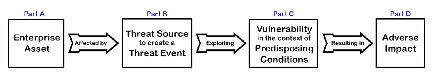
4つの箱が左から右へ矢印でつながっています。Part A は Enterprise Asset（エンタープライズの資産）、矢印「Affected by」（〜の影響を受ける）、Part B は Threat Source to create a Threat Event（脅威事象を引き起こす脅威源）、矢印「Exploiting」（〜を悪用する）、Part C は Vulnerability in the context of Predisposing Conditions（素因となる条件の文脈における脆弱性）、矢印「Resulting In」（〜をもたらす）、Part D は Adverse Impact（悪影響）です。
Fig. 8. Inputs to risk scenario identification17
図8.リスクシナリオ特定への入力17
As shown in Fig. 8, which is derived from the Generic Risk Model in SP 800-30, Revision 1, Guide for Conducting Risk Assessments, cybersecurity risk identification is composed of four necessary inputs – parts A through D – in the Risk Description cell of the cybersecurity risk register [9]. Combining these elements into a risk scenario helps to provide the full context of a potential loss event. The use of this scenario-based approach helps ensure comprehensive risk identification by considering many types of physical and logical events that might occur. The scope of cybersecurity has expanded from its original boundaries of adversarial digital attacks and encompasses all types of uncertainty that can impact any form of information and technology. Accordingly, the risks to be identified and registered are much broader as well.
図8は、SP 800-30第1改訂版『Guide for Conducting Risk Assessments』の汎用リスクモデル（Generic Risk Model）から導かれたものです。図8に示すとおり、サイバーセキュリティリスクの特定は、サイバーセキュリティリスク登録簿[9]のリスクの説明セルにあるパートAからDまでの4つの必要な入力で構成されます。これらの要素をリスクシナリオにまとめることで、潜在的な損失事象の全体像を示すのに役立ちます。このシナリオベースのアプローチでは、発生しうる多様な物理的および論理的事象を考慮することで、包括的なリスク特定を支援します。サイバーセキュリティの範囲は、当初の敵対的なデジタル攻撃という境界を越えて拡大し、あらゆる形態の情報と技術に影響しうるあらゆる種類の不確実性を包含しています。それに伴い、特定して登録すべきリスクの範囲も大幅に広がっています。
The completion of the Risk Description column is composed of four activities that are detailed in Sec.2.2.1 through 2.2.4. The activities include:
リスクの説明の列の完成は、2.2.1項から2.2.4項で詳しく述べる4つの活動で構成されます。活動は次のとおりです。
•Part A – Identification of the organization’s relevant assets and their valuation
•パートA –組織の関連資産の特定とその評価
•Part B – Determination of potential threats that might jeopardize the confidentiality, integrity, and availability of those assets
•パートB –それらの資産の機密性、完全性、可用性を脅かしうる潜在的な脅威の判定
•Part C – Consideration of vulnerabilities or other predisposing conditions of assets that make a threat event possible
•パートC –脅威事象を可能にする、資産の脆弱性またはその他の素因条件の検討
•Part D – High-level evaluation of the potential consequences if the threat source (part B) exploits the weakness (part C) against the organizational asset (part A)
•パートD –脅威源（パートB）が組織の資産（パートA）に対して弱点（パートC）を悪用した場合の、潜在的な結果の大まかな評価
The integration of those elements enables the practitioner to record each scenario in the CSRR as a description of cybersecurity risk. The quantity and level of detail of the risks identified should be in accordance with the risk strategy.
これらの要素を統合することで、実務者は各シナリオをサイバーセキュリティリスクの説明としてCSRRに記録できます。特定するリスクの数と詳細さの水準は、リスク戦略に沿ったものにすべきです。
Enterprises that are just beginning to integrate the cybersecurity risk register results into broader ERM activities will benefit from focusing on an initial and limited number of top risks. Those creating a risk management program for the first time should not wait until the risk register is completed before addressing extraordinary issues. However, over time, the risk register should become the ordinary means of communicating risk information.
サイバーセキュリティリスク登録簿の結果をより広範なERM活動に統合し始めたばかりのエンタープライズは、当初、上位の限られた数のリスクに焦点を当てることで利益を得られます。初めてリスク管理プログラムを作る場合、リスク登録簿が完成するまで例外的な問題への対処を待つべきではありません。しかし、時間の経過とともに、リスク登録簿はリスク情報を伝達する通常の手段になるべきです。
2.2.1. Inventory and Valuation of Assets
2.2.1.資産の目録作成と評価
The first prerequisite for risk identification is the determination of enterprise assets that could be affected by risk (part A in Fig. 8). Assets are not limited to technology; they include any resource that helps to achieve mission objectives (e.g., people, facilities, critical data, intellectual property, and services). For assets that record or store or process data, the relevant data types (e.g., contractual, business sensitive, student records, intellectual property, privacy-related) have a significant bearing on the valuation of an asset and subsequent risk analysis.
リスクの特定の第一の前提条件は、リスクの影響を受けうるエンタープライズ資産の判定です（図8のパートA）。資産は技術に限られず、ミッション目標の達成に役立つあらゆるリソース（例:人、施設、重要なデータ、知的財産、サービス）が含まれます。データを記録、保存、処理する資産については、関連するデータの種類（例:契約、事業上機微なもの、学生の記録、知的財産、プライバシーに関するもの）が、資産の評価とその後のリスク分析に大きく関係します。
Enterprises may benefit from applying a comprehensive method to inventory and monitor enterprise assets, such as the use of a configuration management database (CMDB) or an information technology asset management (ITAM) system. These management tools help to record and track the extent to which various assets contribute to the enterprise’s mission. They can also help track enterprise resources throughout their own life cycle. For example, as the use of mobile devices (including personal devices) expands, there are commercial products that can help maintain inventory to support ongoing risk identification, analysis, and monitoring.
エンタープライズは、構成管理データベース（CMDB）や情報技術資産管理（ITAM）システムの利用など、エンタープライズ資産の目録作成と監視に総合的な手法を適用することが有益な場合があります。これらの管理ツールは、さまざまな資産がエンタープライズのミッションにどの程度貢献しているかを記録し追跡するのに役立ちます。また、エンタープライズのリソースを、そのライフサイクル全体を通じて追跡するのにも役立ちます。たとえば、（個人の機器を含む）モバイル機器の利用が拡大するにつれ、継続的なリスクの特定、分析、監視を支援するため、目録の維持に役立つ市販製品があります。
2.2.1.1. Business Impact Analysis
2.2.1.1.事業影響分析
Risk managers can benefit by using a business impact analysis (BIA) (sometimes called a business impact assessment) process to consistently identify, evaluate, record, and monitor the criticality and sensitivity of enterprise assets. The BIA categorization can, in turn, inform the establishment of risk tolerance levels. At a system level, assets identified in the BIA activities can inform the CSRM process. IR 8286D provides more detail on the BIA and its integration with CSRM and ERM.
リスク管理者は、事業影響分析（BIA）（事業影響評価と呼ばれることもあります）のプロセスを用いて、エンタープライズ資産の重要度と機微性を一貫して特定、評価、記録、監視することで利点を得られます。BIAによる分類は、リスク許容度の水準の設定に役立つ場合があります。システムレベルでは、BIA活動で特定された資産がCSRMプロセスへの情報提供に役立つ場合があります。IR 8286Dでは、BIAとCSRMおよびERMとの統合について、さらに詳しく説明しています。
A BIA can help document many aspects of the value of an asset that may extend well beyond replacement costs. For example, while one can calculate the direct cost of research and development underlying a new product offering, the long-term losses of the potential theft of that intellectual property could have more far-reaching impacts, including future revenue, share prices, enterprise reputation, and competitive advantage. That is among the reasons why it is beneficial to gain the guidance of senior leadership regarding the determination of assets that are critical or sensitive. The relative importance of each enterprise asset will be a necessary input for considering the impact portion of the Risk Description (part D of Fig. 8) in the cybersecurity risk register. Considerations include:
BIAは、交換費用をはるかに超えうる、資産の価値のさまざまな側面を文書化するのに役立ちます。たとえば、新製品の提供の基礎となる研究開発の直接費用は算出できますが、その知的財産が盗まれる可能性による長期的な損失は、将来の収益、株価、エンタープライズの評判、競争優位など、より広範な影響を及ぼしうるものです。これは、重要または機微な資産の判定について上級幹部の指導を得ることが有益である理由の一つです。各エンタープライズ資産の相対的な重要性は、サイバーセキュリティリスク登録簿のリスクの説明のうち影響の部分（図8のパートD）を検討するために必要な入力になります。検討事項には次のものが含まれます。
•Would loss or theft of the resource compromise customer or enterprise private information?
•そのリソースの紛失または盗難によって、顧客またはエンタープライズの非公開情報が危殆化しますか。
•Would disclosure of an asset’s information trigger legal or regulatory fines or actions?
•資産の情報の開示により、法的または規制上の罰金や措置が生じますか。
•Would a lack of availability of the asset interrupt the enterprise’s ability to fulfill its mission or result in costly downtime?
•資産の可用性の欠如により、エンタープライズがミッションを遂行する能力が中断されたり、コストのかかる停止時間が生じたりしますか。
•Would the lack of confidentiality, integrity, or availability of the asset undermine public or consumer confidence or trust in the enterprise?
•資産の機密性、完全性、または可用性の欠如により、エンタープライズに対する国民や消費者の信頼や信用が損なわれますか。
•Do internal or external critical resources depend on this asset to operate?
•内部または外部の重要なリソースが、運用にあたりこの資産に依存していますか。
•For government systems, would loss or theft of the resource or information cause grave damage to national security?
•政府のシステムの場合、そのリソースまたは情報の紛失や盗難により、国家安全保障に重大な損害が生じますか。
As the organization reviews the results of previous system level categorization decisions and monitors risk assessment findings, practitioners can use that information to review system prioritization as an input into the BIA.
組織が以前のシステムレベルのカテゴリ分類の決定結果をレビューし、リスク評価の所見を監視する際、実務者はその情報を用いて、BIAへの入力としてシステムの優先順位付けをレビューできます。
2.2.1.2. Determination of High-Value Assets
2.2.1.2.高価値資産の判定
An example of asset valuation is the U.S. Government’s designation of “high value assets,” or HVAs,18 described in OMB Memorandum M-19-03 as representing agency resources that have been deemed highly sensitive or critical to achieving the business mission [10]. While not all critical federal assets will be characterized as HVAs, OMB M-19-03 represents an example of an enterprise approach to valuation since the memorandum defines the specific categories for consistent designation (i.e., information value, role in Mission Essential Function support, and role in support for Federal Civilian Essential Functions) yet permits each agency to determine which assets meet those criteria. Other common industry examples include the use of specific classifications to reflect the sensitivity and criticality of technology and information, including “Company Confidential” or “Business Sensitive.”
資産評価の一例は、米国政府による「高価値資産（high value assets）」、すなわちHVA18の指定です。OMB Memorandum M-19-03では、機関のリソースのうち、事業ミッションの達成にとって極めて機微または重要と見なされたものを表すと説明されています[10]。重要な連邦資産のすべてがHVAと特徴づけられるわけではありませんが、OMB M-19-03はエンタープライズとしての評価アプローチの一例です。同覚書は、一貫した指定のための具体的なカテゴリ（すなわち、情報の価値、ミッション必須機能の支援における役割、連邦文民必須機能の支援における役割）を定義しつつ、どの資産がそれらの基準を満たすかは各機関が判断することを認めているためです。業界のその他の一般的な例として、技術と情報の機微性と重要性を反映する特定の分類（「社外秘（Company Confidential）」や「事業上機微（Business Sensitive）」など）の使用があります。
Non-federal enterprises have assets listed on a balance sheet and as part of a BIA registry. These lists can serve as a starting point since these assets are generally associated with enterprise goals and objectives. Assets that provide critical services to multiple enterprise objectives can be designated as HVAs as well.
非連邦のエンタープライズは、貸借対照表やBIA登録簿の一部として資産を一覧にしています。これらの資産は一般にエンタープライズの目標や目的に関連しているため、こうした一覧は出発点になります。複数のエンタープライズ目標に対して重要なサービスを提供する資産も、HVAに指定できます。
2.2.1.3. Automation Support for Inventory Accuracy
2.2.1.3.目録の正確性に対する自動化の支援
Accurate and complete asset inventory is an important element of CSRM, and the measurement of that accuracy is often a key performance measurement for CSRM reporting. To illustrate that importance, federal agencies must report how completely their hardware and software asset management inventories reflect what is actually installed on agency networks as part of their annual reporting metrics.
正確で完全な資産目録はCSRMの重要な要素であり、その正確性の測定は、CSRM報告における主要なパフォーマンス測定となることがよくあります。その重要性を示す例として、連邦機関は年次報告のメトリクスの一環として、ハードウェアおよびソフトウェアの資産管理の目録が、機関のネットワークに実際にインストールされているものをどの程度完全に反映しているかを報告しなければなりません。
Automated tools aid in discovering and monitoring various technical components used by the enterprise. For example, a use case described by the NIST Security Content Automation Protocol (SCAP) specification is inventory scanning. Products that have been successfully reviewed as part of the SCAP Validation Program help maintain a comprehensive and accurate inventory of digital assets [11]. Valuation information recorded in that inventory can, in turn, help maintain a comprehensive view of the enterprise assets for which cybersecurity risks should be identified, analyzed, treated, and monitored. The use of automation helps to ensure that enterprise asset inventory is current, accurate, and complete.
自動化ツールは、エンタープライズが使用するさまざまな技術コンポーネントの発見と監視を支援します。たとえば、NIST Security Content Automation Protocol（SCAP）仕様で説明されているユースケースの一つが、目録のスキャンです。SCAP Validation Programの一環として審査に合格した製品は、デジタル資産の包括的で正確な目録を維持するのに役立ちます[11]。その目録に記録された評価情報は、サイバーセキュリティリスクを特定、分析、処理、監視すべきエンタープライズ資産の包括的な見方を維持するのに役立ちます。自動化の利用は、エンタープライズの資産目録が最新で、正確で、完全であることを確実にするのに役立ちます。
The integration of asset inventory management processes throughout the enterprise can help to ensure a complete and accurate repository. For example, harmonizing acquisition, project management, business operations, IT operations, and security as part of an overarching ITAM process will support transparency and real-time data to effectively track and monitor assets.
エンタープライズ全体で資産目録管理プロセスを統合することは、完全で正確なリポジトリを確保するのに役立ちます。たとえば、包括的なITAMプロセスの一環として、調達、プロジェクト管理、事業運営、IT運用、セキュリティを調和させることで、透明性とリアルタイムのデータが得られ、資産を効果的に追跡し監視できるようになります。
2.2.2. Determination of Potential Threats
2.2.2.潜在的な脅威の判定
The enumeration of potential threat sources and the threat events that those sources could initiate is the second prerequisite for the identification of potential risk scenarios. Fig. 9 represents part B of the Risk Description cell of the CSRR. Because information and technology exist in many forms, this threat-informed risk management approach combines data-driven processes (awareness of threats) and sound business judgment (consideration of mission impact) to support comprehensive risk identification.
潜在的な脅威源と、その発生源が引き起こしうる脅威事象を列挙することは、起こりうるリスクシナリオを特定するための第二の前提条件です。図9は、CSRRのリスクの説明セルのパートBを表しています。情報と技術はさまざまな形で存在するため、この脅威情報に基づくリスク管理アプローチは、網羅的なリスクの特定を支援するために、データ駆動のプロセス（脅威の認識）と健全な事業判断（ミッションへの影響の考慮）を組み合わせます。
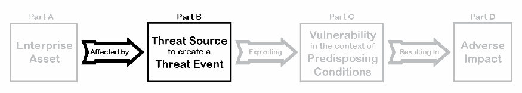
図8の4つのパートの連鎖（Part A: Enterprise Asset（エンタープライズの資産）、「Affected by」、Part B: Threat Source to create a Threat Event（脅威事象を引き起こす脅威源）、「Exploiting」、Part C: Vulnerability in the context of Predisposing Conditions（素因となる条件の文脈における脆弱性）、「Resulting In」、Part D: Adverse Impact（悪影響））で、Part B と「Affected by」の矢印だけが黒で示され、ほかは灰色になっています。
Fig. 9. Threats as an input to risk scenario identification (Part B)
図9.リスクシナリオ特定への入力としての脅威（パートB）
2.2.2.1. Threat Enumeration
2.2.2.1.脅威の列挙
Many public- and private-sector processes are available to help enumerate threats. One example is the OCTAVE Allegro method from Carnegie Mellon University’s Software Engineering Institute [12]. That model includes identification of areas of concern – a process for determining the “possible conditions or situations that can threaten an organization’s information asset.” The OCTAVE Allegro approach describes a process where risk managers create a tree diagram of various threats based on:
脅威の列挙に役立つ官民のプロセスが数多くあります。一例が、Carnegie Mellon UniversityのSoftware Engineering InstituteによるOCTAVE Allegro手法です[12]。このモデルには、懸念領域の特定が含まれ、これは「組織の情報資産を脅かしうる、起こりうる条件や状況」を判定するプロセスです。OCTAVE Allegroのアプローチは、リスク管理者が次のものに基づいてさまざまな脅威のツリー図を作成するプロセスを説明しています。
•Human actors using technical means;
•技術的な手段を用いる人間の行為者
•Human actors using physical methods;
•物理的な方法を用いる人間の行為者
•Technical problems, such as hardware and software defects, malicious code (e.g., viruses), and other system-related problems; and
•ハードウェアやソフトウェアの欠陥、悪意のあるコード（例:ウイルス）、その他のシステム関連の問題などの技術的な問題
•Other problems that are outside of the control of an organization (e.g., natural disasters, unavailability of critical infrastructures).
•組織の統制の及ばないその他の問題（例:自然災害、重要インフラの利用不能）
Enumeration of threats can be performed as a “top-down” analysis that considers important assets that might be threatened or as a “bottom-up” analysis that considers what an unknown threat might attempt to accomplish. Table 3 provides an example excerpt of a threat analysis.
脅威の列挙は、脅かされる可能性のある重要な資産を検討する「トップダウン」分析として、または未知の脅威が何を達成しようとするかを検討する「ボトムアップ」分析として行うことができます。表3は、脅威分析の抜粋例を示します。
Table 3. Example threat modeling analysis
表3.脅威モデリング分析の例
| Source Type | Motivation | Threat Action | Assets Affected |
|---|---|---|---|
| Insider | Accidental, Intentional | Disclosure | Legal documents related to an upcoming merger, sales records, designs from the research and development division |
| Insider | Intentional | Disclosure | Physical files from the personnel department, physical design drawings from manufacturing |
| Insider | Intentional | Modification | Financial transactions diverted for personal gain through a privilege escalation attack |
| External | Accidental | Disclosure | Remote access account information for maintenance service staff |
| External | Intentional | Destruction | Student record database |
| External | Intentional | Disclosure | Patient medical records database (e.g., ransomware) |
| Software Defects | n/a | Modification | Financial transaction database (corruption) |
| Software Defects | n/a | Interruption | Financial transaction database (outage) |
| System Crashes | n/a | Interruption | Retail e-commerce site, payroll processing system, manufacturing automation |
| Utility Outage | n/a | Disclosure | Enterprise network connections, e-commerce data center |
| Natural Disaster | n/a | Interruption | Enterprise network connections, e-commerce data center |
| 発生源の種類 | 動機 | 脅威の行為 | 影響を受ける資産 |
|---|---|---|---|
| 内部者 | 偶発的、意図的 | 開示 | 予定されている合併に関する法的文書、販売記録、研究開発部門の設計 |
| 内部者 | 意図的 | 開示 | 人事部門の物理的なファイル、製造部門の物理的な設計図 |
| 内部者 | 意図的 | 改変 | 権限昇格攻撃により個人的利益のために流用された金融取引 |
| 外部 | 偶発的 | 開示 | 保守サービス担当者のリモートアクセスアカウント情報 |
| 外部 | 意図的 | 破壊 | 学生記録データベース |
| 外部 | 意図的 | 開示 | 患者の診療記録データベース（例:ランサムウェア） |
| ソフトウェアの欠陥 | 該当なし | 改変 | 金融取引データベース（破損） |
| ソフトウェアの欠陥 | 該当なし | 中断 | 金融取引データベース（停止） |
| システムクラッシュ | 該当なし | 中断 | 小売eコマースサイト、給与処理システム、製造の自動化 |
| 公共設備の停止 | 該当なし | 開示 | エンタープライズのネットワーク接続、eコマースのデータセンター |
| 自然災害 | 該当なし | 中断 | エンタープライズのネットワーク接続、eコマースのデータセンター |
The list above includes physical security considerations. Numerous physical issues (e.g., theft, mechanical failures) can affect digital and logical devices, so both logical and physical threat sources should be considered. Threat enumeration should also consider potential motivations or intents. Accidental and intentional threat activity can each have significant impacts, but the evaluation, treatment, and monitoring of each type of activity will vary based on the motivation. Motivation will also have some bearing on the likelihood calculation (as described in subsequent sections).
上記の一覧には、物理セキュリティの考慮事項が含まれています。多くの物理的な問題（例:盗難、機械的故障）がデジタルおよび論理的な機器に影響を及ぼしうるため、論理的な脅威源と物理的な脅威源の両方を考慮すべきです。脅威の列挙では、潜在的な動機や意図も考慮すべきです。偶発的な脅威活動と意図的な脅威活動はいずれも大きな影響を及ぼしえますが、それぞれの活動の評価、処理、監視は動機に応じて異なります。動機は、（後続の節で説明する）発生可能性の算出にも一定の影響を与えます。
Practitioners consider various factors for each threat source based on an understanding of valuable enterprise assets, as determined in Sec.2.2.1. Example considerations include:
実務者は、2.2.1項で判定した価値あるエンタープライズ資産の理解に基づいて、各脅威源についてさまざまな要因を検討します。検討事項の例は次のとおりです。
•What might a human actor accidentally disclose, modify, or destroy?
•人間の行為者が偶発的に開示、改変、破壊する可能性のあるものは何か。
•Are there critical or sensitive data types stored or processed by the assets at risk?
•リスクにさらされている資産が保存または処理する、重要または機微なデータの種類はありますか。
•What information or technology might a person (e.g., a disgruntled employee) intentionally disclose, interrupt, or delete?
•人（例:不満を持つ従業員）が意図的に開示、中断、削除する可能性のある情報や技術は何か。
•Are there threat conditions that might be introduced by supply chain partners, such as external service providers?
•外部サービスプロバイダなどのサプライチェーンのパートナーによって持ち込まれる可能性のある脅威条件はありますか。
•Are any cyber-physical systems or other operational technology (OT) subject to an attack that might impact safety or otherwise affect enterprise operations?
•安全に影響を及ぼしたり、エンタープライズの運用に他の影響を与えたりする攻撃を受けうるサイバーフィジカルシステムやその他の運用技術（OT）はありますか。
•What similar considerations might apply to accidents or intentional actions from an external source using technical means?
•外部の発生源が技術的な手段を用いて行う事故や意図的な行為にも、どのような同様の考慮事項があてはまりますか。
•What technical flaws or malicious code might affect valuable systems and lead to adverse impacts on enterprise objectives?
•価値あるシステムに影響を及ぼし、エンタープライズの目標に有害な影響をもたらしうる技術的な欠陥や悪意のあるコードは何か。
•What natural disasters or utility outages might have harmful effects?
•有害な影響をもたらしうる自然災害や公共サービスの供給停止は何か。
Risk managers should develop a reasonable list of potential threats based on practical and imaginative scenarios, particularly in light of the assets identified in earlier processes. The extent of this list depends on the direction of senior leaders. While some stakeholders may prefer fewer risks in the register, it is important to remember that any risks that are not identified at this stage will not be part of the subsequent risk analysis and may introduce an unforeseen vulnerability.
リスク管理者は、特に以前のプロセスで特定した資産を踏まえ、実際的で想像力に富んだシナリオに基づいて、潜在的な脅威の妥当な一覧を作成すべきです。この一覧の範囲は、上級幹部の指示に依存します。利害関係者の中には、登録簿に載せるリスクが少ないほうを好む人もいますが、この段階で特定されなかったリスクは、その後のリスク分析の対象にならず、予期しない脆弱性をもたらす可能性があることを忘れてはなりません。
2.2.2.2. Reducing Unwanted Bias in Threat Considerations
2.2.2.2.脅威の検討における不要なバイアスの低減
While cybersecurity threat discussions often focus on the intentional and adversarial digital attack, it is important that all risk practitioners consider a broad array of threat sources and events. In addition, while highly unlikely scenarios might not need to be listed (e.g., a meteorite crashing into the data center), risk managers should avoid dismissing threats prematurely. For these reasons, practitioners will benefit from identifying and overcoming bias factors in enumerating potential threat sources and the events they might cause. Consideration of these factors will also help reconcile reactionary thinking with analytical reasoning. An intentional approach to enumerate threats without bias helps to avoid complacency before an incident and supports a proactive evaluation based on relevant data, trends, and current events.
サイバーセキュリティの脅威に関する議論は、意図的で敵対的なデジタル攻撃に焦点を当てることが多いものの、すべてのリスクの実務者が幅広い脅威源と事象を検討することが重要です。また、可能性が極めて低いシナリオ（例:隕石がデータセンターに衝突する）は一覧に載せる必要がないかもしれませんが、リスク管理者は脅威を早計に退けることを避けるべきです。こうした理由から、実務者は、潜在的な脅威源とそれらが引き起こしうる事象を列挙する際に、バイアスの要因を特定して克服することが有益です。これらの要因を考慮することは、反応的な思考と分析的な推論を調整するのにも役立ちます。バイアスなしに脅威を列挙する意図的なアプローチは、インシデント発生前の慢心を避けるのに役立ち、関連するデータ、傾向、最近の出来事に基づく積極的な評価を支えます。
Table 4 describes some of these bias issues as well as methods for addressing them.
表4は、これらのバイアスの問題の一部と、それに対処する手法を説明します。
Table 4. Example bias issues to avoid in risk management
表4.リスク管理で避けるべきバイアスの問題の例
| Bias Type | Description | Example | Countermeasure |
|---|---|---|---|
| Overconfidence | The tendency to be overly optimistic about either the potential benefits of an opportunity or the ability to handle a threat | Notion that “our users are too smart to fall for a phishing attack” | Detailed and realistic risk analysis (see Sec.2.4) helps to evaluate the true probability of threats |
| Group Think | A rationalized desire to miscalculate risk factors based on a desire for conformity with other members of a group or team | A group member may not want to be the only one to express concern about a given threat or opportunity | Use of individual input and subject matter expert judgement (e.g., Delphi Technique) helps avoid the risk that group-based threat discussions might discourage brainstorming |
| Following Trends | Over- or under-valuation of threats due to an irrational consideration of recent hype that can result in inappropriate risk response | Assuming that any digital challenge can be addressed and solved through the application of “machine learning” and “artificial intelligence” | Staying informed about the details of current threat patterns and considering input from subject matter experts helps avoid “following the herd” to unreasonable conclusions |
| Availability | Tendency to over-focus on opportunities or issues that come readily to mind because one has recently heard or read about them | Concern that virtual private network (VPN) confidentiality is insecure because quantum computing will make modern encryption obsolete and unreliable | Detailed and realistic risk analysis (Sec.2.3) helps to evaluate the true probability of threats |
| バイアスの種類 | 説明 | 例 | 対策 |
|---|---|---|---|
| 自信過剰 | 機会の潜在的な便益、または脅威に対処する能力のいずれかについて、過度に楽観的になる傾向 | 「当社のユーザーは賢いので、フィッシング攻撃にだまされることはない」という考え | 詳細で現実的なリスク分析（2 |
| 集団思考 | 集団やチームの他のメンバーに合わせたいという願望に基づき、リスク要因を誤って見積りたくなる、合理化された欲求 | 集団のメンバーが、特定の脅威や機会について懸念を示す唯一の人になりたくない場合がある | 個人の意見と専門家の判断（例:デルファイ法）を用いることは、集団での脅威の議論がブレインストーミングを妨げるリスクを避けるのに役立つ |
| 流行への追随 | 最近の誇大な宣伝を不合理に考慮するために、脅威を過大または過小に評価し、不適切なリスク対応につながりうること | あらゆるデジタル上の課題は、「機械学習」や「人工知能」を適用すれば対処・解決できると考えること | 現在の脅威パターンの詳細について情報を得続け、専門家の意見を考慮することは、「群れに従う」ことで不合理な結論に至るのを避けるのに役立つ |
| 利用可能性 | 最近聞いたり読んだりしたために、すぐに思い浮かぶ機会や問題に過度に注目する傾向 | 量子コンピューティングが現代の暗号を陳腐化させ信頼できなくするため、仮想プライベートネットワーク（VPN）の機密性は安全でないという懸念 | 詳細で現実的なリスク分析（2 |
2.2.2.3. Threat Enumeration Through SWOT Analysis
2.2.2.3. SWOT分析による脅威の列挙
While it is critical that enterprises address potential negative impacts on mission and business objectives, it is equally important (and required for federal agencies) that enterprises also plan for success. OMB states in Circular A-123 that “the profile must identify sources of uncertainty, both positive (opportunities) and negative (threats)” [5].
エンタープライズがミッション目標と事業目標への潜在的な悪影響に対処することは重要ですが、エンタープライズが成功に向けた計画も立てることは同様に重要であり、連邦機関には必須です。OMBはCircular A-123で、「プロファイルは、正（機会）と負（脅威）の両方の不確かさの発生源を特定しなければならない」と述べています[5]。
One method for identifying potential positive and negative risks is through the use of a SWOT (strength, weakness, opportunity, threat) analysis. Because effective risk management is achieved by balancing potential benefits against negative consequences, a SWOT analysis provides a visual method for considering these factors. Table 5 provides an example of an overarching SWOT analysis. A similar exercise could be performed at any level of the enterprise, including for an information system or cyber-physical system.
潜在的な正のリスクと負のリスクを特定する手法の一つは、SWOT（強み、弱み、機会、脅威）分析の利用です。効果的なリスク管理は、潜在的な便益と悪影響のバランスをとることで達成されるため、SWOT分析はこれらの要因を検討するための視覚的な手法を提供します。表5は、包括的なSWOT分析の例を示します。同様の作業は、情報システムやサイバーフィジカルシステムを含め、エンタープライズのどのレベルでも実施できます。
Table 5. Example SWOT analysis
表5. SWOT分析の例
Strengths
| Weaknesses
|
Opportunities
| Threats
|
強み
| 弱み
|
機会
| 脅威
|
2.2.2.4. Use of Gap Analysis to Identify Threats
2.2.2.4.脅威を特定するためのギャップ分析の利用
As part of the threat modeling exercise, practitioners can benefit from evaluating a comparison of current conditions to more desirable conditions and then analyzing any gaps between those to identify potential improvements. This process can be iterative in that the organization may not know the current state until after several rounds of risk management activities. Similarly, practitioners may not fully know the desired state until after several iterations of identifying, assessing, analyzing, and responding to risks. Despite this challenge, gap analysis can be a useful tool to include as part of a broad methodology.
脅威モデリングの作業の一環として、実務者は、現在の状態とより望ましい状態との比較を評価し、その間のギャップを分析して、潜在的な改善点を特定することが有益です。このプロセスは反復的でありえます。組織は、リスク管理活動を数回繰り返すまで、現在の状態を把握していない場合があるためです。同様に実務者も、リスクの特定、評価、分析、対応を数回繰り返すまで、望ましい状態を十分に把握していない場合があります。この難しさはあるものの、ギャップ分析は、幅広い手法の一部として含めるのに有用なツールになりえます。
IR 8286 provides an example of the process described by the Cybersecurity Framework [8], which includes a set of activities that consider the six functions:
IR 8286は、サイバーセキュリティフレームワーク[8]が説明するプロセスの例を示しています。これは6つの機能を考慮する一連の活動を含みます。
1.Govern the organization’s cybersecurity risk management strategy, expectations, and policy for its assets.
1.統治（GOVERN）:組織の資産に対するサイバーセキュリティリスク管理の戦略、期待、ポリシーを定めます。
2.Identify what assets are important for achieving enterprise objectives.
2.識別（IDENTIFY）:エンタープライズの目標の達成にどの資産が重要かを特定します。
3.Protect those assets from known threats and vulnerabilities.
3.防御（PROTECT）:それらの資産を既知の脅威と脆弱性から保護します。
4.Detect risk events on those assets in an efficient and effective manner.
4.検知（DETECT）:それらの資産に対するリスク事象を、効率的かつ効果的に検知します。
5.Respond to such risk events rapidly and effectively.
5.対応（RESPOND）:そのようなリスク事象に迅速かつ効果的に対応します。
6.Recover from any disruptions in accordance with enterprise strategy.
6.復旧（RECOVER）:エンタープライズの戦略に従って、あらゆる中断から復旧します。
The framework decomposes the functions into categories, each of which is further described in terms of strategic and tactical outcomes (subcategories). For each subcategory, the framework recommends the creation of profile artifacts that document the current and desired (or target) policies, processes, and practices. By documenting the “as-is” outcomes, organizations can consider potential risk implications, including potential threat events. That information will later help develop target state profiles for managing risk as directed by risk appetite and risk tolerance statements. More detail about this process is described in IR 8286C. Table 6 provides an example excerpt from a current profile with example threat considerations.
フレームワークは機能をカテゴリに分解し、各カテゴリはさらに戦略的および戦術的な成果（サブカテゴリ）の観点で説明されます。各サブカテゴリについて、フレームワークは、現在の（および望ましい、すなわち目標とする）ポリシー、プロセス、プラクティスを文書化するプロファイルの成果物の作成を推奨しています。「現状（as-is）」の成果を文書化することで、組織は潜在的な脅威事象を含む、潜在的なリスクへの影響を検討できます。その情報は、後にリスク選好度ステートメントとリスク許容度ステートメントの指示に従ってリスクを管理するための、目標状態プロファイルの作成に役立ちます。このプロセスの詳細はIR 8286Cで説明しています。表6は、脅威の考慮事項の例を含む、現状プロファイルの抜粋例を示します。
Table 6. Cybersecurity Framework current state profiles help consider threats
表6.サイバーセキュリティフレームワークの現状プロファイルは脅威の検討に役立つ
| ID | Category | Current State | Threat Considerations |
|---|---|---|---|
| GV.SC | Cybersecurity Supply Chain Risk Management |
|
|
| ID.AM | Asset Management |
|
|
| PR.AT | Awareness and Training |
|
|
| PR.DS | Data Security |
|
|
| DE.CM | Security Continuous Monitoring |
|
|
| RS.MA | Incident Management |
|
|
| RC.RP | Incident Recovery Plan Execution |
|
|
| ID | カテゴリ | 現状 | 脅威の考慮事項 |
|---|---|---|---|
| GV.SC | サイバーセキュリティサプライチェーンリスク管理 |
|
|
| ID.AM | 資産管理 |
|
|
| PR.AT | 意識向上とトレーニング |
|
|
| PR.DS | データセキュリティ |
|
|
| DE.CM | セキュリティの継続的監視 |
|
|
| RS.MA | インシデント管理 |
|
|
| RC.RP | インシデント復旧計画の実行 |
|
|
Another source of ideas for threat modeling is SP 800-53, Security and Privacy Controls for Information Systems and Organizations, which provides a catalog of security and privacy controls19[13]. A companion document, SP 800-53A, Assessing Security and Privacy Controls in Information Systems and Organizations, documents methods for assessing the effectiveness and suitability of those controls for various purposes [14]. Through the examination of controls and assessment methods, practitioners can observe conditions that align with enterprise situations, sparking discussions about potential threats. For example:
脅威モデリングのアイデアのもう一つの源は、セキュリティおよびプライバシーのコントロールのカタログを提供するSP 800-53『Security and Privacy Controls for Information Systems and Organizations』です19[13]。関連文書であるSP 800-53A『Assessing Security and Privacy Controls in Information Systems and Organizations』は、さまざまな目的に対するそれらのコントロールの有効性と適合性を評価する手法を文書化しています[14]。コントロールと評価手法を調べることで、実務者はエンタープライズの状況に合致する条件を観察でき、潜在的な脅威についての議論のきっかけになります。例えば次のとおりです。
A practitioner can consider control AC-17, Remote Access, which states, “The use of encrypted VPNs provides sufficient assurance to the organization that it can effectively treat such connections as internal networks if the cryptographic mechanisms used are implemented in accordance with applicable laws, executive orders, directives, regulations, policies, standards, and guidelines.” [13] The practitioner should then consider the threat conditions that would make encryption necessary (e.g., preventing eavesdropping, ensuring authorization) and perhaps identify regulatory compliance requirements.
原本PDFの抜粋画像
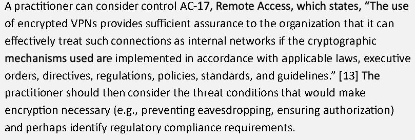
実務者は、コントロールAC-17（Remote Access）を検討できます。これは次のように述べています。「暗号化されたVPNの使用は、使用する暗号メカニズムが、適用される法律、大統領令、指令、規則、ポリシー、標準、ガイドラインに従って実装されている場合、組織がそのような接続を内部ネットワークとして効果的に扱えるという、十分な保証を提供します。」[13]実務者はその後、暗号化が必要となる脅威条件（例:盗聴の防止、認可の確保）を検討し、場合によっては規制上のコンプライアンス要件を特定すべきです。
Considering controls and their assessments can inspire the imagination and support effective threat modeling.
コントロールとその評価を検討することは、想像力をかき立て、効果的な脅威モデリングを支援できます。
As noted in IR 8286, “organizations creating a risk management program for the first time should not wait until the risk register is completed before addressing obvious issues,” such as those issues that arise from the threat modeling exercises. CSRM practitioners, in collaboration with ERM stakeholders, will need to continually define and refine the timing of various risk identification processes. An organization that delays risk management until the end of a detailed and exhaustive risk identification activity may find that many risks become realized while the practitioners are still working. At the other extreme, immediately beginning risk management when only a few risks have been catalogued can hamper prioritization or cause a continual recalculation of risk importance as new loss event types are identified and added. Threat identification methods may also discover quick wins (e.g., changing default passwords for devices and applications, enabling cryptography settings, locking file cabinets) that can be efficiently resolved, immediately addressed, and documented in the risk register while other risk identification activities continue.
IR 8286で述べられているとおり、「初めてリスク管理プログラムを作る組織は、脅威モデリングの作業から生じる問題など、明白な問題に対処する前にリスク登録簿が完成するのを待つべきではありません」。CSRMの実務者は、ERMの利害関係者と協力して、さまざまなリスク特定プロセスの実施時期を継続的に定義し、改良する必要があります。詳細で網羅的なリスク特定の活動が終わるまでリスク管理を遅らせる組織は、実務者が作業を続けている間に、多くのリスクが現実のものとなることに気づくかもしれません。もう一方の極端として、少数のリスクしか目録化されていない段階ですぐにリスク管理を開始すると、優先順位付けが妨げられたり、新たな損失事象の種類が特定されて追加されるたびにリスクの重要度が絶えず再計算されたりする可能性があります。脅威の特定手法は、他のリスク特定の活動を続けている間に、効率的に解決でき、すぐに対処でき、リスク登録簿に記録できるクイックウィン（例:機器やアプリケーションの初期パスワードの変更、暗号設定の有効化、書類棚の施錠）を発見する場合もあります。
2.2.2.5. Technical Threat Enumeration
2.2.2.5.技術的な脅威の列挙
While threat sources include many factors because cybersecurity risks are so closely associated with information and technology, technical threats are likely to comprise the majority of those enumerated. The complexity and rapid evolution of technical threats make it particularly worthwhile to gain insights from reputable partners regarding how to prepare for, recognize, and respond to these threat sources. These insights also help achieve a proactive threat management stance rather than a reactive approach.
サイバーセキュリティリスクは情報と技術に密接に関連しているため、脅威源には多くの要因が含まれますが、列挙されるもののうち大半は技術的な脅威になる可能性が高いです。技術的な脅威は複雑で急速に進化するため、これらの脅威源への備え方、認識の仕方、対応の仕方について、信頼できるパートナーから知見を得ることは特に価値があります。こうした知見は、反応的なアプローチではなく、積極的な脅威管理の姿勢を実現するのにも役立ちます。
To be successful in protecting information and technology and to rapidly detect, respond, and recover from threat events, the organization may choose to apply an intelligence-driven approach, commonly referenced as cyber threat intelligence (CTI). Using sources of information and data, such as those described in Table 7, practitioners will gain insight into adversaries’ tactics, techniques, and procedures (TTPs) as well as other information about how to prepare and what conditions to monitor.
情報と技術を保護し、脅威事象を迅速に検知し、対応し、復旧することに成功するため、組織は、一般にサイバー脅威インテリジェンス（CTI）と呼ばれる、インテリジェンス主導のアプローチを適用することを選ぶ場合があります。表7に記載したような情報とデータの発生源を用いることで、実務者は、敵対者の戦術・技術・手順（TTP）に関する知見と、備え方や監視すべき条件についてのその他の情報を得られます。
Industry-based threat intelligence-sharing organizations are available for the exchange of CTI among members or subscribers. For example, the Department of Defense’s “Defense Industrial Base Collaborative Information Sharing Environment (DCISE)” is a government program that facilitates CTI sharing between its Defense Industrial Base (DIB) members and participants. Another example is that of information sharing and analysis centers (ISACs) and organizations (ISAOs). Using intelligence provided by such sources, risk practitioners can make threat-informed decisions regarding defensive capabilities, threat detection techniques, and mitigation strategies. By correlating and analyzing cyber threat information from multiple sources, an organization can also enrich existing information and make it more actionable.20
メンバーや購読者の間でCTIを交換するための、業界ベースの脅威インテリジェンス共有組織があります。たとえば、国防総省の「Defense Industrial Base Collaborative Information Sharing Environment（DCISE）」は、Defense Industrial Base（DIB）のメンバーと参加者の間でのCTI共有を促進する政府のプログラムです。もう一つの例は、情報共有分析センター（ISAC）および情報共有分析組織（ISAO）です。そのような発生源が提供するインテリジェンスを用いて、リスクの実務者は、防御能力、脅威検知の技術、低減策に関して、脅威情報に基づく意思決定を行えます。複数の発生源からのサイバー脅威情報を相関させて分析することで、組織は既存の情報を充実させ、より行動に移しやすいものにすることもできます。20
Table 7. Example sources of threat information
表7.脅威情報の情報源の例
| Commercial Threat Intelligence sources | Various commercial organizations provide subscription-based services that supply enterprise intelligence regarding potential threat actors and events. Often, these intelligence providers maintain an understanding of enterprise asset types; the commercial provider then provides information about what actions specific threat sources have conducted against similar assets elsewhere. Example: Gartner Inc. Reviews for Security Threat Intelligence Products and Services https:/ |
| Automated Indicator Sharing (AIS) feeds | Both public- and private-sector organizations (e.g., DHS, FS-ISAC) provide automated data feeds with information about existing or imminent threats, as well as vulnerabilities being exploited by those threats. Example: DHS Cybersecurity and Infrastructure Security Agency (CISA) https:/ |
| Information Sharing and Analysis Centers and Organizations (ISACs and ISAOs) | Many industries, including critical infrastructure sectors, experience sector-specific threat types. Information Sharing and Analysis Centers (ISACs) provide members with support and information to help conduct risk assessments and maintain risk awareness. Some ISACs offer in-house applications for sharing indicators of compromise (IoC) and other threat-based alerts. Example: National Council of ISACs (https:/ |
| Technical Threat Category Models | Many industry models are available for performing technical threat modeling, particularly in a software development context. Like the threat trees described in Section 2.2.2, such models help guide collaboration and brainstorming activities to consider what-if scenarios, including threats, vulnerabilities, and their impacts. |
| MITRE ATT&CK® | This is a knowledge base of adversary tactics and techniques based on real-world observations, is used as a foundation for the development of specific threat models and methods and helps enterprise risk practitioners consider the threat conditions that an adversary might apply and the events that adversary might seek to cause. The recent addition of pre-attack indicators and methods can help prepare for and detect signs of an impending event. https:/ |
| NSA/CSS Technical Cyber Threat Framework (NTCTF) v2 | While this model does not help identify sources, it provides a broad list of the types of events that a threat source might attempt to initiate, particularly a motivated human adversary. By defining the actions such an adversary might desire to perform, the NTCTF supports an imaginative approach to enterprise threat modeling. https:/ |
| 商用の脅威インテリジェンスの情報源 | さまざまな商業組織が、潜在的な脅威アクターや事象に関するエンタープライズ向けインテリジェンスを提供する、購読型のサービスを提供しています。多くの場合、これらのインテリジェンス提供者はエンタープライズの資産の種類を把握しており、商用の提供者は、特定の脅威源が他所で同様の資産に対して実行した行動についての情報を提供します。 例: Gartner Inc. Reviews for Security Threat Intelligence Products and Services https:/ |
| Automated Indicator Sharing（AIS）フィード | 官民の両方の組織（例: DHS、FS-ISAC）が、既存または切迫した脅威に関する情報と、それらの脅威が悪用している脆弱性に関する情報を含む、自動化されたデータフィードを提供しています。 例: DHS Cybersecurity and Infrastructure Security Agency（CISA）https:/ |
| 情報共有分析センターおよび情報共有分析組織（ISACsとISAOs） | 重要インフラ部門を含む多くの業界では、部門固有の種類の脅威が発生します。情報共有分析センター（ISAC）は、リスク評価の実施とリスクに対する認識の維持に役立つ支援と情報をメンバーに提供します。一部のISACは、危殆化の指標（IoC）やその他の脅威に基づく警告を共有するための自社アプリケーションを提供しています。 例: National Council of ISACs (https:/ |
| 技術的な脅威カテゴリモデル | 特にソフトウェア開発の文脈で、技術的な脅威モデリングを実施するための業界モデルが数多くあります。2 |
| MITRE ATT&CK® | これは実世界の観察に基づく敵対者の戦術と技術のナレッジベースです。特定の脅威モデルや手法を開発する基盤として使用されるほか、エンタープライズのリスク実務者が、敵対者が適用しうる脅威条件と敵対者が引き起こそうとする事象を検討するのにも役立ちます。攻撃前の指標と手法が最近追加され、差し迫った事象の兆候への備えと検知に役立ちます。 https:/ |
| NSA/CSS Technical Cyber Threat Framework（NTCTF）v2 | このモデルは発生源の特定には役立ちませんが、脅威源、特に動機のある人間の敵対者が開始しようとする可能性のある事象の種類について、幅広い一覧を提供します。そのような敵対者が実行したいと望みうる行動を定義することで、NTCTFはエンタープライズの脅威モデリングへの想像力に富んだアプローチを支援します。 https:/ |
By understanding typical attack patterns, enterprises can mount defenses to improve resilience. For example, understanding the methods of various attackers in privilege escalation or lateral movement will help risk managers plan effective preventive and detective controls. Because technical attacks can move rapidly, preparation is paramount. Updated, rapid sharing of indicators of compromise (such as those provided through Structured Threat Information Expression [STIX]) helps enterprise practitioners better detect and respond to emerging threats.21
典型的な攻撃パターンを理解することで、エンタープライズは、レジリエンスを向上させる防御を構築できます。たとえば、権限昇格や横展開におけるさまざまな攻撃者の手法を理解することは、リスク管理者が効果的な予防的コントロールと検知的コントロールを計画するのに役立ちます。技術的な攻撃は急速に進行しうるため、備えが最も重要です。（Structured Threat Information Expression［STIX］を通じて提供されるものなどの）危殆化の指標を、更新しつつ迅速に共有することは、エンタープライズの実務者が新たな脅威をよりよく検知し対応するのに役立ちます。21
Because of the time-critical nature of cybersecurity risks, the use of automation in threat intelligence analysis enables an enterprise to reduce the potential delays and errors that a human-only approach can introduce. While automated information sharing (AIS) will not entirely eliminate threats, it can help an organization stay aware of and prepared for new and evolving types of attacks. One example of an AIS is that offered by the U.S. Department of Homeland Security (DHS) in accordance with the U.S. Cybersecurity Information Sharing Act of 2015. The DHS AIS site includes the following information:
サイバーセキュリティリスクには時間的な緊急性があるため、脅威インテリジェンスの分析に自動化を用いることで、エンタープライズは、人間だけのアプローチでは生じうる潜在的な遅延や誤りを減らせます。自動化された情報共有（AIS）は脅威を完全に排除するわけではありませんが、組織が新たに進化する種類の攻撃を認識し、備えを保つのに役立ちます。AISの一例が、米国の2015年サイバーセキュリティ情報共有法（Cybersecurity Information Sharing Act of 2015）に従って米国国土安全保障省（DHS）が提供しているものです。DHSのAISサイトには、次の情報が含まれています。
The free (DHS) AIS capability enables the exchange of cyber threat indicators between the Federal Government and the private sector at machine speed. Threat indicators are pieces of information like malicious IP addresses or the sender address of a phishing email (although they can also be much more complicated).AIS participants connect to the “CISA Central” service that allows bidirectional sharing of cyber threat indicators. A server housed at each participant’s location allows them to exchange indicators with CISA. Participants will not only receive DHS-developed indicators but can share indicators they have observed in their own network defense efforts, which DHS will then share back out to all AIS participants.22
原本PDFの抜粋画像
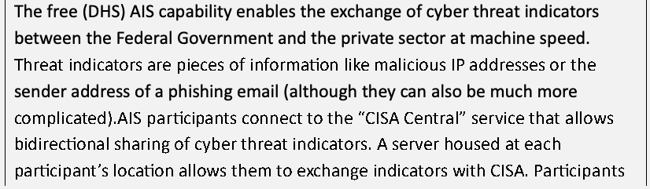
無料の（DHSの）AIS機能により、連邦政府と民間部門の間で、サイバー脅威指標をマシンの速度で交換できます。脅威指標とは、悪意のあるIPアドレスやフィッシングメールの送信元アドレスのような情報です（はるかに複雑なものもありえます）。AISの参加者は、サイバー脅威指標の双方向の共有を可能にする「CISA Central」サービスに接続します。各参加者の拠点に設置されたサーバーにより、CISAと指標を交換できます。参加者は、DHSが開発した指標を受け取るだけでなく、自らのネットワーク防御の取り組みの中で観察した指標を共有することもでき、DHSはそれをすべてのAIS参加者に共有し返します。22
An analysis of network packet capture data can help identify potential threats based on observed traffic. Armed with understanding from CTI sources regarding TTPs and IoCs, practitioners will be able to observe potential indicators and likely attack paths. In conjunction with past and existing cyber incident information, organizations can use CTI to support internal risk communication and risk analysis and to improve risk scenario development. In addition to the technical advisories, the alerts and analysis reports at the DHS National Cyber Alert System provide information about recent TTPs and how they have affected various enterprises.
ネットワークパケットのキャプチャデータの分析は、観察されたトラフィックに基づく潜在的な脅威の特定に役立ちます。TTPとIoCに関するCTIの情報源からの理解を備えることで、実務者は潜在的な指標と、可能性の高い攻撃経路を観察できるようになります。過去および現在のサイバーインシデント情報と合わせて、組織はCTIを用いて、組織内のリスクコミュニケーションとリスク分析を支援し、リスクシナリオの作成を改善できます。技術的な勧告に加えて、DHS National Cyber Alert Systemの警告と分析報告書は、最近のTTPとそれらがさまざまなエンタープライズにどう影響したかに関する情報を提供します。
2.2.3. Vulnerability Identification
2.2.3.脆弱性の特定
For any of the various threat conditions described above to result in an impactful risk, each needs a vulnerable or predisposing condition that can be exploited. The identification of vulnerabilities or conditions that a threat source would use to cause impact is an important component of risk identification and represents part C (Fig. 10) of the CSRM risk scenario. As demonstrated in examples throughout this series, threats and vulnerabilities are not limited to the routine vulnerability management of software flaws, patching and network ports, but encompass a broader range of considerations that SP 800-53 addresses in the form of controls.
上述のさまざまな脅威条件のいずれかが影響の大きいリスクとなるには、それぞれに、悪用されうる脆弱な条件または素因条件が必要です。脅威源が影響を引き起こすために用いる脆弱性や条件の特定は、リスク特定の重要な構成要素であり、CSRMリスクシナリオのパートC（図10）にあたります。このシリーズ全体の例で示すとおり、脅威と脆弱性は、ソフトウェアの欠陥、パッチ適用、ネットワークポートに関する日常的な脆弱性管理に限られず、SP 800-53がコントロールの形で扱う、より広範な考慮事項を含みます。
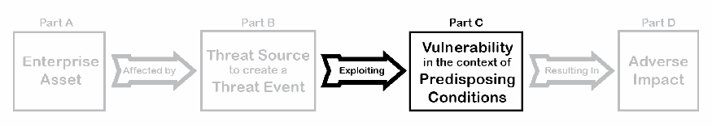
図8の4つのパートの連鎖（Part A: Enterprise Asset（エンタープライズの資産）、「Affected by」、Part B: Threat Source to create a Threat Event（脅威事象を引き起こす脅威源）、「Exploiting」、Part C: Vulnerability in the context of Predisposing Conditions（素因となる条件の文脈における脆弱性）、「Resulting In」、Part D: Adverse Impact（悪影響））で、Part C と「Exploiting」の矢印だけが黒で示され、ほかは灰色になっています。
Fig. 10. Vulnerability inputs to risk scenario identification (Part C)
図10.リスクシナリオ特定への脆弱性の入力（パートC）
2.2.3.1. Determination of Vulnerabilities and Predisposing Conditions
2.2.3.1.脆弱性と素因条件の判定
While it is necessary to review threats and vulnerabilities as unique elements, they are often considered at the same time. Many organizations will consider a given loss scenario and evaluate both. What threat sources might initiate which threat events? What vulnerabilities or predisposing conditions might those threat sources exploit to cause a loss event?23 Much of the information provided through CTI will also inform an understanding of vulnerability. For example, analysis of the infamous 2017 WannaCry ransomware attack includes understanding the threat source and motive (a known and capable cybercrime group seeking financial gain), the intended threat event (deliberate modification, interruption, and potential destruction of key enterprise information assets), and the vulnerability to be exploited (CVE-2017-0144).
脅威と脆弱性は、それぞれ固有の要素としてレビューする必要がありますが、同時に検討されることも多くあります。多くの組織は、ある損失シナリオを検討し、その両方を評価します。どの脅威源が、どの脅威事象を開始しますか。それらの脅威源は、損失事象を引き起こすために、どの脆弱性または素因条件を悪用しますか。23CTIを通じて提供される情報の多くは、脆弱性の理解にも役立ちます。たとえば、悪名高い2017年のWannaCryランサムウェア攻撃の分析には、脅威源と動機（金銭的利益を求める、既知で能力のあるサイバー犯罪グループ）、意図された脅威事象（主要なエンタープライズ情報資産の意図的な改変、中断、潜在的な破壊）、悪用される脆弱性（CVE-2017-0144）の理解が含まれます。
Practitioners should (within the scope agreed-upon in activities described in Sec. 2.1.1) systematically consider the potential physical and logical vulnerabilities and predisposing conditions that can be exploited by a threat source. This consideration can be facilitated by many of the methods described in Table 7, including:
実務者は、（2.1.1項で説明した活動で合意した範囲内で）脅威源に悪用されうる潜在的な物理的および論理的な脆弱性と素因条件を、体系的に検討すべきです。この検討は、表7で説明した手法の多くによって容易になります。これには次のものが含まれます。
•The use of commercial intelligence sources can provide threat and vulnerability information. Many providers will note customer enterprise information and technology (e.g., hardware, software, and operating systems in use) to alert of any vulnerabilities in those platforms that are known to be targeted by existing threat sources.
•商用のインテリジェンスの情報源を利用すると、脅威と脆弱性の情報を得られます。多くの提供者は、顧客エンタープライズの情報と技術（例:使用中のハードウェア、ソフトウェア、オペレーティングシステム）を把握しており、既存の脅威源に狙われていることが知られている、それらのプラットフォームの脆弱性について警告します。
•The integration of AIS feeds may include automated alerts regarding known vulnerabilities. Many security incident event monitoring (SIEM) products and intrusion detection systems (IDS) can help enterprises associate asset inventory information with AIS alerts to support incident reporting and monitoring.
•AISフィードの統合には、既知の脆弱性に関する自動化された警告が含まれる場合があります。多くのセキュリティインシデントイベント監視（SIEM）製品や侵入検知システム（IDS）は、エンタープライズが資産目録の情報をAISの警告と関連づけ、インシデントの報告と監視を支援するのに役立ちます。
•A threat tree model (e.g., the diagram in the OCTAVE ALLEGRO guidance) can consider various human factors, technical defects, software flaws, physical entry points, utility dependencies, and supply chain vulnerabilities that present vulnerabilities.
•脅威ツリーモデル（例: OCTAVE ALLEGROのガイダンスの図）は、脆弱性をもたらすさまざまな人的要因、技術的欠陥、ソフトウェアの欠陥、物理的な侵入口、公共設備への依存、サプライチェーンの脆弱性を検討できます。
•A review of the various threat categorization models (e.g., MITRE ATT&CK®) can inspire internal discussions, such as “What vulnerabilities might enable execution of malicious code?” or “What predisposing conditions foster lateral movement within the enterprise?”
•さまざまな脅威分類モデル（例: MITRE ATT&CK®）のレビューは、「どのような脆弱性が悪意のあるコードの実行を可能にするか」や「どのような素因条件がエンタープライズ内の横展開を助長するか」といった社内の議論のきっかけになります。
As with threat modeling, practitioners will also benefit from applying known risk management frameworks as a tool for vulnerability discovery. For example, a review of the controls catalog in SP 800-53 may lead to consideration of control MP-3, Media Marking, which can then inspire discussion regarding potential vulnerabilities that might result from unmarked (or improperly marked) system media.
脅威モデリングと同様に、実務者も、既知のリスク管理フレームワークを脆弱性発見のツールとして適用すると有益です。たとえば、SP 800-53のコントロールカタログをレビューすると、コントロールMP-3（Media Marking）の検討につながり、マーキングされていない（または不適切にマーキングされた）システムメディアから生じうる潜在的な脆弱性について議論するきっかけになります。
Notably, the enterprise will benefit from the advice of external specialists with expertise in identifying and categorizing various types of vulnerabilities. Some entities, such as those operating moderate- and high-impact federal information systems, require formal penetration testing to identify potential vulnerabilities and the exploitability of those conditions. In addition to some government and law enforcement agencies that are able to assist enterprises with evaluating physical and technical vulnerabilities, many commercial organizations offer these services.
特に、エンタープライズは、さまざまな種類の脆弱性を特定し分類する専門知識を持つ外部の専門家の助言から利益を得られます。中程度および高影響の連邦情報システムを運用する主体など、潜在的な脆弱性とそれらの条件の悪用可能性を特定するために、正式なペネトレーションテストを必要とする主体もあります。エンタープライズによる物理的および技術的な脆弱性の評価を支援できる一部の政府機関や法執行機関に加え、多くの商業組織がこうしたサービスを提供しています。
2.2.3.2. System Complexity as a Vulnerability
2.2.3.2.脆弱性としてのシステムの複雑さ
IR 8286states that additional risks can result from the dynamic complexity of enterprise information and technology. In fact, that complexity is itself a vulnerability to be considered and documented. Evaluation of “what-if” scenarios regarding potential vulnerabilities, especially those affecting critical assets, should include the determination of critical dependencies on other resources. Because risk identification and risk analysis are iterative, risk analysis methods (such as the Event Tree Analysis described in Sec.2.3.2.2) will help determine those dependencies. Having made that determination, those critical dependencies can be recorded in the BIA register (described in Sec.2.2.1.1). Risk identification then includes scenario discussions that evaluate complex or cascading events as vulnerabilities to be identified.
IR 8286は、エンタープライズの情報と技術の動的な複雑さから、追加のリスクが生じうると述べています。実際、その複雑さ自体が、検討し文書化すべき脆弱性です。潜在的な脆弱性、特に重要な資産に影響するものに関する「もし〜なら」のシナリオの評価には、他のリソースへの重要な依存関係の判定を含めるべきです。リスクの特定とリスク分析は反復的であるため、（2.3.2.2項で説明するイベントツリー分析などの）リスク分析手法は、それらの依存関係の判定に役立ちます。判定を行った後、それらの重要な依存関係を（2.2.1.1項で説明した）BIA登録簿に記録できます。その後のリスクの特定には、特定すべき脆弱性として、複雑な事象や連鎖的な事象を評価するシナリオの議論が含まれます。
For example, the 2003 Northeast Power Grid interruption demonstrated how several moderate risk events cascaded into a national emergency.24 Another example of systemic risk are the financial institutions that were impacted by cascading risk in 2008.25 In that case, large enterprises experienced catastrophic events because they had interdependencies with other banks, insurance companies, and customers. When identifying and recording risks in the register, such emerging risk conditions created by the interdependence of systems and counterparty risk must also be identified, tracked, and managed using the same methods described for more straightforward scenarios.
たとえば、2003年の北東部送電網の停電は、いくつかの中程度のリスク事象が連鎖して国家的な緊急事態に発展したことを示しました。24システミックリスクのもう一つの例は、2008年に連鎖的なリスクの影響を受けた金融機関です。25その際、大企業は、他の銀行、保険会社、顧客との相互依存関係があったために、壊滅的な事象を経験しました。登録簿にリスクを特定し記録する際には、システムの相互依存や取引相手のリスクによって生じるこのような新たなリスク条件も、より単純なシナリオについて説明した手法と同じ手法を用いて、特定し、追跡し、管理しなければなりません。
As with other CSRM components, vulnerability identification can be considered through either qualitative or quantitative means. An organization might determine that it has a large number of high severity vulnerabilities based on an internal review. A qualitative review might result from a gap analysis between the Current Profile and the Target Profile within a Cybersecurity Framework Organizational Profile since such an analysis is intended to foster discussion and communication regarding risks but will not likely produce a highly specific quantitative result.
他のCSRMの構成要素と同様に、脆弱性の特定は、定性的な手段でも定量的な手段でも検討できます。組織が内部レビューに基づいて、重大度の高い脆弱性を多数抱えていると判断する場合があります。定性的なレビューは、サイバーセキュリティフレームワークのオーガニゼーショナルプロファイルにおける現行プロファイルと目標プロファイルとの間のギャップ分析から得られる場合があります。そのような分析は、リスクに関する議論とコミュニケーションを促進することを意図したものであり、高度に具体的な定量的結果をもたらす可能性は低いためです。
More quantitative vulnerability identification results from a formal testing approach that examines a discrete set of enterprise resources for a specified set of known vulnerabilities. Particular vulnerability assessments (e.g., software code review or simulated phishing attack) can provide quantitative results. Results of a formal assessment might include a specific number of identified issues, which can be used to help complete the likelihood column of the risk register.
より定量的な脆弱性の特定は、既知の脆弱性の指定された集合について、エンタープライズのリソースの個別の集合を調べる、正式な試験アプローチから得られます。特定の脆弱性評価（例:ソフトウェアコードレビューや模擬フィッシング攻撃）は、定量的な結果をもたらすことができます。正式な評価の結果には、特定された問題の具体的な件数が含まれる場合があり、その件数をリスク登録簿の発生可能性の列の記入に役立てることができます。
2.2.3.3. Vulnerability Identification Automation
2.2.3.3.脆弱性特定の自動化
The complexity and interconnection of technology results in many thousands of potential vulnerabilities. Because of this broad scale combined with a rapidly evolving technical landscape, automation can improve the enterprise’s ability to manage relevant vulnerabilities. Automation also enables a timelier monitoring of risk as well as adaptation to changing risk scenarios.
技術の複雑さと相互接続により、潜在的な脆弱性は数千にのぼります。この規模の大きさと急速に進化する技術環境が相まって、自動化はエンタープライズが関連する脆弱性を管理する能力を向上させることができます。自動化により、リスクの監視をよりタイムリーに行い、変化するリスクシナリオに適応することも可能になります。
Hardware and software products are significant sources of vulnerabilities for any enterprise, whether through inherent flaws in those products or through errors in product implementation or application. To help support the consistent identification and monitoring of these vulnerabilities, security organizations have developed broad clearinghouses of vulnerability information. For example, NIST operates the National Vulnerability Database (NVD) and the National Checklist Program (NCP) to support vulnerability and security configuration management via catalogs of:
ハードウェア製品とソフトウェア製品は、その製品の固有の欠陥によるものであれ、製品の実装や適用の誤りによるものであれ、あらゆるエンタープライズにとって脆弱性の重要な発生源です。これらの脆弱性を一貫して特定し監視することを支援するため、セキュリティ組織は脆弱性情報の広範なクリアリングハウスを構築してきました。たとえばNISTは、次のカタログを通じて脆弱性とセキュリティ構成の管理を支援するため、National Vulnerability Database（NVD）とNational Checklist Program（NCP）を運営しています。
•Configuration checklists for securing key information technologies,
•主要な情報技術を保護するための構成チェックリスト
•Information about secure configuration settings (with associated SP 800-53 security controls),
•（関連するSP 800-53のセキュリティコントロールを伴う）セキュアな構成設定に関する情報
•Vulnerabilities (with associated severity scores),
•（関連する深刻度スコアを伴う）脆弱性
•Standardized security checklists for automated security configuration scanning (e.g., security checklists in Security Content Automation Protocol format26), and
•自動化されたセキュリティ構成スキャン用の標準化されたセキュリティチェックリスト（例: Security Content Automation Protocol形式のセキュリティチェックリスト26）
•Products that use standards to identify and report vulnerabilities.
•脆弱性を特定し報告するために標準を使用する製品
Automated data feeds, such as those described above, enable enterprise monitoring tools to ingest information about known vulnerabilities in near real-time and compare it with the asset inventory. A key factor in that data feed is information regarding the date that a vulnerability was publicly disclosed. The severity of a given vulnerability increases exponentially after it becomes publicly known, so it is important that practitioners prioritize remediation of flaws. The risk of the vulnerability must be balanced with the risk of implementing a fix for that issue too quickly. Automated tools can help monitor and maintain that balance through specific reports regarding severe vulnerabilities that have not been patched within a reasonable time. An example of this is the DHS AWARE (Agency-Wide Adaptive Risk Enumeration) scoring methodology used by the DHS Continuous Diagnostics and Mitigation (CDM) risk management dashboard. AWARE is not intended to identify all issues, but the scoring methodology helps to highlight and prioritize cybersecurity risks that are likely to exceed allowable risk tolerance (e.g., known software vulnerabilities on critical assets that are not mitigated within a designated grace period).27
上述のような自動化されたデータフィードにより、エンタープライズの監視ツールは、既知の脆弱性に関する情報をほぼリアルタイムで取り込み、資産目録と比較できます。そのデータフィードの重要な要素は、脆弱性が公に開示された日付に関する情報です。ある脆弱性の深刻度は、公に知られた後に指数関数的に増大するため、実務者が欠陥の是正に優先順位をつけることが重要です。その脆弱性のリスクは、その問題の修正を急ぎすぎて実施するリスクとのバランスをとらなければなりません。自動化ツールは、妥当な期間内にパッチが適用されていない深刻な脆弱性に関する具体的な報告を通じて、そのバランスを監視し維持するのに役立ちます。その一例が、DHSのContinuous Diagnostics and Mitigation（CDM）リスク管理ダッシュボードで使用されている、DHS AWARE（Agency-Wide Adaptive Risk Enumeration）のスコアリング手法です。AWAREはすべての問題を特定することを意図していませんが、そのスコアリング手法は、許容されるリスク許容度を超える可能性が高いサイバーセキュリティリスク（例:指定された猶予期間内に低減されていない、重要な資産上の既知のソフトウェア脆弱性）を強調し、優先順位をつけるのに役立ちます。27
2.2.4. Determining Potential Impact
2.2.4.潜在的な影響の判定
The final prerequisite for creating a practical list of risk scenarios for the risk register is the determination of the potential impact of the threats and vulnerabilities described above. The section below describes the completion of part D of the CSRM Risk Description column (Fig. 11).
リスク登録簿に載せる実用的なリスクシナリオの一覧を作成するための最後の前提条件は、上述の脅威と脆弱性の潜在的な影響の判定です。以下の節では、CSRMのリスクの説明の列のパートDの完成（図11）について説明します。
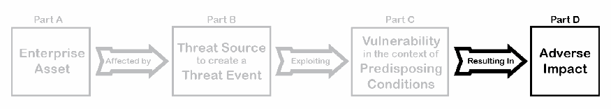
図8の4つのパートの連鎖（Part A: Enterprise Asset（エンタープライズの資産）、「Affected by」、Part B: Threat Source to create a Threat Event（脅威事象を引き起こす脅威源）、「Exploiting」、Part C: Vulnerability in the context of Predisposing Conditions（素因となる条件の文脈における脆弱性）、「Resulting In」、Part D: Adverse Impact（悪影響））で、Part D と「Resulting In」の矢印だけが黒で示され、ほかは灰色になっています。
Fig. 11. Adverse impact inclusion in risk scenario identification (Part D)
図11.リスクシナリオ特定における有害な影響の組み込み（パートD）
Discovery activities throughout Sec.2.2 may have already highlighted potential adverse impacts to explore. Description of the impact is a key element for enterprise stakeholders and represents the connection between cybersecurity risks and the enterprise objectives that would be affected by those risks. Reviewing the key enterprise objectives, as identified in scoping, and armed with a broad list of potential threats and vulnerabilities, personnel can develop a list of realistic scenarios.
2.2節全体の発見活動によって、調査すべき潜在的な有害な影響がすでに明らかになっている場合があります。影響の説明はエンタープライズの利害関係者にとって重要な要素であり、サイバーセキュリティリスクと、そのリスクの影響を受けるエンタープライズの目標とのつながりを表します。スコープ設定で特定した主要なエンタープライズの目標をレビューし、潜在的な脅威と脆弱性の幅広い一覧を手にすることで、要員は現実的なシナリオの一覧を作成できます。
While some types of impact may not be immediately apparent, the long-term effects can be significant. For example, consider a situation where a criminal has gained unauthorized access to an enterprise system and has exfiltrated a large amount of confidential data. If that criminal is cautious, there may not be any disruption of operations. In fact, sometimes cyber criminals actually try to improve the health of a victim’s technology to ensure that it will be available for their malicious activity. In this case, the system may seem to be working fine – even better than ever – and then later, the enterprise realizes that a catastrophic loss has occurred.
影響の種類によっては、すぐには明らかにならないものがありますが、長期的な影響は大きくなりえます。たとえば、犯罪者がエンタープライズのシステムに不正アクセスし、大量の機密データを持ち出した状況を考えてみましょう。その犯罪者が慎重であれば、運用に何の中断も生じないかもしれません。実際、サイバー犯罪者は、悪意のある活動に使えるよう確実にするため、被害者の技術の健全性を改善しようとすることさえあります。この場合、システムは正常に動作しているように見え（むしろこれまで以上に良好に見えることもあります）、その後になって、エンタープライズが壊滅的な損失が発生していたことに気づきます。
Notably, impact scenarios can be considered as a continuum rather than as a binary state. Many impacts will cause mission degradation or reduced performance and may not exhibit themselves as a full interruption of service or capability. This consideration should be factored into risk prioritization and analysis.
特に、影響のシナリオは、二値の状態としてではなく、連続体として考えることができます。多くの影響は、ミッションの劣化や性能の低下を引き起こしますが、サービスや能力の完全な中断としては現れない場合があります。この点は、リスクの優先順位付けと分析に織り込むべきです。
Risk scenarios should be assessed in terms of both initial impact and downstream consequences. Factors to consider include:
リスクシナリオは、初期の影響と下流の結果の両方の観点で評価すべきです。考慮すべき要素には次のものが含まれます。
•Primary impact – The initial impact following a negative cybersecurity event, such as the downtime when a website is unavailable to customers
•一次的な影響–顧客がウェブサイトを利用できない間の停止時間など、サイバーセキュリティ上の負の事象の直後の初期の影響
•Secondary impact – A loss event that occurs subsequent to the primary impact as a downstream or cascading impact to the enterprise
•二次的な影響–一次的な影響の後に、エンタープライズへの下流の影響または連鎖的な影響として発生する損失事象
For example, consider a large enterprise that experiences a breach of confidential customer data. In this example, an external attacker with criminal intent might attack a highly critical and sensitive customer database through a software vulnerability on the internet-facing website. The initial impact may be minimal since exfiltration is not disruptive, and the company may not even detect an issue. Once the problem has been discovered, there may be primary impacts, such as:
たとえば、機密の顧客データの侵害を経験した大規模なエンタープライズを考えてみましょう。この例では、犯罪の意図を持つ外部の攻撃者が、インターネットに面したウェブサイトのソフトウェアの脆弱性を通じて、極めて重要で機微な顧客データベースを攻撃する場合があります。持ち出しは業務を妨げないため、初期の影響は最小限かもしれず、企業は問題に気づきさえしないかもしれません。問題が発見されると、次のような一次的な影響が生じる場合があります。
•Cost of a focused investigation into the breach
•侵害に関する集中的な調査の費用
•Price of restitution for customer losses (e.g., credit monitoring services)
•顧客の損失に対する補償の費用（例:クレジットモニタリングサービス）
•The expense of third-party specialists to provide forensic expertise and to ensure adequate mitigation of the cybersecurity incident
•フォレンジックの専門知識を提供し、サイバーセキュリティインシデントの適切な低減を確実にするための、サードパーティの専門家の費用
•Cost of immediate capital investment to address cybersecurity issues that contributed to the breach
•侵害の一因となったサイバーセキュリティ上の問題に対処するための、即時の設備投資の費用
Long-term or secondary effects may be more impactful. They can include:
長期的または二次的な影響のほうが、影響が大きい場合があります。次のものが含まれます。
•Loss of market share due to eroded trust in the company’s reputation
•企業の評判に対する信頼が損なわれたことによる市場シェアの喪失
•Reduction or cessation of funding for a government agency or program
•政府機関またはプログラムへの資金の削減または停止
•Revenue losses from organizations that choose not to renew contracts
•契約の更新をしないことを選ぶ組織からの収益の損失
•Fines and penalties from regulators
•規制当局からの罰金と制裁金
When considering the impact component of risk scenarios, it is important to consider the frequency of potential consequences. A risk event of moderate impact that occurs weekly may, over time, represent a higher risk than that of a major event that occurs infrequently. Such temporal factors may be valuable for stakeholders’ understanding and reporting of risks. For example, senior leaders may wish to see the impact of a risk expressed as the loss for each occurrence (the single loss expectancy, or SLE), or they might prefer to see the total loss for that risk over an annual period (the annualized loss expectancy, or ALE). Consistent documentation of impact frequency is also important for supporting the integration and aggregation of risk registers.
リスクシナリオの影響の要素を検討するときは、潜在的な結果の頻度を考慮することが重要です。毎週発生する中程度の影響のリスク事象は、時間が経つと、まれに発生する大きな事象より高いリスクを表す場合があります。このような時間的な要因は、利害関係者がリスクを理解し報告するうえで価値がある場合があります。たとえば、上級幹部は、リスクの影響を、発生1回あたりの損失（単一損失予測値、SLE）として表現したものを見たいと望むかもしれず、あるいは、年間を通じたそのリスクの総損失（年間予想損失額、ALE）を見ることを好むかもしれません。影響の頻度を一貫して文書化することも、リスク登録簿の統合と集約を支援するうえで重要です。
As with other risk components, impact considerations may be either qualitative or quantitative, as illustrated by the examples in Table 8.
他のリスクの構成要素と同様に、影響の考慮事項は、表8の例に示すとおり、定性的でも定量的でもかまいません。
Table 8. Example negative and positive impact scenarios
表8.負の影響シナリオと正の影響シナリオの例
| Description of negative consequences (qualitative) | A software flaw results in a significant issue with the integrity of enterprise financial systems, necessitating a major outage and extended rework to validate existing records and verify proper operation. |
| Description of negative consequences (quantitative) | A ransomware attack has performed unauthorized encryption of 112,000 patient records. Remediation and repair of the affected health information system are likely to disrupt operations for 48 hours, resulting in a $1.14 million primary loss. |
| Description of positive impact (qualitative) | New machine learning technology would significantly increase the throughput of the enterprise research team and could lead to expansion into new marketing areas. |
| Description of positive impact (quantitative) | The addition of high-availability services for the enterprise web server will improve availability from 93.4 % to 99.1 % over the next year and will also improve market share by 3 % due to improved customer satisfaction and resulting reviews. |
| 負の結果の説明（定性的） | ソフトウェアの欠陥により、エンタープライズの財務システムの完全性に重大な問題が生じ、大規模な停止と、既存の記録を検証し正しい動作を確認するための長期の手戻りが必要になります。 |
| 負の結果の説明（定量的） | ランサムウェア攻撃により、112,000件の患者記録が不正に暗号化されました。影響を受けた医療情報システムの修復と復旧により、運用が48時間中断する可能性が高く、114万ドルの一次的損失が生じます。 |
| 正の影響の説明（定性的） | 新しい機械学習技術により、エンタープライズの研究チームのスループットが大幅に向上し、新たな市場分野への拡大につながる可能性があります。 |
| 正の影響の説明（定量的） | エンタープライズのウェブサーバーに高可用性サービスを追加することで、今後1年間で可用性が93 |
2.2.5. Recording Identified Risks
2.2.5.特定されたリスクの記録
Using the four elements described in earlier subsections (i.e., key assets, threats, vulnerabilities, and impacts), practitioners can complete the risk description column in the risk register. As previously stated, the CSRR provides a brief synopsis of each identified risk and the RDR provides for recording and managing many of the specific details developed above.
実務者は、前の小節で説明した4つの要素（すなわち、主要な資産、脅威、脆弱性、影響）を用いて、リスク登録簿のリスクの説明の列を完成させることができます。前述のとおり、CSRRは特定された各リスクの簡潔な概要を提供し、RDRは上記で作成した具体的な詳細の多くを記録し管理するために使われます。
![An excerpt of a risk register, torn off at the right and bottom edges. Columns: ID, Priority, Risk Description, Risk Category, Current Assessment (Likelihood, Impact, Exposure Rating). A dashed box highlights the Risk Description column. Row 1: ID 1, Priority TBD, Risk Description "External criminal attacker exploits a software vulnerability in the internet-facing customer data site, resulting in “significant” customer confidential data exfiltration with revenue, reputation, and regulatory implications." Row 2: ID 2, Priority TBD, Risk Description "A flood event enters the first-floor data center, causing water damage to several critical servers and interrupting service to more than 10% of customers." The other cells are empty.](assets/ir-8286ar1/p0055-figure-01.png)
右端と下端が破れた形で切り取られたリスクレジスターの抜粋です。列は ID、Priority（優先度）、Risk Description（リスクの説明）、Risk Category（リスクのカテゴリー）、Current Assessment（現在の評価: Likelihood（可能性）、Impact（影響）、Exposure Rating（エクスポージャーの評価））です。Risk Description の列が破線の枠で強調されています。行1は ID 1、Priority TBD（未定）、Risk Description「External criminal attacker exploits a software vulnerability in the internet-facing customer data site, resulting in “significant” customer confidential data exfiltration with revenue, reputation, and regulatory implications.」（外部の犯罪者である攻撃者が、インターネットに面した顧客データサイトのソフトウェアの脆弱性を悪用し、顧客の機密データの「重大な」流出を引き起こし、収益・評判・規制面に影響が及ぶ）です。行2は ID 2、Priority TBD、Risk Description「A flood event enters the first-floor data center, causing water damage to several critical servers and interrupting service to more than 10% of customers.」（洪水が1階のデータセンターに浸入し、複数の重要なサーバーに水害をもたらし、顧客の10%超へのサービスを中断させる）です。ほかのセルは空です。
Fig. 12. Example risk register with sample risk descriptions
図12.リスクの説明のサンプルを含むリスク登録簿の例
The use of detailed risk scenarios helps ensure that all understand the risks being considered and the impacts on organizational objectives. The risk description (illustrated in Fig. 12) need not be exhaustive but should include sufficient information to support subsequent analysis, evaluation, treatment, and monitoring. Use of a cause-and-effect format clarifies the event or scenario under consideration and its specific impacts. An example risk description based on the data breach illustration above might say:
詳細なリスクシナリオを用いることで、検討中のリスクと、それが組織の目標に及ぼす影響を全員が確実に理解できるようになります。（図12に示す）リスクの説明は網羅的である必要はありませんが、その後の分析、評価、処理、監視を支援するのに十分な情報を含めるべきです。原因と結果の形式を用いると、検討中の事象やシナリオと、その具体的な影響が明確になります。上記のデータ侵害の例に基づくリスクの説明の例は、次のようになります。
External criminal attacker exploits a software vulnerability in the internet-facing customer data site, resulting in “significant” customer confidential data exfiltration with revenue, reputation, and regulatory implications.
原本PDFの抜粋画像
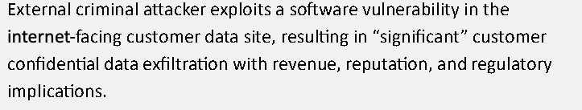
外部の犯罪者である攻撃者が、インターネットに面した顧客データサイトのソフトウェア脆弱性を悪用し、収益、評判、規制への影響を伴う「重大な」顧客の機密データの持ち出しが発生します。
In support of ERM, practitioners need to continually balance an understanding of what mission objectives can be affected by various threats (a top-down consideration) and how various threats can impact enterprise objectives (a bottom-up consideration). Both sets of conditions are continually changing, so CSRM is an iterative activity of ongoing discovery, communication, response, and monitoring. In addition to the known risks that are already being monitored, there may also be developing or emerging risks that are yet to be fully defined but might disrupt enterprise objectives in the future.
ERMを支援するため、実務者は、さまざまな脅威によってどのミッション目標が影響を受けうるか（トップダウンの検討）と、さまざまな脅威がエンタープライズの目標にどう影響しうるか（ボトムアップの検討）の理解との間で、継続的にバランスをとる必要があります。どちらの条件も絶えず変化しているため、CSRMは、継続的な発見、コミュニケーション、対応、監視を行う反復的な活動です。すでに監視されている既知のリスクに加えて、まだ十分に定義されていないものの、将来エンタープライズの目標を妨げうる、発展中または新たに現れつつあるリスクが存在する場合もあります。
Each of the activities in Sec.2.2 is iterative and supports the top-down/bottom-up approach described above. An if/then scenario analysis can be developed and used to consider threats and vulnerabilities, which may lead to the discovery of additional risk scenarios to be considered. This iterative process can be adjusted and tailored to develop and maintain a practical and manageable set of risks.
2.2節の各活動は反復的であり、上述のトップダウン／ボトムアップのアプローチを支えます。「もし〜ならば」のシナリオ分析を作成し、脅威と脆弱性の検討に使うことで、検討すべき追加のリスクシナリオの発見につながる場合があります。この反復的なプロセスは、実用的で管理可能なリスクの集合を作成し維持するために、調整し、適合させることができます。
As an example, consider some high-value assets that are important to a local hospital and issues that could jeopardize those assets. Some top-down considerations may include:
例として、地域の病院にとって重要な高価値資産と、それらの資産を脅かしうる問題を考えてみましょう。トップダウンの検討事項には、次のものが含まれる場合があります。
•Patient record database – A ransomware attack could encrypt critical records; a network outage could disrupt availability; an authentication issue could hamper the ability to log in; a software upgrade could inadvertently corrupt the data.
•患者記録データベース–ランサムウェア攻撃により重要な記録が暗号化される可能性があります。ネットワークの停止により可用性が損なわれる可能性があります。認証の問題によりログインが妨げられる可能性があります。ソフトウェアのアップグレードによりデータが意図せず破損する可能性があります。
•Pharmaceutical system provided by a third party – A malicious (or tricked) insider could alter pharmacy records, resulting in incorrect medication being given to a patient; the malicious external party could break in and disclose or destroy pharmacy records; a construction incident could sever network communications to the service.
•サードパーティが提供する薬局システム–悪意のある（または騙された）内部者が薬局の記録を改ざんし、患者に誤った薬が投与される可能性があります。悪意のある外部の者が侵入して薬局の記録を開示または破壊する可能性があります。工事の事故により、サービスへのネットワーク通信が切断される可能性があります。
•Point of care (PoC) terminals – Authentication system failure could disrupt the ability to provide patient care; user data error could result in inaccurate and potentially unsafe patient conditions; an improperly tested software patch could render terminals unusable.
•ポイントオブケア（PoC）端末–認証システムの障害により、患者ケアを提供する能力が損なわれる可能性があります。ユーザー入力データの誤りにより、不正確で、安全でない可能性のある患者の状態が生じる可能性があります。適切に試験されていないソフトウェアパッチにより、端末が使用不能になる可能性があります。
Bottom-up considerations start with threats and vulnerabilities and consider where those can lead:
ボトムアップの検討事項は、脅威と脆弱性から始まり、それらがどこにつながりうるかを考えます。
•Ransomware attack through a social engineering attack (e.g., web-based malware drive-by attack, email phishing attack) – An attack could render many systems unreadable, including patient care databases, pharmacy records, billing systems, and payroll.
•ソーシャルエンジニアリング攻撃（例:ウェブベースのマルウェアのドライブバイ攻撃、電子メールのフィッシング攻撃）によるランサムウェア攻撃–攻撃により、患者ケアのデータベース、薬局の記録、請求システム、給与を含む多くのシステムが読み取り不能になる可能性があります。
•Network outage due to a firewall malfunction – An internal failure of a major switch or router could result in localized failures of PoC terminals, patient in-processing, and medical care services (e.g., review of radiology reports). External connectivity failure would disrupt electronic mail, clinical professional services, pharmaceutical processing, some laboratory results.
•ファイアウォールの誤動作によるネットワークの停止–主要なスイッチやルーターの内部障害により、PoC端末、患者の受け入れ手続き、医療サービス（例:放射線画像レポートの確認）に局所的な障害が生じる可能性があります。外部接続の障害は、電子メール、臨床の専門サービス、薬剤の処理、一部の検査結果を妨げます。
•Physical hardware malfunction through a failed component – Technical equipment (e.g., televisions) could be rendered unavailable with few consequences, and technology (e.g., patient scanners) malfunctions could fail to provide timely and accurate patient results. Awaiting replacement systems could lead to potential injuries (e.g., through fire or electrical shock) or delays in patient care.
•故障した部品による物理的なハードウェアの誤動作–技術機器（例:テレビ）が利用できなくなっても、影響はほとんどない場合があり、技術（例:患者用スキャナー）の誤動作により、患者の結果を適時かつ正確に提供できない可能性があります。交換システムの到着を待つことで、潜在的な負傷（例:火災や感電）や患者ケアの遅れにつながる可能性があります。
Thorough risk identification in realistic and mission-oriented scenarios help to communicate the connection between various uncertainties and the mission objectives that might be affected.
現実的でミッション志向のシナリオにおいてリスクを徹底的に特定することは、さまざまな不確かさと、影響を受けうるミッション目標との関連を伝えるのに役立ちます。
2.2.6. Risk Categorization
2.2.6.リスクの分類
Each risk in the CSRR should also indicate the relevant risk category (indicated by the solid, thick black box in Fig. 13) based on the risk strategy guidance described in Sec.2.1.1. Categories could be any taxonomy that helps aggregate risk information and supports the integration of cybersecurity risk registers for ERM decision support. Example risk categories include:
CSRRの各リスクは、2.1.1項で説明したリスク戦略ガイダンスに基づき、関連するリスクカテゴリ（図13の太い黒の実線のボックスで示されるもの）も示すべきです。カテゴリは、リスク情報の集約に役立ち、ERMの意思決定を支援するためのサイバーセキュリティリスク登録簿の統合を支える、どのような分類体系でもかまいません。リスクカテゴリの例には次のものがあります。
•Risk framework groupings, such as by security and privacy control families (e.g., Access Control, Supply Chain Risk Management, such as those recorded in SP 800-53)
•リスクフレームワークによるグループ分け。セキュリティおよびプライバシーのコントロールファミリー別など（例: SP 800-53に記録されている、アクセス制御、サプライチェーンリスク管理）
•Threat types, such as intentional disclosures, unintended modifications, system failures, or natural disasters
•脅威の種類。意図的な開示、意図しない改変、システム障害、自然災害など
•Impact considerations based on business units affected or information systems impacted
•影響を受ける事業部門や影響を受ける情報システムに基づく、影響の考慮事項
Consistent risk categorization supports the effective integration of cybersecurity risks throughout the enterprise and aggregation into an enterprise cybersecurity risk register. That information ultimately becomes part of the overall Enterprise Risk Register and the Enterprise Risk Profile.
リスクの分類を一貫させることは、エンタープライズ全体でサイバーセキュリティリスクを効果的に統合し、エンタープライズのサイバーセキュリティリスク登録簿に集約することを支えます。その情報は最終的に、エンタープライズリスク登録簿全体とエンタープライズリスクプロファイルの一部になります。
2.3. Detailed Risk Analysis
2.3.詳細なリスク分析
![The blank "Notional Cybersecurity Risk Register" template shown in Fig. 4 (columns ID, Priority, Risk Description, Risk Category, Current Assessment with Likelihood, Impact, and Exposure Rating, Risk Response Type, Risk Response Cost, Risk Response Description, Risk Owner, Status; rows 1 to 5; bottom band "Continually Communicate, Learn, and Update"). A solid, thick black box highlights the Risk Category column, and a dashed box highlights the Current Assessment columns (Likelihood, Impact, Exposure Rating).](assets/ir-8286ar1/p0057-figure-01.png)
図4と同じ空の「Notional Cybersecurity Risk Register」のひな形です（列は ID、Priority（優先度）、Risk Description（リスクの説明）、Risk Category（リスクカテゴリ）、Current Assessment（現在の評価: Likelihood（可能性）、Impact（影響）、Exposure Rating（エクスポージャの評価））、Risk Response Type（リスク対応の種類）、Risk Response Cost（リスク対応のコスト）、Risk Response Description（リスク対応の説明）、Risk Owner（リスクオーナー）、Status（状況）。行は 1 から 5。下端の帯は「Continually Communicate, Learn, and Update」）。Risk Category の列が太い黒の実線の枠で、Current Assessment の列（Likelihood、Impact、Exposure Rating）が破線の枠で強調されています。
Fig. 13. CSRR highlighting risk category and current assessment columns
図13.リスクカテゴリと現行評価の列を強調したCSRR
Risk analysis enables the determination of the likelihood of impact and priority of treatment. This section helps to complete the likelihood and impact columns of the cybersecurity risk register and the exposure column that represents the product of those two values. These columns are illustrated by the dashed box in Fig. 13.
リスク分析により、影響の発生可能性と処理の優先順位を判定できます。この節は、サイバーセキュリティリスク登録簿の発生可能性と影響の列、およびそれら2つの値の積を表すエクスポージャの列を完成させるのに役立ちます。これらの列は、図13の破線のボックスで示されています。
Because cybersecurity risk reflects the effect of uncertainty on or within a digital component that supports enterprise objectives, risk analysis helps to measure both the level of uncertainty entailed by the risk scenario and the extent of the uncertain effect upon enterprise objectives. Deterministic models can provide a detailed analysis of likelihood and impact where sufficient information is available for such a determination. In other cases, the randomness of uncertainty and the many factors involved in complex information and technology better support a probabilistic (or stochastic) methodology.
サイバーセキュリティリスクは、エンタープライズの目標を支えるデジタルコンポーネントに対する、またはその内部における不確かさの影響を反映するため、リスク分析は、リスクシナリオに伴う不確かさの水準と、エンタープライズの目標に及ぼす不確かな影響の程度の両方を測定するのに役立ちます。決定論的モデルは、そのような判定に十分な情報が得られる場合に、発生可能性と影響の詳細な分析を提供できます。それ以外の場合は、不確かさのランダム性と、複雑な情報と技術に関わる多くの要因を考慮すると、確率論的な手法のほうが適しています。
2.3.1. Selecting Risk Analysis Methodologies
2.3.1.リスク分析手法の選択
International Electrotechnical Commission (IEC) standard 31010:2019, Risk management — Risk assessment techniques, provides a comprehensive list of risk analysis techniques. The standard states,
国際電気標準会議（IEC）規格31010:2019『Risk management — Risk assessment techniques』は、リスク分析手法の包括的な一覧を提供しています。この規格は次のように述べています。
In deciding whether a qualitative or quantitative technique is more appropriate, the main criteria to consider are the form of output of most use to stakeholders and the availability and reliability of data. Quantitative techniques generally require high quality data if they are to provide meaningful results. However, in some cases where data is not sufficient, the rigor needed to apply a quantitative technique can provide an improved understanding of the risk, even though the result of the calculation might be uncertain [15].
原本PDFの抜粋画像
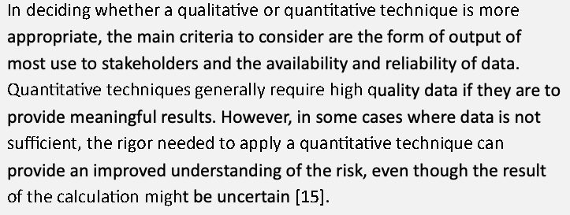
定性的な手法と定量的な手法のどちらがより適切かを判断するにあたり、考慮すべき主な基準は、利害関係者にとって最も有用な出力の形式と、データの入手可能性および信頼性です。定量的な手法は、一般に、意味のある結果を提供するには高品質のデータを必要とします。しかし、データが十分でない場合には、計算結果が不確かであっても、定量的な手法を適用するのに必要な厳密さによって、リスクの理解が深まることがあります[15]。
The Open Group Standard for Risk Taxonomy (O-RT) Version 3.0.1, part of the Open Factor Analysis of Information Risk (OpenFAIR) series of documents, supports the assertion that quantitative risk analysis can provide an improved understanding of risk [16].28 It points out,
Open Factor Analysis of Information Risk（OpenFAIR）文書シリーズの一部である、The Open Group Standard for Risk Taxonomy (O-RT) Version 3.0.1は、定量的なリスク分析がリスクの理解を深めうるという主張を支持しています[16]。28同標準は次のように指摘しています。
Because risk is invariably a matter of future events, there is always some amount of uncertainty, which means executives cannot choose or prioritize effectively based upon statements of possibility. Effective risk decision-making can only occur when information about probabilities is provided. Moreover, risk analyses should not be considered predictions of the future. The word “prediction” implies a level of certainty that rarely exists in the real world and does not help people understand the probabilistic nature of analysis. For decision-makers, even though it is impossible to know which roll of the dice will come up, knowing that the probability is 1-in-36 is valuable information.
原本PDFの抜粋画像
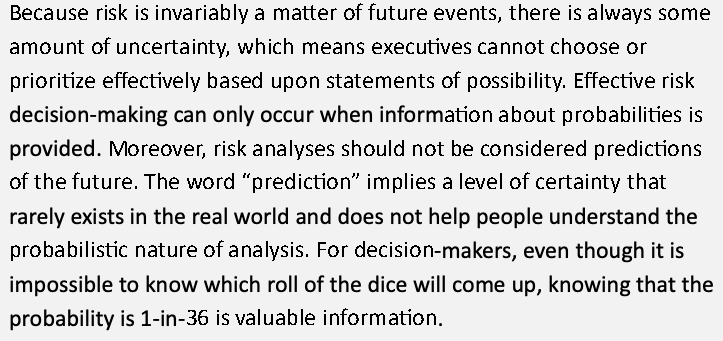
リスクは例外なく将来の事象に関するものであるため、常にある程度の不確かさがあり、これは経営幹部が可能性に関する記述に基づいて効果的に選択したり優先順位をつけたりできないことを意味します。効果的なリスクに関する意思決定は、確率に関する情報が提供されて初めて可能になります。さらに、リスク分析を将来の予測と見なしてはなりません。「予測」という語は、現実世界ではめったに存在しない確実性の水準を暗示しており、分析の確率的な性質を人々が理解する助けになりません。意思決定者にとって、サイコロのどの目が出るかを知ることは不可能でも、その確率が36分の1であると知ることは貴重な情報です。
Analysis considerations are often provided in a qualitative way, such as, “The patient database is at high risk of unauthorized disclosure because we have learned that hackers are targeting health information systems with ransomware, and we have determined that there are numerous vulnerabilities in our health information system.”
分析の考慮事項は、「ハッカーがランサムウェアで医療情報システムを標的にしていることを知り、当院の医療情報システムに多数の脆弱性があると判断したため、患者データベースは不正開示の高いリスクにある」のように、定性的な形で示されることがよくあります。
In other cases, the analysis can be quantitative, such as in the example below:
それ以外の場合、分析は、以下の例のように定量的にできます。
The health information system contains about 12,000 records. A successful ransomware breach could cost approximately $1.3 million if the data is destroyed or $2.5 million dollars if the breach results in a disclosure. We know that the Arctic Zebra APT team has been targeting similar databases; through our understanding of their techniques and those of others, we believe that there is a 70 % chance they will target us and a 30 % chance (based on internal testing and network scans) that it would be successful. Based on that data, we believe that there is a 21 % chance of single loss exposure, or between $273,000 and $525,000. This exposure calculation does not consider additional secondary losses, such as lost revenue due to customer erosion from loss of trust or personal lawsuits against the firm.
原本PDFの抜粋画像
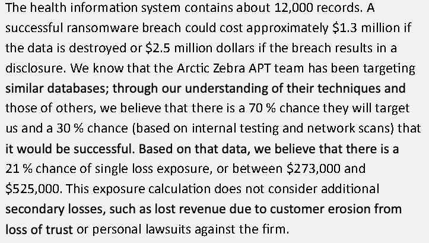
医療情報システムには約12,000件の記録が含まれています。ランサムウェアによる侵害が成功した場合、データが破壊されれば約130万ドル、侵害の結果として開示が生じれば250万ドルのコストが生じる可能性があります。Arctic Zebra APTチームが同様のデータベースを標的にしていることがわかっています。彼らの技術やその他の技術に対する当方の理解から、彼らが当社を標的にする確率は70 %、（内部試験とネットワークスキャンに基づく）それが成功する確率は30 %と考えられます。そのデータに基づくと、単一損失エクスポージャの可能性は21 %であり、その金額は273,000ドルから525,000ドルの間です。このエクスポージャの計算には、信頼の喪失による顧客の減少に起因する収益の損失や、会社に対する個人の訴訟などの、追加の二次的損失は考慮されていません。
As shown by the referenced standards and examples in this section, there are benefits to both qualitative and quantitative risk analysis methodologies and even the use of multiple methodologies, based on enterprise strategy, organization preference, and data availability. Regardless of the methodologies being applied, it is important to consider as many data points as needed to render a judgement regarding likelihood and impact values. Unfortunately, without supporting data, well-intentioned but misguided methods of risk analysis amount to little more than a guess. In many cases, the application of even a moderate amount of deductive reasoning, combined with various analysis techniques, can render a more accurate and reliable risk analysis. Quantitatively informed qualitative decision-making should be the objective in the absence of purely quantitative-driven decisions.
この節で参照した規格と例が示すとおり、エンタープライズの戦略、組織の好み、データの入手可能性に基づき、定性的なリスク分析手法にも定量的なリスク分析手法にも、さらには複数の手法の併用にも利点があります。適用する手法にかかわらず、発生可能性と影響の値について判断を下すために、必要な数のデータポイントを考慮することが重要です。残念ながら、裏づけとなるデータがなければ、善意であっても的外れなリスク分析の手法は、推測にすぎないも同然です。多くの場合、さまざまな分析手法と組み合わせて、適度な量の演繹的推論を適用するだけでも、より正確で信頼できるリスク分析を実現できます。純粋に定量的な判断に基づく意思決定が行われない場合には、定量的情報に裏づけられた定性的な意思決定を目標とすべきです。
Because CSRM is intended to inform ERM activities, the selection and application of risk analysis methods must be aligned. The enterprise CSRM strategy should inform risk analysis methodologies, support coordination, and direct the consistent use of available data. As with many risk management elements, the strategy should help consider the methods available and provide for a tailored approach that results in effective risk management.
CSRMはERMの活動に情報を提供することを意図しているため、リスク分析手法の選択と適用は整合させなければなりません。エンタープライズのCSRM戦略は、リスク分析手法に情報を提供し、調整を支援し、利用可能なデータの一貫した使用を方向づけるべきです。多くのリスク管理要素と同様に、戦略は、利用可能な手法の検討に役立ち、効果的なリスク管理をもたらす調整されたアプローチを提供するべきです。
When selecting a risk assessment technique, organizations should consider the analysis costs in light of the desired outcome to help determine the most cost-effective technique. Inexpensive but accurate qualitative analysis that identifies the most risks and leads to best mitigating those risks may be the right move for a particular organization. For others, a highly detailed quantitative risk assessment may require more resources than a qualitative approach but may also provide specific and actionable information that helps to focus attention on important threat scenarios.
リスク評価の手法を選ぶ際、組織は、最も費用対効果の高い手法を判断するために、望ましい成果を踏まえた分析コストを考慮すべきです。最も多くのリスクを特定し、それらのリスクを最もよく低減できる、安価で正確な定性的分析が、特定の組織にとって適切な選択となる場合があります。他の組織にとっては、非常に詳細な定量的リスク評価は、定性的なアプローチより多くのリソースを必要とするかもしれませんが、重要な脅威シナリオに注意を集中するのに役立つ、具体的で実行可能な情報も提供できます。
2.3.2. Techniques for Estimating Likelihood and Impact
2.3.2.発生可能性と影響を見積もる手法
IR 8286highlights the need for improved risk analysis when estimating and recording the likelihood and impact of cybersecurity events and monitoring to ensure that risks remain within acceptable parameters.29 To improve enterprise risk estimation accuracy and consistency, CSRM practitioners are encouraged to explore the use of tools and processes that support measurable and meaningful risk analysis and reporting.
IR 8286は、サイバーセキュリティ事象の発生可能性と影響を見積り記録する際、およびリスクが許容できるパラメータ内にとどまるよう監視する際に、リスク分析を改善する必要性を強調しています。29エンタープライズのリスク見積りの正確性と一貫性を向上させるため、CSRMの実務者には、測定可能で意味のあるリスク分析と報告を支援するツールとプロセスの利用を検討することが推奨されます。
Some analysis techniques are based on estimates from subject matter experts’ (SMEs) experience and knowledge. Some methods, such as this SME estimation, can be subjective. Other methods are more objective and based on analytical considerations, statistical analysis, and scenario modeling, as well as potentially drawing on knowledge of previous events.
分析手法の中には、専門家（SME）の経験と知識による見積りに基づくものがあります。このSMEによる見積りなど、一部の手法は主観的になりえます。他の手法はより客観的であり、分析上の考慮、統計分析、シナリオモデリングに基づき、場合によっては過去の事象に関する知識も活用します。
Understanding the intended purpose of the analysis can help one decide which techniques to use. For example, a detailed and quantified approach may be valuable as a basis for a comprehensive review or update of the enterprise cybersecurity approach. Detailed evaluation helps to reinforce defense measures and increase resilience, as in the following example:
分析の目的を理解することは、どの手法を使うかを決めるのに役立ちます。たとえば、詳細で定量化されたアプローチは、エンタープライズのサイバーセキュリティアプローチの包括的なレビューや更新の基礎として価値があるかもしれません。詳細な評価は、次の例のように、防御措置を強化し、レジリエンスを高めるのに役立ちます。
Enterprise leaders have learned through an InfraGard alert that there is a high probability that companies in its sector will be targeted by a particular APT group. Because internal cybersecurity risk managers have performed threat modeling based on the MITRE Adversarial Tactics, Techniques, and Common Knowledge (ATT&CK®) and Pre-ATT&CK frameworks, the company was able to quickly consider high-value assets that would most likely be at risk.
原本PDFの抜粋画像
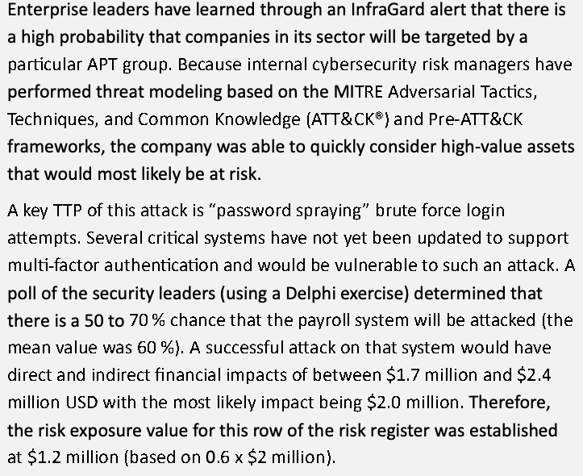
エンタープライズのリーダーは、InfraGardの警告により、自社の業界の企業が特定のAPTグループに標的にされる確率が高いことを知りました。社内のサイバーセキュリティのリスク管理者が、MITRE Adversarial Tactics, Techniques, and Common Knowledge（ATT&CK®）とPre-ATT&CKのフレームワークに基づく脅威モデリングを実施していたため、同社は、最もリスクにさらされる可能性が高い高価値資産をすばやく検討できました。
A key TTP of this attack is “password spraying” brute force login attempts. Several critical systems have not yet been updated to support multi-factor authentication and would be vulnerable to such an attack. A poll of the security leaders (using a Delphi exercise) determined that there is a 50 to 70 % chance that the payroll system will be attacked (the mean value was 60 %). A successful attack on that system would have direct and indirect financial impacts of between $1.7 million and $2.4 million USD with the most likely impact being $2.0 million. Therefore, the risk exposure value for this row of the risk register was established at $1.2 million (based on 0.6 x $2 million).
この攻撃の主要なTTPは、「パスワードスプレー」型のブルートフォースによるログイン試行です。いくつかの重要なシステムは、まだ多要素認証に対応するよう更新されておらず、このような攻撃に対して脆弱です。セキュリティ責任者への（デルファイ法による）聴取の結果、給与システムが攻撃される確率は50から70 %（平均値は60 %）と判断されました。そのシステムへの攻撃が成功した場合、直接的および間接的な財務上の影響は$1.7 millionから$2.4 million USDの間であり、最も可能性が高い影響は$2.0 millionです。したがって、リスク登録簿のこの行のリスクエクスポージャの値は、$1.2 million（0.6 x $2 millionに基づく）と設定されました。
Notably, the example above provides several ranges of estimates. Some industry specialists have indicated that a range of possible values is more helpful and likely more accurate than a single “point estimate.” Additionally, while this example uses the mean values of those ranges to identify the likelihood and potential impact, the ranges themselves are often recorded in the risk register. In this instance, given a possible impact of “between $1.7 million and $2.4 million,” the exposure may have been presented as “$1.02 million to $1.44 million.”
特に、上記の例にはいくつかの見積りの範囲が示されています。一部の業界の専門家は、起こりうる値の範囲のほうが、単一の「点推定」より有用で、おそらくより正確であると指摘しています。また、この例では発生可能性と潜在的な影響を特定するためにそれらの範囲の平均値を用いていますが、範囲そのものがリスク登録簿に記録されることも多くあります。この例では、「$1.7 millionから$2.4 millionの間」という起こりうる影響を踏まえ、エクスポージャは「$1.02 millionから$1.44 million」として示される場合もあります。
Furthermore, organizations are encouraged to utilize the following organizational processes to supplement the estimation techniques:
さらに、組織には、見積り手法を補うため、次の組織的なプロセスを活用することが推奨されます。
•Estimation workshops: utilize small teams to collaborate and challenge assumptions, anchor estimates in real-world analogies and ensure logical consistency. These sessions also reduce individual bias and increase shared understanding of scenarios and inputs.
•見積りワークショップ:小規模なチームを活用して協力し、前提に異議を唱え、現実の類推に見積りを結びつけ、論理的な一貫性を確保します。これらのセッションは、個人のバイアスを減らし、シナリオと入力についての共通理解を深めます。
•Calibration training and assessment: this process improves individuals’ ability to estimate uncertainty accurately. Techniques such as the equivalent bet test (e.g., “Would you bet $100 that the true value falls within this range?”) help improve probabilistic thinking and reduce overconfidence.
•較正トレーニングと評価:このプロセスは、不確かさを正確に見積る個人の能力を向上させます。等価ベットテスト（例: 「真の値がこの範囲に入ることに100ドルを賭けますか」）などの手法は、確率的な思考を改善し、自信過剰を減らすのに役立ちます。
•Sensitivity analysis: not just of the model, but of the input assumptions—used to identify which uncertain factors most affect the output. This guides analysts to focus effort where it matters most and improves decision-maker confidence that uncertainty has been appropriately scoped. Sensitivity analysis can also help with setting escalation thresholds for KRIs and may suggest new metrics to monitor.
•感度分析:モデルだけでなく入力の前提についても行い、不確かな要因のうち出力に最も影響するものを特定するために使います。これにより、分析者は最も重要な部分に労力を集中でき、不確かさが適切に範囲設定されているという意思決定者の確信が高まります。感度分析は、KRIのエスカレーションのしきい値の設定にも役立ち、監視すべき新たなメトリクスを示唆する場合もあります。
•Tracking actuals versus forecasts: a discipline common in finance but rarely applied in cybersecurity. By comparing historical estimates to realized outcomes over time, organizations can improve estimation accuracy and identify where assumptions consistently under- or over-shoot.
•実績と予測の追跡：金融では一般的ですが、サイバーセキュリティではほとんど適用されない慣行です。過去の見積りを、時間の経過とともに実現した結果と比較することで、組織は見積りの正確性を向上させ、見積りが一貫して過小または過大となる箇所を特定できます。
2.3.2.1. Improving Estimation Based on Knowledge of Prior Events
2.3.2.1.過去の事象に関する知識に基づく見積りの改善
Information about previous risk events may be helpful when estimating the likelihood and impact of those in the future. For example, practitioners should consult industry literature, their current power companies, or internet service providers for descriptions of loss events within a given sector or over a particular time frame. To determine the likelihood of a utility outage, the utility provider can be asked to provide details regarding previous disruptions and their duration.
過去のリスク事象に関する情報は、将来のリスク事象の発生可能性と影響を見積もる際に役立つ場合があります。たとえば実務者は、特定の部門や期間における損失事象の説明を得るために、業界文献、現在契約している電力会社、またはインターネットサービスプロバイダに照会すべきです。公共設備の停止の発生可能性を判定するには、電力会社に過去の中断とその継続時間の詳細を求めることができます。
As an example, consider the example organization in the first row in Table 2 in Section 2.1.2. It describes a global retail firm at which a senior leader has expressed the risk tolerance statement that “any outage that exceeds four hours for any customer requires significant corrective action.” Risk practitioners can review the actual availability of that website for the previous year (using a table similar to Table 9).
例として、2.1.2項の表2の最初の行にある組織の例を考えてみましょう。これは、上級幹部が「いずれかの顧客に対して4時間を超える停止があった場合は、重大な是正措置が必要である」というリスク許容度ステートメントを表明しているグローバル小売企業について説明しています。リスク実務者は、（表9に似た表を使って）前年におけるそのウェブサイトの実際の可用性を確認できます。
Table 9. Example risk tolerance results assessment
表9.リスク許容度の結果評価の例
| Month | Total Hours in the Month | # of Hours Unavailable | Outage (Customer %) | Available Hours | Tolerance Limit (Total - 4 hrs.) | Avail % (Avail. Hrs. ÷ Total Hrs.) |
|---|---|---|---|---|---|---|
| Jan | 744 | 1 | 2.4 | 743 | 740 | 99.87 % |
| Feb | 672 | 672 | 668 | 100.00 % | ||
| Mar | 744 | 744 | 740 | 100.00 % | ||
| Apr | 720 | 1.5 | 4.5 | 718.5 | 716 | 99.797 % |
| May | 744 | 744 | 740 | 100.00 % | ||
| Jun | 720 | 720 | 716 | 100.00 % | ||
| Jul | 744 | 744 | 740 | 100.00 % | ||
| Aug | 744 | 744 | 740 | 100.00 % | ||
| Sep | 720 | 2 | 0.5 | 718 | 716 | 99.72 % |
| Oct | 744 | 744 | 740 | 100.00 % | ||
| Nov | 720 | 3 | 1.5 | 717 | 716 | 99.58 % |
| Dec | 744 | 744 | 740 | 100.00 % | ||
| Yearly | 8760 | 7.5 | - | 8752.5 | 8704.5 | 99.91 % |
| 月 | 月間の総時間 | 利用不能時間数 | 停止（顧客の%） | 利用可能時間 | 許容限度（総時間- 4時間） | 可用性%（利用可能時間÷総時間） |
|---|---|---|---|---|---|---|
| 1月 | 744 | 1 | 2.4 | 743 | 740 | 99.87 % |
| 2月 | 672 | 672 | 668 | 100.00 % | ||
| 3月 | 744 | 744 | 740 | 100.00 % | ||
| 4月 | 720 | 1.5 | 4.5 | 718.5 | 716 | 99.797 % |
| 5月 | 744 | 744 | 740 | 100.00 % | ||
| 6月 | 720 | 720 | 716 | 100.00 % | ||
| 7月 | 744 | 744 | 740 | 100.00 % | ||
| 8月 | 744 | 744 | 740 | 100.00 % | ||
| 9月 | 720 | 2 | 0.5 | 718 | 716 | 99.72 % |
| 10月 | 744 | 744 | 740 | 100.00 % | ||
| 11月 | 720 | 3 | 1.5 | 717 | 716 | 99.58 % |
| 12月 | 744 | 744 | 740 | 100.00 % | ||
| 年間 | 8760 | 7.5 | - | 8752.5 | 8704.5 | 99.91 % |
In this case, the system did not exceed the risk tolerance since no single outage exceeded four hours, nor did any outage impact more than 5 % of customers. While past performance is not a guarantee of future probability, it provides some information that helps inform likelihood estimates. The impact of an outage is likely similar to that in previous iterations. Understanding the probability of an outage given what is known about prior disruption helps organizations consider likely exposure in the future.
この場合、1回の停止も4時間を超えず、顧客の5 %を超えて影響した停止もなかったため、システムはリスク許容度を超えませんでした。過去の実績は将来の確率を保証するものではありませんが、発生可能性の見積りに役立つ情報を提供します。停止の影響は、以前の反復における影響と似ている可能性が高いです。過去の中断について分かっていることを踏まえて停止の確率を理解することは、組織が将来の起こりうるエクスポージャを検討するのに役立ちます。
When considering each risk in the risk register, practitioners will analyze the likelihood that any risk would result in an impact that would exceed the risk tolerance. That consideration provides a basis for risk treatment decisions, either to ensure sufficient security controls or to review risk tolerance statements to ensure that they represent reasonable and practical expectations.
リスク登録簿の各リスクを検討する際、実務者は、そのリスクがリスク許容度を超える影響をもたらす可能性を分析します。この検討は、十分なセキュリティコントロールを確保するため、またはリスク許容度ステートメントが妥当で実際的な期待を表しているかを確認するために見直すための、リスク処理の決定の根拠となります。
2.3.2.2. Three-Point Estimation
2.3.2.2.三点見積り
One method for considering the likelihood or impact of a risk event is three-point estimation. This method,30 illustrated in Fig. 14, is useful because it considers the judgment of available SMEs. For example, to determine the impact31 of a successful phishing attack, the risk estimator could poll a SME regarding:
リスク事象の発生可能性または影響を検討する手法の一つが、三点見積りです。この手法30は図14に示すとおり、利用可能なSMEの判断を考慮するため有用です。たとえば、フィッシング攻撃が成功した場合の影響31を判定するには、リスクの見積り担当者がSMEに次の聴取を行うことができます。
•The most optimistic (or best case) estimate (O),
•最も楽観的な（または最良の場合の）見積り（O）
•A most likely estimate (M), and
•最も可能性の高い見積り（M）
•A pessimistic (or worst-case) estimate (P).
•悲観的な（または最悪の場合の）見積り（P）
Fig. 14 illustrates the result of a SME estimating a $80,000 revenue loss due to an attack that would be successful if employees are not properly trained. This first estimate represents a worst-case scenario (pessimistic). The same estimator may suggest that only a $35,000 impact is likely (optimistic) if the attack were successful but limited in spread. Finally, the SME may suggest that the most likely impact of recovering from such a successful phishing attack would be $50,000. Each of these data points can be used to calculate the expected value (also known as EV, expectation, average, or mean value).
図14は、従業員が適切なトレーニングを受けていない場合に攻撃が成功したときの収益損失を、SMEが$80,000と見積もった結果を示しています。この最初の見積りは、最悪のシナリオ（悲観的）を表します。同じ見積り担当者は、攻撃が成功しても拡散が限定的であれば、影響は$35,000にとどまる可能性が高い（楽観的）と示唆するかもしれません。最後に、SMEは、そのようなフィッシング攻撃の成功からの復旧による影響として、最も可能性が高い額は$50,000であると示唆するかもしれません。これらの各データポイントを使って、期待値（EV、期待、平均、または平均値とも呼ばれる）を算出できます。
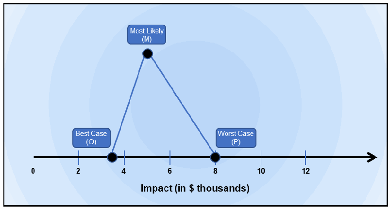
横軸に「Impact (in $ thousands)」（影響（千ドル単位））と記され、目盛りが 0、2、4、6、8、10、12 の折れ線グラフです。3つの点が三角形に結ばれ、「Best Case (O)」（最良の場合）は軸上の約 3.5、「Most Likely (M)」（最も可能性が高い場合）は約 5 の上の頂点、「Worst Case (P)」（最悪の場合）は軸上の 8 にあります。
Fig. 14. Example three-point estimate graph (triangle distribution)
図14.三点見積りグラフの例（三角分布）
The three datapoints can be categorized as Optimistic ($35,000), Pessimistic ($80,000), and Most likely ($50,000). A simple average of the three numbers (called a Triangular Distribution) is:
3つのデータポイントは、楽観的（$35,000）、悲観的（$80,000）、最も可能性が高い（$50,000）に分類できます。3つの数値の単純平均（三角分布と呼ばれる）は次のとおりです。
\(EV = \frac{\mathrm{P+M+O}}{3}\) = $55,000 in this example, where O=$35,000, P=$80,000, and M=$50,000
\(EV = \frac{\mathrm{P+M+O}}{3}\) = $55,000 in this example, where O=$35,000, P=$80,000, and M=$50,000
In this phishing attack scenario, perhaps the estimator believes that the pessimistic and optimistic values are too different and that the “most likely” estimate is a better predictor. The estimator can give greater weight (perhaps four times as much) to the “most likely” value using the following standard formula (called the Average for a Beta Distribution):
このフィッシング攻撃のシナリオでは、見積り担当者は、悲観的な値と楽観的な値が大きく異なっており、「最も可能性が高い」見積りのほうがより良い予測値であると考えるかもしれません。見積り担当者は、次の標準的な式（ベータ分布の平均と呼ばれる）を用いて、「最も可能性が高い」値により大きな重み（たとえば4倍）を与えることができます。
\(EV = \frac{\mathrm{P+4M+O}}{6}\) = $52,500 in this example, where O=$35,000, P=$80,000, and M=$50,000
\(EV = \frac{\mathrm{P+4M+O}}{6}\) =この例では$52,500（O=$35,000、P=$80,000、M=$50,000）
The next question is, “How confident is the estimator regarding this estimated impact of a successful phishing attack?” In three-point estimating, confidence (referred to as sigma, or \(\sigma\)) in the estimated value can be predicted by calculating the standard deviations from the mean. A useful model for determining sigma is \(\sigma = \frac{\mathrm{P-O}}{6}\).
次の問いは、「フィッシング攻撃が成功した場合の影響の見積りについて、見積り担当者はどの程度確信しているか」です。三点見積りでは、見積り値に対する確信度（シグマ、すなわち\(\sigma\)と呼ばれる）は、平均からの標準偏差を計算することで予測できます。シグマを求めるのに有用なモデルは\(\sigma = \frac{\mathrm{P-O}}{6}\)です。
Fig. 15 illustrates these values graphically. Statistical models have demonstrated that one can determine the level of confidence (or confidence interval [CI]32) in the financial estimates given the mean (EV) and standard deviation. For the example above, the estimator will have a 68.27 % confidence that the financial impact of a successful phishing attack will result in a loss between $39,000 and $66,000. The estimator will have approximately 95 % confidence that the loss will be between $25,500 and $79,500 and a nearly 100 % confidence in the $12,000 to $93,000 estimate. This application of CI is useful for each of the analysis methods in this section and helps to represent the level of uncertainty in each of the estimates.
図15は、これらの値をグラフで示しています。統計モデルにより、平均（EV）と標準偏差が与えられれば、財務上の見積りの確信度（または信頼区間［CI］32）を判定できることが示されています。上記の例では、見積り担当者は、フィッシング攻撃が成功した場合の財務上の影響が$39,000から$66,000の間の損失になることについて、68.27 %の確信を持ちます。損失が$25,500から$79,500の間になることには約95 %の確信を持ち、$12,000から$93,000の見積りにはほぼ100 %の確信を持ちます。このCIの適用は、この節の各分析手法に有用であり、各見積りにおける不確かさの水準を表すのに役立ちます。
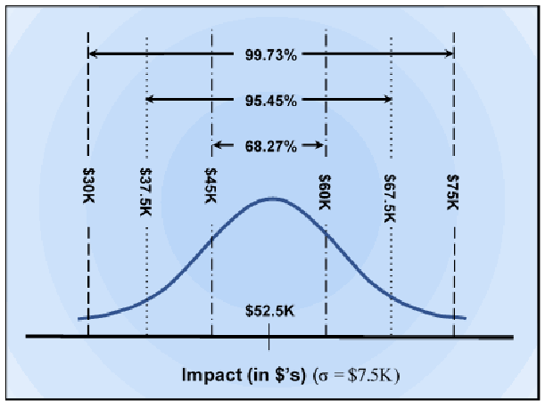
横軸に「Impact (in $'s) (σ = $7.5K)」（影響（ドル）（σ = 7.5K ドル））と記され、$52.5K を中心とする釣り鐘形の正規分布の曲線です。縦線が $30K、$37.5K、$45K、$60K、$67.5K、$75K の位置にあります。曲線の上の矢印が、68.27%（$45K〜$60K）、95.45%（$37.5K〜$67.5K）、99.73%（$30K〜$75K）の範囲を示しています。
Fig. 15. Example three-point estimate graph (normal distribution)
図15.三点見積りグラフの例（正規分布）
Confidence requirements and standardized methods of calculation should be included in senior leaders’ ERM strategy as part of enterprise risk management policy. This directive helps all risk practitioners in the enterprise consider risk in a similar manner and may help to improve the reliability of likelihood and impact estimates. Additionally, as more information becomes available regarding previous risk results and those of external organizations, this information can be included in the estimation models and used to reduce uncertainty.
確信度の要件と標準化された計算方法は、エンタープライズリスク管理ポリシーの一部として、上級幹部のERM戦略に含めるべきです。この指示は、エンタープライズ内のすべてのリスクの実務者が同様の方法でリスクを検討するのに役立ち、発生可能性と影響の見積りの信頼性を向上させるのに役立つ場合があります。さらに、過去のリスクの結果や外部組織の結果に関するより多くの情報が利用できるようになるにつれ、この情報を見積りモデルに含めて、不確かさを減らすために使うことができます。
Notably, the level of effort for estimating risk factors increases with the required level of rigor. An estimate with very low CI might be simple to develop (perhaps as simple as flipping a coin) but likely offers little value. A CI of 99 % may be important in some situations, but the work to develop a more precise estimate can cost significantly more than that required for a 90 % CI. Because the appropriate levels of accuracy and precision for cybersecurity risk analysis will vary based on enterprise needs, the techniques and expectations should be clearly defined as part of the enterprise’s risk management guidance.
特に、リスク要因を見積る労力の水準は、求められる厳密さの水準とともに増加します。CIが非常に低い見積りは、簡単に作成できる（おそらくコインを投げるのと同じくらい簡単な）かもしれませんが、価値はほとんどない可能性が高いです。99 %のCIが重要となる状況もありますが、より精密な見積りを作成する作業には、90 %のCIに必要な作業よりも大幅に多くのコストがかかる場合があります。サイバーセキュリティのリスク分析に適した正確性と精度の水準は、エンタープライズのニーズによって異なるため、手法と期待は、エンタープライズのリスク管理ガイダンスの一部として明確に定義すべきです。
It is critical that the risk practitioner consider the accuracy of the SME estimates over time to determine who or what source is more accurate and then consider that expert judgement more prominently in calculations for the ongoing risk management cycles. Experts who are overly optimistic or pessimistic create a broad range. However, when accuracy is required, especially when calculating likelihood, knowing who the best estimators are in the organization is vitally important.
リスクの実務者は、SMEの見積りの正確性を時間をかけて検討し、誰が、またはどの情報源がより正確かを判断したうえで、継続するリスク管理サイクルの計算において、その専門家の判断をより重視して考慮することが重要です。過度に楽観的または悲観的な専門家は、広い範囲を生み出します。しかし、特に発生可能性を算出する際に正確性が求められる場合、組織内で最も優れた見積り担当者が誰かを知ることは極めて重要です。
2.3.2.3. Event Tree Analysis
2.3.2.3.イベントツリー分析
Event Tree Analysis (ETA) is a graphical technique that helps practitioners evaluate the downstream impact of a given scenario (as determined in Sec.2.2.4). In the same way that a Root Cause Analysis helps consider previous events that have already led to an event, ETA helps consider the potential consequences of future events. The exercise helps document a sequence of outcomes that could arise following an initiating threat event (e.g., a particular TTP, as described in Sec.2.2.2). By iterating through a series of what-if scenarios, the practitioner can analyze each set of circumstances and determine the likelihood that the results would occur.
イベントツリー分析（ETA）は、実務者が特定のシナリオ（2.2.4項で判定）から後続して生じる影響を評価するのに役立つ図式的な手法です。根本原因分析が、すでにある事象につながった先行事象を検討するのに役立つのと同様に、ETAは将来の事象がもたらす潜在的な結果を検討するのに役立ちます。この作業では、開始となる脅威事象（2.2.2項で説明した特定のTTPなど）の後に生じうる結果の連鎖を文書化します。一連の「もし〜なら」のシナリオを順に検討することで、実務者は各状況を分析し、その結果が生じる可能性を判定できます。
![An event tree read from left to right under five column headings: "Malicious code is used to try to exfiltrate data.", "The code is caught by antivirus.", "Network security monitoring tools detect anomalous behavior.", "DLP prevents the data from being exfiltrated.", and "Outcomes". At the first branch, Yes (Pr = .23) leads to the outcome "The malware was detected and deleted." (Pr = .23); No (Pr = .77) continues. At the second branch, Yes (Pr = .50) leads to "Network security monitoring tools detected the behavior and prevented the access to sensitive data." (Pr = .385); No (Pr = .50) continues. At the third branch, Yes (Pr = .62) leads to "The code exploited a vulnerability in our system, but DLP prevented the data from being exfiltrated." (Pr=.2387); No (Pr = .38) leads to "The malicious code is successfully injected into the system, and the sensitive data is exfiltrated." (Pr=.1463).](assets/ir-8286ar1/p0066-figure-01.png)
左から右へ読むイベントツリーで、5つの列見出しは「Malicious code is used to try to exfiltrate data.」（悪意のあるコードがデータの持ち出しに使われる）、「The code is caught by antivirus.」（コードがウイルス対策で捕捉される）、「Network security monitoring tools detect anomalous behavior.」（ネットワークセキュリティ監視ツールが異常な挙動を検知する）、「DLP prevents the data from being exfiltrated.」（DLP がデータの持ち出しを防ぐ）、「Outcomes」（結果）です。最初の分岐では、Yes（Pr = .23）が結果「The malware was detected and deleted.」（マルウェアが検知され削除された）（Pr = .23）へ進み、No（Pr = .77）は次へ続きます。2番目の分岐では、Yes（Pr = .50）が「Network security monitoring tools detected the behavior and prevented the access to sensitive data.」（ネットワークセキュリティ監視ツールが挙動を検知し、機微なデータへのアクセスを防いだ）（Pr = .385）へ進み、No（Pr = .50）は次へ続きます。3番目の分岐では、Yes（Pr = .62）が「The code exploited a vulnerability in our system, but DLP prevented the data from being exfiltrated.」（コードはシステムの脆弱性を悪用したが、DLP がデータの持ち出しを防いだ）（Pr=.2387）へ、No（Pr = .38）が「The malicious code is successfully injected into the system, and the sensitive data is exfiltrated.」（悪意のあるコードがシステムへの注入に成功し、機微なデータが持ち出された）（Pr=.1463）へ進みます。
Fig. 16. Example Event Tree Analysis
図16.イベントツリー分析の例
Fig. 16 demonstrates the layered defense that an organization employs to prevent malicious code from being used to exfiltrate data. For each condition, the analyst considers a Boolean (i.e., true or false) answer. The analyst then follows through each iterative outcome until an end result is reached. This analysis can be performed in a qualitative way (using the yes or no conditions), or a probability could be calculated for each scenario. In Fig. 16, the probability is calculated based on whether the attack was prevented (Yes) or if the attack was successful (No). Since each branch of the tree represents a binary option, the sum of the two probabilities is always equal to 100 % (or 1.00 in decimal format). In this example, the calculated probabilities provide information about the potential success (or failure) of risk response. The resulting probability (Pr values in the example below) is multiplied by the anticipated financial loss of the scenario. In the tree below, if the anticipated loss of sensitive data being exfiltrated is $1.4 million, then there is a $205,100 risk exposure ($1.4 million x.1463).
図16は、悪意のあるコードがデータの持ち出しに使われるのを防ぐために、組織が採用している多層防御を示しています。分析者は各条件について、ブール値（すなわち真か偽か）の答えを検討します。その後、分析者は最終的な結果に到達するまで、反復する各結果をたどります。この分析は、（はい／いいえの条件を用いて）定性的に行うことも、各シナリオの確率を計算することもできます。図16では、攻撃が防止されたか（はい）、攻撃が成功したか（いいえ）に基づいて確率が計算されています。ツリーの各分岐は二者択一を表すため、2つの確率の合計は常に100 %（小数形式では1.00）に等しくなります。この例では、計算された確率が、リスク対応が成功する（または失敗する）可能性に関する情報を提供します。結果として得られる確率（下の例のPrの値）は、そのシナリオの予想される財務上の損失に掛けられます。下のツリーでは、機微なデータが持ち出される予想損失が$1.4 millionである場合、リスクエクスポージャは$205,100（$1.4 million x.1463）です。
The Event Tree Analysis of the cascading events illustrates the various countermeasures available and the calculated percentage of the success of each defense. A qualitative approach would still describe the Yes/No conditions and outcomes but would not include specific probabilities of each branch. While such an analysis might be less helpful than a quantitative approach, it would still provide meaningful information about potential harmful impacts to the organization and the sequence of events leading to those consequences.
連鎖的な事象のイベントツリー分析は、利用可能なさまざまな対策と、各防御の成功について計算された割合を示します。定性的なアプローチでも、はい／いいえの条件と結果は記述しますが、各分岐の具体的な確率は含みません。そのような分析は、定量的なアプローチより有用性が低いかもしれませんが、組織への潜在的な有害な影響と、それらの結果につながる事象の順序について、意味のある情報を提供します。
2.3.2.4. Monte Carlo Simulation
2.3.2.4.モンテカルロ・シミュレーション
While expert judgement is valuable in estimating risk parameters, one way to reduce subjectivity is to supplement that judgement using simulation models. For example, using the Monte Carlo method, the above parameters could be modeled repeatedly (perhaps several hundred thousand cycles) to help account for the many random variables inherent in cybersecurity risks. Simulation is not always necessary, but with the variables for considering likelihood and impact values (based on the factors described in Sec.2.2), randomly sampled probabilities can help identify a range of possible values.33 The results of such a simulation can be plotted on a graph or distribution to facilitate a visual understanding, such as shown in Fig. 17.
リスクパラメータを見積る際には専門家の判断が価値を持ちますが、主観性を減らす一つの方法は、シミュレーションモデルを用いてその判断を補うことです。たとえば、モンテカルロ法を用いて、サイバーセキュリティリスクに内在する多くの確率変数を考慮するため、上記のパラメータを（おそらく数十万サイクルにわたって）繰り返しモデル化できます。シミュレーションは常に必要なわけではありませんが、（2.2節で説明した要因に基づく）発生可能性と影響の値を検討するための変数があれば、ランダムにサンプリングした確率が、起こりうる値の範囲の特定に役立ちます。33そのようなシミュレーションの結果は、図17に示すように、視覚的な理解を容易にするため、グラフや分布にプロットできます。
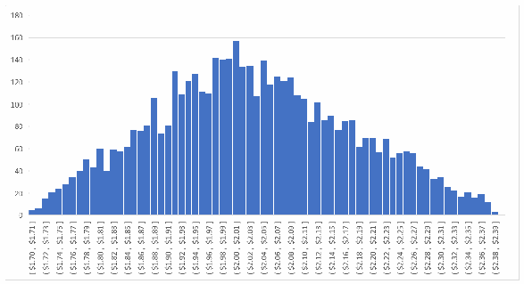
縦軸が 0 から 180（20 刻み）、横軸が「[$1.70, $1.71]」から「($2.38, $2.39]」までの 70 個の値の区間（百万ドル単位）のヒストグラムです。棒の高さは $1.70 付近の数件から上がり、「($2.00, $2.01]」の区間で約 157 の最大となり、$2.39 付近でほぼ 0 まで下がる、おおむね釣り鐘形の分布です。
Fig. 17. Illustration of a histogram from a Monte Carlo estimation simulation
図17.モンテカルロ見積りシミュレーションのヒストグラムの図解
For example, when calculating the financial impact of the attack on the payroll system (from the example above), practitioners can use a simulation model to consider the most likely range between the low value ($1.7 million) and the high value ($2.4 million). The result of this simulation could be recorded as a histogram that records the frequency at which certain random values occurred, in this case resulting in a simulated estimated impact of $2 million.
たとえば、（上記の例の）給与システムに対する攻撃の財務上の影響を算出する際、実務者はシミュレーションモデルを用いて、低い値（$1.7 million）と高い値（$2.4 million）の間の最も可能性が高い範囲を検討できます。このシミュレーションの結果は、特定のランダムな値が発生した頻度を記録するヒストグラムとして記録でき、この場合、シミュレーションによる見積り影響は$2 millionとなりました。
2.3.2.5. Bayesian Analysis
2.3.2.5.ベイズ分析
While there is value in using expert judgement to help estimate risk parameters, it might be improved based on information known from prior events, and the results may represent a more objective determination. For example, if the organization has identified that several critical software vulnerabilities have remained uncorrected, there is an increased likelihood that a threat actor will be able to exploit a software vulnerability to successfully gain access to the enterprise and exfiltrate valuable data. Bayesian analysis describes methods for considering conditional probability – applying a distribution model and a set of known prior data to help estimate the probability of a future outcome.34
リスクパラメータの見積りに専門家の判断を用いることには価値がありますが、過去の事象から分かっている情報に基づいてそれを改善でき、その結果はより客観的な判定を表す場合があります。たとえば、組織がいくつかの重大なソフトウェア脆弱性が未修正のままであると特定している場合、脅威アクターがソフトウェアの脆弱性を悪用してエンタープライズへのアクセスに成功し、価値あるデータを持ち出せる発生可能性が高まります。ベイズ分析は、条件付き確率を考慮する手法、すなわち分布モデルと既知の事前データの集合を適用して、将来の結果の確率を見積る手法を説明します。34
While an SME might render an opinion regarding how likely a breach might be, that opinion can be improved by what the enterprise risk managers already know about the success of previous attempts by others or about the success of adversaries in similar enterprises. Prior knowledge, drawn from internal observations and events at similar organizations can be of significant value for improving the accuracy and reliability of estimates, such as those for determining the likelihood of an impactful event or for estimating the impact of that uncertainty on the enterprise objectives. Similar methods can be used to estimate whether several conditions might occur (joint probability) or that certain conditions would occur given other external variables (marginal probability).
SMEは侵害がどの程度起こりうるかについて意見を述べるかもしれませんが、その意見は、他者による過去の試みの成否や、類似のエンタープライズに対する敵対者の成否について、エンタープライズのリスク管理者がすでに知っていることによって改善できます。内部の観察と類似組織での事象から得られる事前知識は、影響の大きい事象の発生可能性の判定や、その不確かさがエンタープライズの目標に及ぼす影響の見積りなど、見積りの正確性と信頼性を向上させるうえで大きな価値を持ちえます。同様の手法を使って、複数の条件が発生するかどうか（同時確率）、または他の外部変数が与えられた場合に特定の条件が発生するかどうか（周辺確率）を見積ることができます。
2.4. Determination and Documentation of Risk Exposure
2.4.リスクエクスポージャの判定と文書化
Once the probability that an impactful event will occur has been determined and the most probable impact of such an occurrence has been calculated, the information is recorded in the risk register. Fig. 18 shows how an organization can record this information.
影響の大きい事象が発生する確率が判定され、その発生による最も可能性の高い影響が算出されたら、その情報はリスク登録簿に記録されます。図18は、組織がこの情報を記録する方法を示しています。
![An excerpt of a risk register, torn off at the right and bottom edges, with columns ID, Priority, Risk Description, Risk Category, and Current Assessment (Likelihood, Impact, Exposure Rating). Row 1: ID 1; Priority TBD; Risk Description "An outsider using an APT breaches the organization’s network, remains undetected for months, and exfiltrates much of the organization’s critical and prioprietary intellectual property by employing a Privilege Escalation attack."; Risk Category "Access Control (AC)"; Likelihood .6; Impact $2,000,000; Exposure Rating $1,200,000.](assets/ir-8286ar1/p0069-figure-02.png)
右端と下端が破れた形で切り取られたリスク登録簿の抜粋で、列は ID、Priority、Risk Description、Risk Category、Current Assessment（Likelihood、Impact、Exposure Rating）です。行1: ID 1; Priority TBD; Risk Description "An outsider using an APT breaches the organization’s network, remains undetected for months, and exfiltrates much of the organization’s critical and prioprietary intellectual property by employing a Privilege Escalation attack."（APTを用いる外部者が組織のネットワークに侵入し、数か月間検知されないまま、権限昇格攻撃によって組織の重要な専有知的財産の多くを持ち出す）; Risk Category "Access Control (AC)"; Likelihood .6; Impact $2,000,000; Exposure Rating $1,200,000。
Fig. 18. Example quantitative analysis results
図18.定量分析結果の例
Fig. 19 provides an illustration of similar information in a qualitative manner.
図19は、同様の情報を定性的な形で示しています。
![An excerpt of a risk register, torn off at the right and bottom edges, with columns ID, Priority, Risk Description, Risk Category, and Current Assessment (Likelihood, Impact, Exposure Rating). Row 5: ID 5; Priority TBD; Risk Description "Criminals are able to infiltrate our customers’ mobile banking application due to endpoint user validation or an encryption issue, fraudulently causing customer funds to be transferred to an unauthorized location."; Risk Category "System & Information Integrity (SI) / System & Comms Protection (SC)"; Likelihood H; Impact H; Exposure Rating H.](assets/ir-8286ar1/p0069-figure-01.png)
右端と下端が破れた形で切り取られたリスク登録簿の抜粋で、列は ID、Priority、Risk Description、Risk Category、Current Assessment（Likelihood、Impact、Exposure Rating）です。行5: ID 5; Priority TBD; Risk Description "Criminals are able to infiltrate our customers’ mobile banking application due to endpoint user validation or an encryption issue, fraudulently causing customer funds to be transferred to an unauthorized location."（エンドポイント利用者の検証または暗号化の問題により、犯罪者が顧客のモバイルバンキングアプリケーションに侵入でき、不正に顧客資金を許可されていない場所へ移す）; Risk Category "System & Information Integrity (SI) / System & Comms Protection (SC)"; Likelihood H; Impact H; Exposure Rating H。
Fig. 19. Example qualitative analysis results
図19.定性分析結果の例
In this example, internal SMEs feel that the likelihood of an attack on the organization’s mobile banking application is high. A survey of the SMEs reflects their determination that the impact to the organization if customers experience such an event would be high based on customers’ perception that the application lacked sufficient security protections. In this case, the practitioner would use the enterprise assessment scale for determining qualitative risk, such as the application of Table I-2, Assessment Scale – Level of Risk (Combination of Likelihood and Impact), from SP 800-30, Revision 1. Based on that table, an event with a high likelihood and high impact would be ranked as a high exposure. As an example, this decision would help inform the selection of strong user authentication and encryption controls.
この例では、社内のSMEは、組織のモバイルバンキングアプリケーションへの攻撃の発生可能性が高いと感じています。SMEへの調査は、顧客がそのような事象を経験した場合に組織への影響が高いという判定を反映しており、これは顧客がそのアプリケーションに十分なセキュリティ保護がないと受け止めることに基づいています。この場合、実務者は、SP 800-30第1改訂版の表I-2「Assessment Scale – Level of Risk (Combination of Likelihood and Impact)」の適用など、定性的なリスクを判定するためのエンタープライズの評価尺度を用います。その表に基づくと、発生可能性が高く影響が高い事象は、高いエクスポージャとして順位づけされます。例として、この決定は、強力なユーザー認証と暗号化のコントロールを選択する際の情報になります。
Risk priority is described in IR 8286B and will be determined based on mission objectives, enterprise strategy, and the results of comprehensive risk identification and analysis activities.
リスクの優先順位はIR 8286Bで説明されており、ミッション目標、エンタープライズ戦略、網羅的なリスクの特定と分析の活動の結果に基づいて判定されます。
3. Conclusion
3.結論
The use of the methods and templates described in this report supports effective communication and coordination of ERM and CSRM activities. As described in IR 8286, understanding the expectations of senior leaders and business managers regarding risk is a key input for managing cybersecurity risk at the business and system levels. This is reflected by including the determination of enterprise risk appetite and organizational risk tolerance among the first tasks in both the Cybersecurity Framework and the NIST Risk Management Framework.
本報告書で説明した手法とテンプレートの利用は、ERMとCSRMの活動の効果的なコミュニケーションと調整を支えます。IR 8286で説明したとおり、リスクに関する上級幹部と事業管理者の期待を理解することは、事業レベルとシステムレベルでサイバーセキュリティリスクを管理するための重要な入力です。これは、サイバーセキュリティフレームワークとNISTリスク管理フレームワークの双方で、エンタープライズのリスク選好度と組織のリスク許容度の判定が最初のタスクの一つに含まれていることに反映されています。
Once these expectations have been defined and communicated, practitioners can use various methods to ensure that risk is managed to stay within the limits articulated. They do this by identifying potential risks (as described in Sec.2.2), estimating the probability that an impactful event will occur, calculating the potential harm to the enterprise after such an event, and analyzing the actual risk exposure (the product of likelihood and impact).
これらの期待が定義され伝達されたら、実務者は、明示された限度内にリスクが収まるよう管理されることを確実にするために、さまざまな手法を用いることができます。そのために、（2.2節で説明したとおり）潜在的なリスクを特定し、影響の大きい事象が発生する確率を見積り、そのような事象の後のエンタープライズへの潜在的な害を算出し、実際のリスクエクスポージャ（発生可能性と影響の積）を分析します。
Industry practitioners have demonstrated that applying risk analysis techniques like those described in Sec.2.3 can be helpful for identifying, responding to, and monitoring enterprise cybersecurity risk. While statistical analysis has been available for hundreds of years, many within the CSRM community have only recently recognized the value of applying a more quantitative approach to risk estimation. It seems likely that those in the CSRM domain will continue to develop and improve statistical methods to estimate risk and include guidance regarding the application of various statistical distribution models.
業界の実務者は、2.3節で説明したようなリスク分析手法を適用することが、エンタープライズのサイバーセキュリティリスクの特定、対応、監視に役立ちうることを示してきました。統計分析は数百年前から利用可能でしたが、CSRMコミュニティの多くは、リスクの見積りにより定量的なアプローチを適用する価値を、最近になってようやく認識しました。CSRM分野の実務者が、リスクを見積る統計的手法の開発と改善を続け、さまざまな統計分布モデルの適用に関するガイダンスを含めていく可能性が高いと考えられます。
Responses to previous requests for information have indicated that enterprise risk managers desire increased rigor in the manner in which risk identification, analysis, and reporting are performed. This publication is designed to provide guidance and to further conversations regarding ways to improve CSRM and the coordination of CSRM with ERM. Subsequent publications in this series will describe improvements to the manner in which risk scenarios are prioritized, treated, and reported. Through the IR 8286 series publications, Cybersecurity Framework 2.0 program, and others, NIST continues to collaborate with public- and private-sector communities to address methods for improving the integration and coordination of ERM and CSRM.
過去の情報提供依頼への回答は、エンタープライズのリスク管理者が、リスクの特定、分析、報告を行う方法に、より高い厳密さを望んでいることを示しています。本刊行物は、ガイダンスを提供し、CSRMと、CSRMのERMとの調整を改善する方法についての対話を進めるために作成されています。このシリーズの以降の刊行物では、リスクシナリオの優先順位付け、処理、報告の方法の改善を説明します。NISTは、IR 8286シリーズの刊行物、サイバーセキュリティフレームワーク2.0プログラムなどを通じて、ERMとCSRMの統合と調整を改善する手法に取り組むため、官民のコミュニティと引き続き協力していきます。
References
参考文献
[1] Quinn SD, Chua J, Ivy N, Gardner RK, Kent K, Smith MC, Witte GA (2025) Integrating Cybersecurity and Enterprise Risk Management (ERM). (National Institute of Standards and Technology, Gaithersburg, MD), NIST Interagency Report (IR) NIST IR 8286r1. https://doi.org/10.6028/NIST.IR.8286r1
[1] Quinn SD, Chua J, Ivy N, Gardner RK, Kent K, Smith MC, Witte GA (2025) Integrating Cybersecurity and Enterprise Risk Management (ERM). (National Institute of Standards and Technology, Gaithersburg, MD), NIST Interagency Report (IR) NIST IR 8286r1. https://doi.org/10.6028/NIST.IR.8286r1
[2] Quinn SD, Ivy N, Barrett M, Witte GA, Gardner RK (2025) Prioritizing Cybersecurity Risk for Enterprise Risk Management. (National Institute of Standards and Technology, Gaithersburg, MD), NIST Interagency Report (IR) NIST IR 8286B-upd1. https://doi.org/10.6028/NIST.IR.8286B-upd1
[2] Quinn SD, Ivy N, Barrett M, Witte GA, Gardner RK (2025) Prioritizing Cybersecurity Risk for Enterprise Risk Management. (National Institute of Standards and Technology, Gaithersburg, MD), NIST Interagency Report (IR) NIST IR 8286B-upd1. https://doi.org/10.6028/NIST.IR.8286B-upd1
[3] Quinn SD, Ivy N, Barrett M, Gardner RK, Smith MC, Witte GA (2025) Staging Cybersecurity Risks for Enterprise Risk Management and Governance Oversight. (National Institute of Standards and Technology, Gaithersburg, MD), NIST Interagency Report (IR) NIST IR 8286Cr1. https://doi.org/10.6028/NIST.IR.8286Cr1
[3] Quinn SD, Ivy N, Barrett M, Gardner RK, Smith MC, Witte GA (2025) Staging Cybersecurity Risks for Enterprise Risk Management and Governance Oversight. (National Institute of Standards and Technology, Gaithersburg, MD), NIST Interagency Report (IR) NIST IR 8286Cr1. https://doi.org/10.6028/NIST.IR.8286Cr1
[4] Quinn SD, Ivy N, Chua J, Barrett M, Feldman L, Topper D, Witte GA, Gardner RK (2025) Using Business Impact Analysis to Inform Risk Prioritization and Response. (National Institute of Standards and Technology, Gaithersburg, MD), NIST Interagency Report (IR) NIST IR 8286D-upd1. Includes updates as of February 26, 2025. https://doi.org/10.6028/NIST.IR.8286D-upd1
[4] Quinn SD, Ivy N, Chua J, Barrett M, Feldman L, Topper D, Witte GA, Gardner RK (2025) Using Business Impact Analysis to Inform Risk Prioritization and Response. (National Institute of Standards and Technology, Gaithersburg, MD), NIST Interagency Report (IR) NIST IR 8286D-upd1. 2025年2月26日時点の更新を含みます。https://doi.org/10.6028/NIST.IR.8286D-upd1
[5] Office of Management and Budget (2016) OMB Circular No. A-123, Management’s Responsibility for Enterprise Risk Management and Internal Control. (The White House, Washington, DC), OMB Memorandum M-16-17, July 15, 2016. Available at https://trumpwhitehouse.archives.gov/sites/whitehouse.gov/files/omb/memoranda/2016/m-16-17.pdf
[5] Office of Management and Budget (2016) OMB Circular No. A-123, Management’s Responsibility for Enterprise Risk Management and Internal Control. (The White House, Washington, DC), OMB Memorandum M-16-17, July 15, 2016.入手先: https://trumpwhitehouse.archives.gov/sites/whitehouse.gov/files/omb/memoranda/2016/m-16-17.pdf
[6] Office of Management and Budget (2016) OMB Circular No. A-130, Managing Information as a Strategic Resource. (The White House, Washington, DC), OMB Circular No. A-130, July 28, 2016. Available at https://trumpwhitehouse.archives.gov/sites/whitehouse.gov/files/omb/circulars/A130/a130revised.pdf
[6] Office of Management and Budget (2016) OMB Circular No. A-130, Managing Information as a Strategic Resource. (The White House, Washington, DC), OMB Circular No. A-130, July 28, 2016.入手先: https://trumpwhitehouse.archives.gov/sites/whitehouse.gov/files/omb/circulars/A130/a130revised.pdf
[7] International Organization for Standardization (ISO) (2018) Risk management— Guidelines. ISO 31000:2018. Available at https://www.iso.org/standard/65694.html
[7] International Organization for Standardization (ISO) (2018) Risk management— Guidelines. ISO 31000:2018.入手先: https://www.iso.org/standard/65694.html
[8] National Institute of Standards and Technology (2024) The NIST Cybersecurity Framework (CSF) 2.0. (National Institute of Standards and Technology, Gaithersburg, MD), NIST Cybersecurity White Paper (CSWP) NIST CSWP 29. https://doi.org/10.6028/NIST.CSWP.29
[8] National Institute of Standards and Technology (2024) The NIST Cybersecurity Framework (CSF) 2.0. (National Institute of Standards and Technology, Gaithersburg, MD), NIST Cybersecurity White Paper (CSWP) NIST CSWP 29. https://doi.org/10.6028/NIST.CSWP.29
[9] Joint Task Force Transformation Initiative (2012) Guide for Conducting Risk Assessments. (National Institute of Standards and Technology, Gaithersburg, MD), NIST Special Publication (SP) 800-30, Rev. 1. https://doi.org/10.6028/NIST.SP.800-30r1
[9] Joint Task Force Transformation Initiative (2012) Guide for Conducting Risk Assessments. (National Institute of Standards and Technology, Gaithersburg, MD), NIST Special Publication (SP) 800-30, Rev. 1. https://doi.org/10.6028/NIST.SP.800-30r1
[10] Office of Management and Budget (2019) OMB Memorandum M-19-03, Strengthening the Cybersecurity of Federal Agencies by enhancing the High Value Asset Program. (The White House, Washington, DC), OMB Memorandum M-19-03, December 10, 2018. Available at https://trumpwhitehouse.archives.gov/wp-content/uploads/2018/12/M-19-03.pdf
[10] Office of Management and Budget (2019) OMB Memorandum M-19-03, Strengthening the Cybersecurity of Federal Agencies by enhancing the High Value Asset Program. (The White House, Washington, DC), OMB Memorandum M-19-03, December 10, 2018.入手先: https://trumpwhitehouse.archives.gov/wp-content/uploads/2018/12/M-19-03.pdf
[11] National Institute of Standards and Technology (2025) Security Content Automation Protocol. Available at https://csrc.nist.gov/projects/security-content-automation-protocol
[11] National Institute of Standards and Technology (2025) Security Content Automation Protocol.入手先: https://csrc.nist.gov/projects/security-content-automation-protocol
[12] Software Engineering Institute (2007) Introducing OCTAVE Allegro: Improving the Information Security Risk Assessment Process. (Software Engineering Institute, Pittsburgh, PA), Technical Report CMU/SEI-2007-TR-012. Available at https://resources.sei.cmu.edu/asset_files/TechnicalReport/2007_005_001_14885.pdf
[12] Software Engineering Institute (2007) Introducing OCTAVE Allegro: Improving the Information Security Risk Assessment Process. (Software Engineering Institute, Pittsburgh, PA), Technical Report CMU/SEI-2007-TR-012.入手先: https://resources.sei.cmu.edu/asset_files/TechnicalReport/2007_005_001_14885.pdf
[13] Joint Task Force (2020) Security and Privacy Controls for Information Systems and Organizations. (National Institute of Standards and Technology, Gaithersburg, MD), NIST Special Publication (SP) 800-53, Rev. 5. Includes updates as of December 10, 2020. https://doi.org/10.6028/NIST.SP.800-53r5
[13] Joint Task Force (2020) Security and Privacy Controls for Information Systems and Organizations. (National Institute of Standards and Technology, Gaithersburg, MD), NIST Special Publication (SP) 800-53, Rev. 5. 2020年12月10日時点の更新を含みます。https://doi.org/10.6028/NIST.SP.800-53r5
[14] Joint Task Force (2022) Assessing Security and Privacy Controls in Information Systems and Organizations. (National Institute of Standards and Technology, Gaithersburg, MD), NIST Special Publication (SP) 800-53A, Rev. 5. https://doi.org/10.6028/NIST.SP.800-53Ar5
[14] Joint Task Force (2022) Assessing Security and Privacy Controls in Information Systems and Organizations. (National Institute of Standards and Technology, Gaithersburg, MD), NIST Special Publication (SP) 800-53A, Rev. 5. https://doi.org/10.6028/NIST.SP.800-53Ar5
[15] International Electrotechnical Commission (IEC) (2019) Risk management – Risk assessment techniques. IEC 31010:2019. Available at https://www.iso.org/standard/72140.html
[15] International Electrotechnical Commission (IEC) (2019) Risk management – Risk assessment techniques. IEC 31010:2019.入手先: https://www.iso.org/standard/72140.html
[16] The Open Group (2021) Risk Taxonomy (O-RT), Version 3.0.1 (OpenFAIR). Available at https://publications.opengroup.org/standards/open-fair-standards/c20b
[16] The Open Group (2021) Risk Taxonomy (O-RT), Version 3.0.1 (OpenFAIR).入手先: https://publications.opengroup.org/standards/open-fair-standards/c20b
Appendix A. List of Symbols, Abbreviations, and Acronyms
付録A.記号、略語、頭字語の一覧
Selected acronyms and abbreviations used in this paper are defined below.
本書で使われる主な頭字語と略語を以下に定義します。
AI Artificial Intelligence
AI Artificial Intelligence（人工知能）
AIS Automated Indicator Sharing
AIS Automated Indicator Sharing（自動化された指標共有）
ALE Annualized Loss Expectancy
ALE Annualized Loss Expectancy（年間予想損失額）
APT Advanced Persistent Threat
APT Advanced Persistent Threat（高度で持続的な脅威）
AWARE Agency-Wide Adaptive Risk Enumeration
AWARE Agency-Wide Adaptive Risk Enumeration（機関全体の適応型リスク列挙）
BIA Business Impact Analysis
BIA Business Impact Analysis（事業影響分析）
BOD Binding Operational Directive
BOD Binding Operational Directive（拘束的運用指令）
C-SCRM Cybersecurity Supply Chain Risk Management
C-SCRM Cybersecurity Supply Chain Risk Management（サイバーセキュリティサプライチェーンリスク管理）
CAP Corrective Action Plan
CAP Corrective Action Plan（是正措置計画）
CDM Continuous Diagnostics and Mitigation
CDM Continuous Diagnostics and Mitigation（継続的な診断と緩和）
CI Confidence Interval
CI Confidence Interval（信頼区間）
CISA Cybersecurity & Infrastructure Security Agency
CISA Cybersecurity & Infrastructure Security Agency（サイバーセキュリティ・インフラセキュリティ庁）
CISCP Cyber Information Sharing and Collaboration Program
CISCP Cyber Information Sharing and Collaboration Program（サイバー情報共有・連携プログラム）
CISO Chief Information Security Officer
CISO Chief Information Security Officer（最高情報セキュリティ責任者）
CMDB Configuration Management Database
CMDB Configuration Management Database（構成管理データベース）
CSF Cybersecurity Framework
CSF Cybersecurity Framework（サイバーセキュリティフレームワーク）
CSRM Cybersecurity Risk Management
CSRM Cybersecurity Risk Management（サイバーセキュリティリスク管理）
CSRR Cybersecurity Risk Register
CSRR Cybersecurity Risk Register（サイバーセキュリティリスク登録簿）
CSS Central Security Service
CSS Central Security Service（中央保安局）
CSV Comma Separated Values
CSV Comma Separated Values（カンマ区切り値）
CTI Cyber Threat Intelligence
CTI Cyber Threat Intelligence（サイバー脅威インテリジェンス）
DCISE DoD-Defense Industrial Base Collaborative Information Sharing Environment
DCISE DoD-Defense Industrial Base Collaborative Information Sharing Environment（国防総省防衛産業基盤共同情報共有環境）
DHS Department of Homeland Security
DHS Department of Homeland Security（国土安全保障省）
DIB Defense Industrial Base
DIB Defense Industrial Base（防衛産業基盤）
ERM Enterprise Risk Management
ERM Enterprise Risk Management（エンタープライズリスク管理）
ERP Enterprise Risk Profile
ERP Enterprise Risk Profile（エンタープライズリスクプロファイル）
ERR Enterprise Risk Register
ERR Enterprise Risk Register（エンタープライズリスク登録簿）
ETA Event Tree Analysis
ETA Event Tree Analysis（イベントツリー分析）
EV Expected Value
EV Expected Value（期待値）
FITARA Federal Information Technology Acquisition Reform Act
FITARA Federal Information Technology Acquisition Reform Act（連邦情報技術調達改革法）
HVA High Value Asset
HVA High Value Asset（高価値資産）
IDS Intrusion Detection Systems
IDS Intrusion Detection Systems（侵入検知システム）
IEC International Electrotechnical Commission
IEC International Electrotechnical Commission（国際電気標準会議）
IoC Indicators of Compromise
IoC Indicators of Compromise（危殆化の指標）
IR Interagency Report
IR Interagency Report（機関間報告書）
ISAC Information Sharing and Analysis Center
ISAC Information Sharing and Analysis Center（情報共有分析センター）
ISAO Information Sharing and Analysis Organization
ISAO Information Sharing and Analysis Organization（情報共有分析組織）
ISO International Organization for Standardization
ISO International Organization for Standardization（国際標準化機構）
ISRM Information Security Risk Management
ISRM Information Security Risk Management（情報セキュリティリスク管理）
ITAM Information Technology Asset Management
ITAM Information Technology Asset Management（情報技術資産管理）
ITL Information Technology Laboratory
ITL Information Technology Laboratory（情報技術研究所）
JSON JavaScript Object Notation
JSON JavaScript Object Notation
KPI Key Performance Indicator
KPI Key Performance Indicator（主要業績評価指標）
KRI Key Risk Indicator
KRI Key Risk Indicator（主要リスク指標）
LEF Loss Event Frequency
LEF Loss Event Frequency（損失事象頻度）
NCCIC National Cybersecurity and Communications Integration Center
NCCIC National Cybersecurity and Communications Integration Center（国家サイバーセキュリティ・通信統合センター）
NCP National Checklist Program
NCP National Checklist Program（国家チェックリストプログラム）
NIST National Institute of Standards and Technology
NIST National Institute of Standards and Technology（米国国立標準技術研究所）
NSA National Security Agency
NSA National Security Agency（国家安全保障局）
NTCTF NSA/CSS Technical Cyber Threat Framework
NTCTF NSA/CSS Technical Cyber Threat Framework（NSA/CSS技術的サイバー脅威フレームワーク）
NVD National Vulnerability Database
NVD National Vulnerability Database（国家脆弱性データベース）
O-RT Open Group Standard for Risk Taxonomy
O-RT Open Group Standard for Risk Taxonomy
OLIR Online Informative References
OLIR Online Informative References
OMB Office of Management and Budget
OMB Office of Management and Budget（行政管理予算局）
OpenFAIR Open Factor Analysis of Information Risk
OpenFAIR Open Factor Analysis of Information Risk
ORRF Open Risk Register Format
ORRF Open Risk Register Format
OT Operational Technology
OT Operational Technology（運用技術）
POA&M Plan of Actions & Milestones
POA&M Plan of Actions & Milestones（行動と節目の計画）
PoC Point of Care
PoC Point of Care（ポイントオブケア）
RDR Risk Detail Record
RDR Risk Detail Record（リスク詳細記録）
SCAP Security Content Automation Protocol
SCAP Security Content Automation Protocol
SIEM Security Incident Event Monitoring
SIEM Security Incident Event Monitoring（セキュリティインシデントイベント監視）
SLE Single Loss Expectancy
SLE Single Loss Expectancy（単一損失予測値）
SME Subject Matter Expert
SME Subject Matter Expert（専門家）
SP Special Publication
SP Special Publication（特別刊行物）
STIX Structured Threat Information Expression
STIX Structured Threat Information Expression
SWOT Strength, Weakness, Opportunity, and Threat
SWOT Strength, Weakness, Opportunity, and Threat（強み、弱み、機会、脅威）
TEF Threat Event Frequency
TEF Threat Event Frequency（脅威事象頻度）
TTP Tactics, Techniques, and Procedures
TTP Tactics, Techniques, and Procedures（戦術・技術・手順）
VPN Virtual Private Network
VPN Virtual Private Network（仮想プライベートネットワーク）
Appendix B. Notional Example of a Risk Detail Record (RDR)
付録B.リスク詳細記録（RDR）の概念例
NIST IR 8286 recommends use of a risk detail record, or RDR. As shown in the following notional example, an RDR may help provide information regarding each risk, relevant stakeholders, date and schedule considerations, and planned activities. JSON-based digital expressions of the CSRR and RDR notional template, with examples, are available from the NIST Computer Security Resource Center.
NIST IR 8286は、リスク詳細記録（RDR）の使用を推奨しています。次の概念例に示すとおり、RDRは、各リスク、関連する利害関係者、日付とスケジュールの考慮事項、計画された活動に関する情報の提供に役立つ場合があります。例を含む、CSRRとRDRの概念テンプレートのJSONベースのデジタル表現は、NIST Computer Security Resource Centerから入手できます。
Table 10. Notional risk detail record
表10.リスク詳細記録の概念例
| Notional Risk Detail Record | ||
|---|---|---|
| Risk ID Number(s) | ||
| System Affected: | ||
| Organization or business unit: | ||
| Risk Scenario Description | ||
| Asset(s) Affected | ||
| Threat Source(s) / Actor(s) (with intent? with motivation?) | ||
| Threat Vector(s) | ||
| Threat Event(s) | ||
| Vulnerability / Predisposing Conditions | ||
| Primary Adverse Impact (be sure to reconcile impact vs consequences) | ||
| Secondary Adverse Impact(s) | ||
| Other scenario details | ||
| Risk Category | ||
| Current Risk Analysis | ||
| Likelihood before controls (%): | Impact before controls ($): | Exposure Rating before controls ($): |
| Planned Residual Risk Response | Select all that apply: □ Accept □ Avoid □ Transfer □ Mitigate | |
| Planned Risk Response Description | ||
| Resource Requirements for Planned Risk Response | ||
| Planned Response Cost ($) | ||
| Likelihood after controls will be (%): | Impact ($): | Expected Exposure Rating ($): |
| Residual Risk Response as Implemented | Actual Response Cost ($): | |
| After controls are in place, measured Likelihood is (%): | Impact ($): | Final Exposure Rating ($): |
| Risk owner / point of contact | ||
| Date of risk identification | ||
| Source of risk information | ||
| Current status date | ||
| Dependencies | ||
| Follow-up date | ||
| Comments | ||
| リスク詳細記録の概念例 | ||
|---|---|---|
| リスクID番号 | ||
| 影響を受けるシステム: | ||
| 組織または事業部門: | ||
| リスクシナリオの説明 | ||
| 影響を受ける資産 | ||
| 脅威源／アクター（意図は？ 動機は？） | ||
| 脅威ベクトル | ||
| 脅威事象 | ||
| 脆弱性／素因条件 | ||
| 一次的な有害な影響（影響と結果を必ず整合させること） | ||
| 二次的な有害な影響 | ||
| その他のシナリオの詳細 | ||
| リスクカテゴリ | ||
| 現行のリスク分析 | ||
| コントロール適用前の発生可能性（%）: | コントロール適用前の影響（$）: | コントロール適用前のエクスポージャ評価（$）: |
| 計画された残存リスクへの対応 | 該当するものをすべて選択: □ 受容 □ 回避 □ 移転 □ 低減 | |
| 計画されたリスク対応の説明 | ||
| 計画されたリスク対応に必要なリソース | ||
| 計画された対応コスト（$） | ||
| コントロール適用後の発生可能性（%）: | 影響（$）: | 想定されるエクスポージャ評価（$）: |
| 実施された残存リスクへの対応 | 実際の対応コスト（$）: | |
| コントロール導入後に測定された発生可能性（%）: | 影響（$）: | 最終的なエクスポージャ評価（$）: |
| リスク所有者／連絡窓口 | ||
| リスクを特定した日付 | ||
| リスク情報の情報源 | ||
| 現在の状態の日付 | ||
| 依存関係 | ||
| フォローアップの日付 | ||
| コメント | ||
Appendix C. Change Log
付録C.変更履歴
In July 2025, the following changes were made to the report:
2025年7月に、本報告書に次の変更が加えられました。
•All — Made minor editorial changes throughout the report to implement the current IR template.
•全体—現行のIRテンプレートを適用するため、報告書全体に軽微な編集上の変更を加えました。
•All — Updated all Cybersecurity Framework (CSF) references and excerpts throughout the report from version 1.1 to version 2.0.
•全体—報告書全体のすべてのサイバーセキュリティフレームワーク（CSF）の参照と抜粋を、バージョン1.1からバージョン2.0に更新しました。
•Executive Summary and Section 1 — Added a brief description of IR 8286D to the list of IR 8286 series publications.
•エグゼクティブサマリーと第1節— IR 8286シリーズの刊行物の一覧に、IR 8286Dの簡単な説明を追加しました。
•Section 1.1 — Updated footnote 4 to reference SP 800-221 and SP 800-221A.
•1.1節— SP 800-221とSP 800-221Aを参照するよう、脚注4を更新しました。
•Section 2.2.1.1 — Expanded the business impact analysis (BIA) discussion to point readers to IR 8286D for additional information.
•2.2.1.1項—事業影響分析（BIA）の議論を拡充し、追加情報についてはIR 8286Dを参照するよう読者に案内しました。
•Section 2.2.1.2 — Added a paragraph on high-value assets at non-federal enterprises.
•2.2.1.2項—非連邦のエンタープライズにおける高価値資産に関する段落を追加しました。
•Section 2.2.2.4 — Updated and reorganized Table 6 to follow the structure and content of CSF version 2.0.
•2.2.2.4項— CSFバージョン2.0の構造と内容に従うよう、表6を更新し再構成しました。
•Section 2.3.1 — Updated quote from the Open Group Standard for Risk Taxonomy to reflect the current version (3.0.1 instead of 2.0).
•2.3.1項—現行バージョン（2.0ではなく3.0.1）を反映するよう、Open Group Standard for Risk Taxonomyからの引用を更新しました。
•References — Updated references to reflect current versions and URLs.
•参考文献—現行のバージョンとURLを反映するよう、参考文献を更新しました。